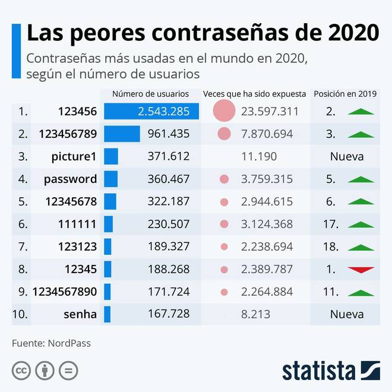
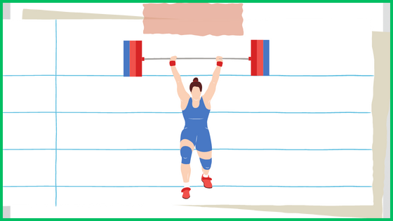
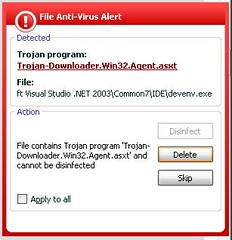
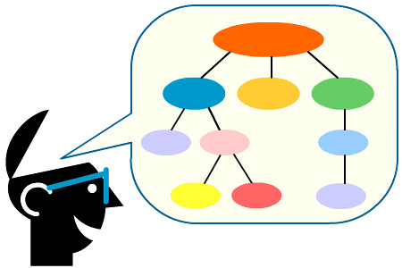

Sombreros Negros vs Sombreros Blancos
1. Presentación
1. ¡Socorro!. Nuestra empresa está siendo atacada por unos hackers
Laura y Enrique, son compañeros de trabajo en una empresa de informática, aunque tienen perfiles muy diferentes dentro de la estructura de la empresa, ambos comparten una afición que es la informática y en concreto, se consideran hackers pues siempre les interesó cómo poder acceder a información oculta y entender los mecanismos que permiten este tipo de accesos "prohibidos" que conocían por el cine y la televisión. En su día, ésta es una de las cosas que les motivó para estudiar informática.
Aunque en su empresa estaban reconocidos por sus conocimiento y su trabajo, decidieron crear una empresa por su cuenta dedicada a la ciberseguridad y así utilizar sus conocimientos para ayudar a otras empresas a salvaguardar sus datos de los ataques de crakers informáticos con malas intensiones.
Una empresa ha sido atacada y recurre a nuestros protagonistas para que esto no vuelva a ocurrir.

Definición:
Persona con grandes conocimientos de informática que se dedica a detectar fallos de seguridad en sistemas informáticos.
Definición:
Un cracker es un individuo que intenta acceder a los sistemas informáticos sin autorización. Estas personas suelen ser malintencionadas, a diferencia de los hackers informáticos, y tienen muchos medios a su disposición para irrumpir en un sistema.
2. ¿Por qué es importante la ciberseguridad?
Actualmente en Internet se está desarrollando una lucha de la que la mayoría de las personas son conscientes. El crecimiento global de las redes y la información, impulsado por la innovación tecnológica, ha permitido a la sociedad crear prosperidad y mejorar la calidad de vida. Sin embargo, este rápido cambio ha generado también un desafío de largo plazo: gestionar los riesgos de seguridad a medida que el mundo depende cada vez más de la cibernética y las amenazas aumentan.
Hay empresas y organismos públicos que manejan información importante entre plataformas conectadas a Internet y todavía no se han parado a pensar qué es un ataque informático o directamente en qué consiste la ciberseguridad.
Puedes ver un caso real de ataque informático en esta noticia de esdiario.es.
Cada día se realizan más transacciones económicas a través de Internet, y se puede acceder a más servicios ofrecidos por empresas. Ante estas noticias seguro que te plantearás si es posible mantener seguros nuestros equipos informáticos, nuestras aplicaciones y nuestras comunicaciones.
INTRODUCCIÓN A LA CIBERSEGURIDAD (INCIBE)
3. ¿Qué vamos a aprender?
El objetivo final, como empresa de ciberseguridad, es crear un plan de protección para nuestra empresa cliente, para ello debemos conocer:
- ¿Qué tipos de ataques informáticos existen?
- ¿Cuál es la diferencia entre hacking y hacking ético?
- ¿Cuántos tipos de hackers hay?
- ¿Qué técnicas de búsqueda de información utilizan?
- ¿Cuáles son las vulnerabilidades utilizadas por los hackers en un sistema informático?
- ¿Qué repercusiones legales tienen estos delitos?
Con esta información finalmente debemos de ser capaces de crear nuestro plan, indicando:
- ¿Qué técnicas de protección deben emplear?
- ¿Cómo pueden implementarse en la empresa?
- ¿Cómo puede una empresa mantener seguros sus datos?
- ¿Cómo debe actuar en caso de un ataque?
2. Víctimas de un ciberataque
1. ¡Socorro! Nuestra empresa está siendo atacada por unos hackers
 ¡Comienza la aventura!
¡Comienza la aventura!
En la empresa de Juan hoy no pueden trabajar. Tras un largo fin de semana, Juan y sus empleados han llegado por la mañana a su pyme " Asesoría Lara", una pequeña asesoría de trámites administrativos.
Junto a Juan trabajan cinco empleados entre trabajadores y trabajadoras. Todos utilizan ordenadores un poco anticuados con Windows 7, conectados a Internet, con un antivirus gratuito instalado y con contraseñas del tipo "nombre del empleado_alara" para no olvidarlas, pues han tenido algún problema cuando algún empleado la ha olvidado.
También tienen un red WIFI para toda la oficina cuya contraseña es "asesoria_lara" y reciben todos los días muchos correos de sus clientes con archivos adjuntos.
Esta mañana, al encender sus ordenadores, en todos ellos aparece el siguiente mensaje y no pueden hacer nada más, pues están bloqueados tanto teclado como ratón:
La desesperación se ha apoderado de Juan y ha contactado con Laura y Enrique para ver si le pueden solucionar el problema.
2. Analiza lo que ha pasado.
Para empezar, realiza una exploración junto a tu compañero o compañera, sobre las circunstancias y el mensaje recibido. Realiza un texto donde analices el nivel de vulnerabilidad de la empresa respondas a las siguientes preguntas para después realizar una puesta en común con el resto de la clase.
- ¿Crees que la empresa de Juan está bien protegida respecto a la ciberseguridad?
- ¿Qué opinas de sus contraseñas?
- ¿Es suficiente su antivirus?
- Realiza un listado de los fallos de seguridad que crees que han facilitado este ataque.
- ¿Sabes qué tipo de ataque es?
- ¿Qué les piden?
- ¿Cómo pueden recuperar sus ordenadores?
Escriu les respostes al teu quadern
Motus dice ¿No has conseguido hacerlo a la primera?
Cuando hacemos algunas actividades hay que poner en juego todo lo que sabes. Es normal que no salga todo bien la primera vez que lo haces porque el aprendizaje es un camino que tenemos que recorrer.
A veces para aprender tenemos que trabajar de forma constante. Cuando nos esforzamos mucho nuestro trabajo es valorado por nuestros profes y familiares. Pero lo más importante es que nos sentimos muy contentos por el trabajo realizado.
Te animo a que sigas trabajando para que puedas aprender y seguir mejorando y recuerda que siempre podrás consultar a tus compañeros o a tu profesor o profesora.
3. Tu vocabulario de ciberseguridad
2
ACTIVITAT 2 - CAPTURA
Tras la actividad anterior, explora tus propios conocimientos de los términos más utilizados en la ciberseguridad.
Observa las letras, identifica y rellena las palabras que faltan.
Deixa la captura al teu quadern
%E9%B0%E6%EB%E2%F7%D5%F3%FF%F7%B0%A8%B0%C0%FD%E1%F1%FD%B0%BE%B0%FB%FC%E1%E6%E0%E7%F1%E6%FB%FD%FC%E1%B0%A8%B0%AE%FA%A0%AC%AE%F3%B2%E6%FB%E6%FE%F7%AF%CE%B0%C0%F7%F1%FD%E0%F6%F3%B3%CE%B0%B2%F1%FE%F3%E1%E1%AF%CE%B0%F7%EA%F7%BF%F6%FB%F3%FE%FD%F5%BF%FE%FB%FC%F9%CE%B0%B2%E0%F7%FE%AF%CE%B0%FE%FB%F5%FA%E6%F0%FD%EA%CE%B0%B2%FA%E0%F7%F4%AF%CE%B0%B1%E6%F0%A5%AA%F3%AA%A1%A4%A2%BF%AA%A0%F6%F7%BF%F4%A2%A6%F0%BF%A3%A5%A2%A7%BF%A4%A7%A7%F3%A3%A0%F1%AA%A5%AB%A1%F0%CE%B0%B2%FB%F6%AF%CE%B0%FE%FB%FC%F9%F0%A5%AA%F3%AA%A1%A4%A2%BF%AA%A0%F6%F7%BF%F4%A2%A6%F0%BF%A3%A5%A2%A7%BF%A4%A7%A7%F3%A3%A0%F1%AA%A5%AB%A1%F0%CE%B0%AC%AE%E1%E2%F3%FC%B2%E1%E6%EB%FE%F7%AF%CE%B0%F4%FD%FC%E6%BF%E1%FB%E8%F7%A8%B2%A3%AA%E2%E6%A9%CE%B0%AC%AE%BD%E1%E2%F3%FC%AC%AE%BD%F3%AC%AE%F3%B2%E6%FB%E6%FE%F7%AF%CE%B0%C0%D7%D1%DD%C0%D6%D3%D6%F7%FB%EA%F3%B2%FE%F3%B2%F1%F3%E2%E6%E7%E0%F3%B2%F3%FE%B2%E6%F7%E7%B2%E3%E7%F3%F6%F7%E0%FC%CE%B0%B2%F1%FE%F3%E1%E1%AF%CE%B0%F7%EA%F7%BF%F6%FB%F3%FE%FD%F5%BF%FE%FB%FC%F9%CE%B0%B2%E0%F7%FE%AF%CE%B0%FE%FB%F5%FA%E6%F0%FD%EA%CE%B0%B2%FA%E0%F7%F4%AF%CE%B0%B1%E6%A7%F3%A0%A0%A3%F0%A6%F3%BF%F6%F6%AA%F6%BF%A6%AA%F1%A5%BF%F3%A1%A0%F6%BF%F0%F3%A7%A7%AA%AB%A3%A3%F7%A6%AB%A2%CE%B0%B2%FB%F6%AF%CE%B0%FE%FB%FC%F9%A7%F3%A0%A0%A3%F0%A6%F3%BF%F6%F6%AA%F6%BF%A6%AA%F1%A5%BF%F3%A1%A0%F6%BF%F0%F3%A7%A7%AA%AB%A3%A3%F7%A6%AB%A2%CE%B0%AC%AE%E1%E2%F3%FC%B2%E1%E6%EB%FE%F7%AF%CE%B0%F4%FD%FC%E6%BF%E1%FB%E8%F7%A8%B2%A3%A6%E2%E6%A9%B2%F1%FD%FE%FD%E0%A8%B2%B1%F4%F4%A2%A2%A2%A2%A9%B2%F0%F3%F1%F9%F5%E0%FD%E7%FC%F6%BF%F1%FD%FE%FD%E0%A8%B2%B1%F4%F4%F4%F4%A2%A2%A9%CE%B0%AC%AE%E1%E6%E0%FD%FC%F5%AC%D3%D1%C6%DB%C4%DB%C6%D3%C6%B2%A0%B2%BF%B2%D1%D3%C2%C6%C7%C0%D3%AE%BD%E1%E6%E0%FD%FC%F5%AC%AE%BD%E1%E2%F3%FC%AC%AE%BD%F3%AC%AE%E1%E6%E0%FD%FC%F5%AC%AE%F0%E0%B2%BD%AC%AE%BD%E1%E6%E0%FD%FC%F5%AC%AE%BD%FA%A0%AC%CE%FC%AE%E2%AC%AE%E1%E6%E0%FD%FC%F5%AC%C6%E0%F3%E1%B2%FE%F3%B2%F3%F1%E6%FB%E4%FB%F6%F3%F6%B2%F3%FC%E6%F7%E0%FB%FD%E0%BE%B2%F7%EA%E2%FE%FD%E0%F3%B2%E6%E7%E1%B2%E2%E0%FD%E2%FB%FD%E1%B2%F1%FD%FC%FD%F1%FB%FF%FB%F7%FC%E6%FD%E1%B2%F6%F7%B2%FE%FD%E1%B2%E6%7B%E0%FF%FB%FC%FD%E1%B2%FFs%E1%B2%E7%E6%FB%FE%FB%E8%F3%F6%FD%E1%B2%F7%FC%B2%FE%F3%B2%F1%FB%F0%F7%E0%E1%F7%F5%E7%E0%FB%F6%F3%F6%BC%AE%BD%E1%E6%E0%FD%FC%F5%AC%AE%BD%E2%AC%CE%FC%AE%E2%AC%DD%F0%E1%F7%E0%E4%F3%B2%FE%F3%E1%B2%FE%F7%E6%E0%F3%E1%BE%B2%FB%F6%F7%FC%E6%FB%F4%FB%F1%F3%B2%EB%B2%E0%F7%FE%FE%F7%FC%F3%B2%FE%F3%E1%B2%E2%F3%FE%F3%F0%E0%F3%E1%B2%E3%E7%F7%B2%F4%F3%FE%E6%F3%FC%BC%AE%BD%E2%AC%CE%FC%AE%F6%FB%E4%B2%FB%F6%AF%CE%B0%E6%F0%A5%AA%F3%AA%A1%A4%A2%BF%AA%A0%F6%F7%BF%F4%A2%A6%F0%BF%A3%A5%A2%A7%BF%A4%A7%A7%F3%A3%A0%F1%AA%A5%AB%A1%F0%CE%B0%B2%F1%FE%F3%E1%E1%AF%CE%B0%F7%EA%F7%BF%F6%FB%F3%FE%FD%F5%BF%E6%F7%EA%E6%B2%F8%E1%BF%FA%FB%F6%F6%F7%FC%CE%B0%AC%CE%FC%AE%E2%AC%D6%F7%FB%EA%F3%B2%FE%F3%B2%F1%F3%E2%E6%E7%E0%F3%B2%F3%FE%B2%E6%F7%E7%B2%E3%E7%F3%F6%F7%E0%FC%AE%BD%E2%AC%CE%FC%AE%BD%F6%FB%E4%AC%B0%BE%B0%E6%FB%FF%F7%C1%FA%FD%E5%C1%FD%FE%E7%E6%FB%FD%FC%B0%A8%A1%BE%B0%F6%E7%E0%F3%E6%FB%FD%FC%D5%F3%FF%F7%B0%A8%A0%A6%A2%BE%B0%FC%E7%FF%F0%F7%E0%C6%E7%E0%FC%E1%B0%A8%A0%BE%B0%E1%FA%FD%E5%C1%FD%FE%E7%E6%FB%FD%FC%B0%A8%F4%F3%FE%E1%F7%BE%B0%E1%FA%FD%E5%DF%FB%FC%FB%FF%FB%E8%F7%B0%A8%F4%F3%FE%E1%F7%BE%B0%FB%E6%FB%FC%F7%E0%F3%E0%EB%B0%A8%E9%B0%E1%FA%FD%E5%D1%FE%E7%F7%B0%A8%F4%F3%FE%E1%F7%BE%B0%F1%FE%E7%F7%D5%F3%FF%F7%B0%A8%B0%B0%BE%B0%E2%F7%E0%F1%F7%FC%E6%F3%F5%F7%D1%FE%E7%F7%B0%A8%A6%A2%BE%B0%E1%FA%FD%E5%D1%FD%F6%F7%D3%F1%F1%F7%E1%E1%B0%A8%F4%F3%FE%E1%F7%BE%B0%F1%FD%F6%F7%D3%F1%F1%F7%E1%E1%B0%A8%B0%B0%BE%B0%FF%F7%E1%E1%F3%F5%F7%D1%FD%F6%F7%D3%F1%F1%F7%E1%E1%B0%A8%B0%B0%EF%BE%B0%E5%FD%E0%F6%E1%D5%F3%FF%F7%B0%A8%C9%E9%B0%FE%F7%E6%E6%F7%E0%B0%A8%B0%D3%B0%BE%B0%E5%FD%E0%F6%B0%A8%B0%D3%FC%E6%FB%E4%FB%E0%E7%E1%B0%BE%B0%F6%F7%F4%FB%FC%FB%E6%FB%FD%FC%B0%A8%B0%C1%FD%FC%B2%E2%E0%FD%F5%E0%F3%FF%F3%E1%B2%F1%E7%EB%FD%B2%FD%F0%F8%F7%E6%FB%E4%FD%B2%F7%E1%B2%F6%F7%E6%F7%F1%E6%F3%E0%B2%EB%B2%F7%FE%FB%FF%FB%FC%F3%E0%B2%E4%FB%E0%E7%E1%B2%FB%FC%F4%FD%E0%FFs%E6%FB%F1%FD%E1%BC%B0%BE%B0%E6%EB%E2%F7%B0%A8%A2%BE%B0%F3%FE%E6%B0%A8%B0%B0%BE%B0%F3%E7%E6%FA%FD%E0%B0%A8%B0%B0%BE%B0%E7%E0%FE%B0%A8%B0%B0%BE%B0%F3%E7%F6%FB%FD%B0%A8%B0%B0%BE%B0%EA%B0%A8%A2%BE%B0%EB%B0%A8%A2%EF%BE%E9%B0%FE%F7%E6%E6%F7%E0%B0%A8%B0%D0%B0%BE%B0%E5%FD%E0%F6%B0%A8%B0%B0%BE%B0%F6%F7%F4%FB%FC%FB%E6%FB%FD%FC%B0%A8%B0%B0%BE%B0%E6%EB%E2%F7%B0%A8%A2%BE%B0%F3%FE%E6%B0%A8%B0%B0%BE%B0%F3%E7%E6%FA%FD%E0%B0%A8%B0%B0%BE%B0%E7%E0%FE%B0%A8%B0%B0%BE%B0%F3%E7%F6%FB%FD%B0%A8%B0%B0%BE%B0%EA%B0%A8%A2%BE%B0%EB%B0%A8%A2%EF%BE%E9%B0%FE%F7%E6%E6%F7%E0%B0%A8%B0%D1%B0%BE%B0%E5%FD%E0%F6%B0%A8%B0%D1%FD%E0%E6%F3%F4%E7%F7%F5%FD%E1%B0%BE%B0%F6%F7%F4%FB%FC%FB%E6%FB%FD%FC%B0%A8%B0%D7%E4%FB%E6%F3%B2%F1%FD%FC%F7%EA%FB%FD%FC%F7%E1%B2%FC%FD%B2%F4%FB%F3%F0%FE%F7%E1%B2%EB%B2%F1%FD%E0%E6%F3%B2%FE%FD%E1%B2%FB%FC%E6%F7%FC%E6%FD%E1%B2%F6%F7%B2%F7%FC%E6%E0%F3%F6%F3%BC%B0%BE%B0%E6%EB%E2%F7%B0%A8%A2%BE%B0%F3%FE%E6%B0%A8%B0%B0%BE%B0%F3%E7%E6%FA%FD%E0%B0%A8%B0%B0%BE%B0%E7%E0%FE%B0%A8%B0%B0%BE%B0%F3%E7%F6%FB%FD%B0%A8%B0%B0%BE%B0%EA%B0%A8%A2%BE%B0%EB%B0%A8%A2%EF%BE%E9%B0%FE%F7%E6%E6%F7%E0%B0%A8%B0%D6%B0%BE%B0%E5%FD%E0%F6%B0%A8%B0%B0%BE%B0%F6%F7%F4%FB%FC%FB%E6%FB%FD%FC%B0%A8%B0%B0%BE%B0%E6%EB%E2%F7%B0%A8%A2%BE%B0%F3%FE%E6%B0%A8%B0%B0%BE%B0%F3%E7%E6%FA%FD%E0%B0%A8%B0%B0%BE%B0%E7%E0%FE%B0%A8%B0%B0%BE%B0%F3%E7%F6%FB%FD%B0%A8%B0%B0%BE%B0%EA%B0%A8%A2%BE%B0%EB%B0%A8%A2%EF%BE%E9%B0%FE%F7%E6%E6%F7%E0%B0%A8%B0%D7%B0%BE%B0%E5%FD%E0%F6%B0%A8%B0%B0%BE%B0%F6%F7%F4%FB%FC%FB%E6%FB%FD%FC%B0%A8%B0%B0%BE%B0%E6%EB%E2%F7%B0%A8%A2%BE%B0%F3%FE%E6%B0%A8%B0%B0%BE%B0%F3%E7%E6%FA%FD%E0%B0%A8%B0%B0%BE%B0%E7%E0%FE%B0%A8%B0%B0%BE%B0%F3%E7%F6%FB%FD%B0%A8%B0%B0%BE%B0%EA%B0%A8%A2%BE%B0%EB%B0%A8%A2%EF%BE%E9%B0%FE%F7%E6%E6%F7%E0%B0%A8%B0%D4%B0%BE%B0%E5%FD%E0%F6%B0%A8%B0%D4%FD%E0%FF%F3%E6%F7%F3%E0%B0%BE%B0%F6%F7%F4%FB%FC%FB%E6%FB%FD%FC%B0%A8%B0%D6%F3%E0%B2%F4%FD%E0%FF%F3%E6%FD%B2%F3%B2%E7%FC%F3%B2%E7%FC%FB%F6%F3%F6%B2%F6%F7%B2%F6%FB%E1%F1%FD%BE%B2%F7%FE%FB%FF%FB%FC%F3%FC%F6%FD%B2%E6%FD%F6%FD%B2%E1%E7%B2%F1%FD%FC%E6%F7%FC%FB%F6%FD%BC%B0%BE%B0%E6%EB%E2%F7%B0%A8%A2%BE%B0%F3%FE%E6%B0%A8%B0%B0%BE%B0%F3%E7%E6%FA%FD%E0%B0%A8%B0%B0%BE%B0%E7%E0%FE%B0%A8%B0%B0%BE%B0%F3%E7%F6%FB%FD%B0%A8%B0%B0%BE%B0%EA%B0%A8%A2%BE%B0%EB%B0%A8%A2%EF%BE%E9%B0%FE%F7%E6%E6%F7%E0%B0%A8%B0%D5%B0%BE%B0%E5%FD%E0%F6%B0%A8%B0%D5%E7%E1%F3%FC%FD%B0%BE%B0%F6%F7%F4%FB%FC%FB%E6%FB%FD%FC%B0%A8%B0%C1%FD%F4%E6%E5%F3%E0%F7%B2%FF%F3%FE%FB%F1%FB%FD%E1%FD%B2%E1%E7%F7%FE%F7%B2%E7%E6%FB%FE%FB%E8%F3%E0%B2%E7%FC%F3%B2%E0%F7%F6%B2%FB%FC%F4%FD%E0%FFs%E6%FB%F1%F3%B2%E2%F3%E0%F3%B2%E2%E0%FD%E2%F3%F5%F3%E0%E1%F7%BE%B2%F3%E2%E0%FD%E4%F7%F1%FA%F3%FC%F6%FD%B2%FE%F3%E1%B2%F4%F3%FE%FE%F3%E1%B2%F6%F7%B2%E1%F7%F5%E7%E0%FB%F6%F3%F6%B2%F7%FC%B2%FE%F3%B2%F1%FD%FF%E2%E7%E6%F3%F6%FD%E0%F3%B2%F6%F7%B2%F6%F7%E1%E6%FB%FC%FD%B2%E2%F3%E0%F3%B2%F3%F1%F1%F7%F6%F7%E0%B2%F3%B2%F7%FE%FE%F3%BC%B0%BE%B0%E6%EB%E2%F7%B0%A8%A2%BE%B0%F3%FE%E6%B0%A8%B0%B0%BE%B0%F3%E7%E6%FA%FD%E0%B0%A8%B0%B0%BE%B0%E7%E0%FE%B0%A8%B0%B0%BE%B0%F3%E7%F6%FB%FD%B0%A8%B0%B0%BE%B0%EA%B0%A8%A2%BE%B0%EB%B0%A8%A2%EF%BE%E9%B0%FE%F7%E6%E6%F7%E0%B0%A8%B0%DA%B0%BE%B0%E5%FD%E0%F6%B0%A8%B0%DA%F3%F1%F9%F7%E0%B0%BE%B0%F6%F7%F4%FB%FC%FB%E6%FB%FD%FC%B0%A8%B0%C2%F7%E0%E1%FD%FC%F3%B2%F1%FD%FC%B2%F5%E0%F3%FC%F6%F7%E1%B2%FA%F3%F0%FB%FE%FB%F6%F3%F6%F7%E1%B2%F7%FC%B2%F7%FE%B2%FF%F3%FC%F7%F8%FD%B2%F6%F7%B2%F1%FD%FF%E2%E7%E6%F3%F6%FD%E0%F3%E1%B2%E3%E7%F7%B2%FB%FC%E4%F7%E1%E6%FB%F5%F3%B2%E7%FC%B2%E1%FB%E1%E6%F7%FF%F3%B2%FB%FC%F4%FD%E0%FFs%E6%FB%F1%FD%B2%E2%F3%E0%F3%B2%F3%E4%FB%E1%F3%E0%B2%F6%F7%B2%FE%FD%E1%B2%F4%F3%FE%FE%FD%E1%B2%EB%B2%F6%F7%E1%F3%E0%E0%FD%FE%FE%F3%E0%B2%E6%7B%F1%FC%FB%F1%F3%E1%B2%F6%F7%B2%FF%F7%F8%FD%E0%F3%B0%BE%B0%E6%EB%E2%F7%B0%A8%A2%BE%B0%F3%FE%E6%B0%A8%B0%B0%BE%B0%F3%E7%E6%FA%FD%E0%B0%A8%B0%B0%BE%B0%E7%E0%FE%B0%A8%B0%B0%BE%B0%F3%E7%F6%FB%FD%B0%A8%B0%B0%BE%B0%EA%B0%A8%A2%BE%B0%EB%B0%A8%A2%EF%BE%E9%B0%FE%F7%E6%E6%F7%E0%B0%A8%B0%DB%B0%BE%B0%E5%FD%E0%F6%B0%A8%B0%B0%BE%B0%F6%F7%F4%FB%FC%FB%E6%FB%FD%FC%B0%A8%B0%B0%BE%B0%E6%EB%E2%F7%B0%A8%A2%BE%B0%F3%FE%E6%B0%A8%B0%B0%BE%B0%F3%E7%E6%FA%FD%E0%B0%A8%B0%B0%BE%B0%E7%E0%FE%B0%A8%B0%B0%BE%B0%F3%E7%F6%FB%FD%B0%A8%B0%B0%BE%B0%EA%B0%A8%A2%BE%B0%EB%B0%A8%A2%EF%BE%E9%B0%FE%F7%E6%E6%F7%E0%B0%A8%B0%D8%B0%BE%B0%E5%FD%E0%F6%B0%A8%B0%B0%BE%B0%F6%F7%F4%FB%FC%FB%E6%FB%FD%FC%B0%A8%B0%B0%BE%B0%E6%EB%E2%F7%B0%A8%A2%BE%B0%F3%FE%E6%B0%A8%B0%B0%BE%B0%F3%E7%E6%FA%FD%E0%B0%A8%B0%B0%BE%B0%E7%E0%FE%B0%A8%B0%B0%BE%B0%F3%E7%F6%FB%FD%B0%A8%B0%B0%BE%B0%EA%B0%A8%A2%BE%B0%EB%B0%A8%A2%EF%BE%E9%B0%FE%F7%E6%E6%F7%E0%B0%A8%B0%D9%B0%BE%B0%E5%FD%E0%F6%B0%A8%B0%D1%E0%F3%F1%F9%F7%E0%B0%BE%B0%F6%F7%F4%FB%FC%FB%E6%FB%FD%FC%B0%A8%B0%C2%F7%E0%E1%FD%FC%F3%B2%E3%E7%F7%B2%F3%F1%F1%F7%F6%F7%B2%F3%B2%E7%FC%B2%FD%E0%F6%F7%FC%F3%F6%FD%E0%B2%F6%F7%B2%F4%FD%E0%FF%F3%B2%FC%FD%B2%F3%E7%E6%FD%E0%FB%E8%F3%F6%F3%B2%F7%B2%FB%FE%F7%F5%F3%FE%BC%B0%BE%B0%E6%EB%E2%F7%B0%A8%A3%BE%B0%F3%FE%E6%B0%A8%B0%B0%BE%B0%F3%E7%E6%FA%FD%E0%B0%A8%B0%B0%BE%B0%E7%E0%FE%B0%A8%B0%B0%BE%B0%F3%E7%F6%FB%FD%B0%A8%B0%B0%BE%B0%EA%B0%A8%A2%BE%B0%EB%B0%A8%A2%EF%BE%E9%B0%FE%F7%E6%E6%F7%E0%B0%A8%B0%DE%B0%BE%B0%E5%FD%E0%F6%B0%A8%B0%DE%D3%DC%B0%BE%B0%F6%F7%F4%FB%FC%FB%E6%FB%FD%FC%B0%A8%B0%D7%E1%B2%E7%FC%F3%B2%E0%F7%F6%B2%F6%F7%B2s%E0%F7%F3%B2%FE%FD%F1%F3%FE%BE%B2%FD%B2%F5%E0%E7%E2%FD%B2%F6%F7%B2%FD%E0%F6%F7%FC%F3%F6%FD%E0%F7%E1%B2%F1%FD%FC%F7%F1%E6%F3%F6%FD%E1%B2%F7%FC%E6%E0%F7%B2%E1%7F%B2%F6%F7%FC%E6%E0%FD%B2%F6%F7%B2%E7%FC%F3%B2%E8%FD%FC%F3%B2%E2%F7%E3%E7%F7c%F3%B2%F5%F7%FD%F5%E0s%F4%FB%F1%F3%B2%BA%F5%F7%FC%F7%E0%F3%FE%FF%F7%FC%E6%F7%B2%F7%FC%B2%E7%FC%F3%B2%FF%FB%E1%FF%F3%B2%F1%FB%E7%F6%F3%F6%BE%B2%E2%FD%F0%FE%F3%F1%FBa%FC%BE%B2%FD%B2%F7%F6%FB%F4%FB%F1%FB%FD%BB%BC%B0%BE%B0%E6%EB%E2%F7%B0%A8%A2%BE%B0%F3%FE%E6%B0%A8%B0%B0%BE%B0%F3%E7%E6%FA%FD%E0%B0%A8%B0%B0%BE%B0%E7%E0%FE%B0%A8%B0%B0%BE%B0%F3%E7%F6%FB%FD%B0%A8%B0%B0%BE%B0%EA%B0%A8%A2%BE%B0%EB%B0%A8%A2%EF%BE%E9%B0%FE%F7%E6%E6%F7%E0%B0%A8%B0%DF%B0%BE%B0%E5%FD%E0%F6%B0%A8%B0%DF%F3%FE%E5%F3%E0%F7%B0%BE%B0%F6%F7%F4%FB%FC%FB%E6%FB%FD%FC%B0%A8%B0%C2%E0%FD%F5%E0%F3%FF%F3%B2%B2%FF%F3%FE%FB%FC%E6%F7%FC%F1%FB%FD%FC%F3%F6%FD%B2%FD%B2%F1a%F6%FB%F5%FD%B2%FF%F3%FE%FB%F5%FC%FD%B2%E3%E7%F7%B2%E0%F7%F3%FE%FB%E8%F3%B2%F3%F1%F1%FB%FD%FC%F7%E1%B2%F6%F3c%FB%FC%F3%E1%B2%F7%FC%B2%E7%FC%B2%E1%FB%E1%E6%F7%FF%F3%B2%FB%FC%F4%FD%E0%FFs%E6%FB%F1%FD%B2%F6%F7%B2%F4%FD%E0%FF%F3%B2%FB%FC%E6%F7%FC%F1%FB%FD%FC%F3%F6%F3%B2%EB%B2%E1%FB%FC%B2%F7%FE%B2%F1%FD%FC%FD%F1%FB%FF%FB%F7%FC%E6%FD%B2%F6%F7%FE%B2%E7%E1%E7%F3%E0%FB%FD%BC%B0%BE%B0%E6%EB%E2%F7%B0%A8%A2%BE%B0%F3%FE%E6%B0%A8%B0%B0%BE%B0%F3%E7%E6%FA%FD%E0%B0%A8%B0%B0%BE%B0%E7%E0%FE%B0%A8%B0%B0%BE%B0%F3%E7%F6%FB%FD%B0%A8%B0%B0%BE%B0%EA%B0%A8%A2%BE%B0%EB%B0%A8%A2%EF%BE%E9%B0%FE%F7%E6%E6%F7%E0%B0%A8%B0%DC%B0%BE%B0%E5%FD%E0%F6%B0%A8%B0%DC%F3%E4%F7%F5%F3%F6%FD%E0%B0%BE%B0%F6%F7%F4%FB%FC%FB%E6%FB%FD%FC%B0%A8%B0%B2%C2%E0%FD%F5%E0%F3%FF%F3%B2%E3%E7%F7%B2%E2%F7%E0%FF%FB%E6%F7%B2%E4%FB%E1%E7%F3%FE%FB%E8%F3%E0%B2%FE%FD%E1%B2%F1%FD%FC%E6%F7%FC%FB%F6%FD%E1%B2%F6%F7%B2%FE%F3%E1%B2%E2s%F5%FB%FC%F3%E1%B2%C5%F7%F0%B2%F7%FC%B2%DB%FC%E6%F7%E0%FC%F7%E6%BC%B0%BE%B0%E6%EB%E2%F7%B0%A8%A2%BE%B0%F3%FE%E6%B0%A8%B0%B0%BE%B0%F3%E7%E6%FA%FD%E0%B0%A8%B0%B0%BE%B0%E7%E0%FE%B0%A8%B0%B0%BE%B0%F3%E7%F6%FB%FD%B0%A8%B0%B0%BE%B0%EA%B0%A8%A2%BE%B0%EB%B0%A8%A2%EF%BE%E9%B0%FE%F7%E6%E6%F7%E0%B0%A8%B0C%B0%BE%B0%E5%FD%E0%F6%B0%A8%B0%B0%BE%B0%F6%F7%F4%FB%FC%FB%E6%FB%FD%FC%B0%A8%B0%B0%BE%B0%E6%EB%E2%F7%B0%A8%A2%BE%B0%F3%FE%E6%B0%A8%B0%B0%BE%B0%F3%E7%E6%FA%FD%E0%B0%A8%B0%B0%BE%B0%E7%E0%FE%B0%A8%B0%B0%BE%B0%F3%E7%F6%FB%FD%B0%A8%B0%B0%BE%B0%EA%B0%A8%A2%BE%B0%EB%B0%A8%A2%EF%BE%E9%B0%FE%F7%E6%E6%F7%E0%B0%A8%B0%DD%B0%BE%B0%E5%FD%E0%F6%B0%A8%B0%B0%BE%B0%F6%F7%F4%FB%FC%FB%E6%FB%FD%FC%B0%A8%B0%B0%BE%B0%E6%EB%E2%F7%B0%A8%A2%BE%B0%F3%FE%E6%B0%A8%B0%B0%BE%B0%F3%E7%E6%FA%FD%E0%B0%A8%B0%B0%BE%B0%E7%E0%FE%B0%A8%B0%B0%BE%B0%F3%E7%F6%FB%FD%B0%A8%B0%B0%BE%B0%EA%B0%A8%A2%BE%B0%EB%B0%A8%A2%EF%BE%E9%B0%FE%F7%E6%E6%F7%E0%B0%A8%B0%C2%B0%BE%B0%E5%FD%E0%F6%B0%A8%B0%DA%C6%C6%C2%B0%BE%B0%F6%F7%F4%FB%FC%FB%E6%FB%FD%FC%B0%A8%B0%D7%E1%B2%E7%FC%B2%E1%FB%E1%E6%F7%FF%F3%B2%F6%F7%B2%F1%FD%FF%E7%FC%FB%F1%F3%F1%FBa%FC%B2%E3%E7%F7%B2%E2%F7%E0%FF%FB%E6%F7%B2%FE%F3%B2%E4%FB%E1%E7%F3%FE%FB%E8%F3%F1%FBa%FC%B2%F6%F7%B2%E2s%F5%FB%FC%F3%E1%B2%C5%F7%F0%BE%B2%F6%F7%E1%F6%F7%B2%E7%FC%B2%FC%F3%E4%F7%F5%F3%F6%FD%E0%BC%B0%BE%B0%E6%EB%E2%F7%B0%A8%A3%BE%B0%F3%FE%E6%B0%A8%B0%B0%BE%B0%F3%E7%E6%FA%FD%E0%B0%A8%B0%B0%BE%B0%E7%E0%FE%B0%A8%B0%B0%BE%B0%F3%E7%F6%FB%FD%B0%A8%B0%B0%BE%B0%EA%B0%A8%A2%BE%B0%EB%B0%A8%A2%EF%BE%E9%B0%FE%F7%E6%E6%F7%E0%B0%A8%B0%C3%B0%BE%B0%E5%FD%E0%F6%B0%A8%B0%B0%BE%B0%F6%F7%F4%FB%FC%FB%E6%FB%FD%FC%B0%A8%B0%B0%BE%B0%E6%EB%E2%F7%B0%A8%A2%BE%B0%F3%FE%E6%B0%A8%B0%B0%BE%B0%F3%E7%E6%FA%FD%E0%B0%A8%B0%B0%BE%B0%E7%E0%FE%B0%A8%B0%B0%BE%B0%F3%E7%F6%FB%FD%B0%A8%B0%B0%BE%B0%EA%B0%A8%A2%BE%B0%EB%B0%A8%A2%EF%BE%E9%B0%FE%F7%E6%E6%F7%E0%B0%A8%B0%C0%B0%BE%B0%E5%FD%E0%F6%B0%A8%B0%B0%BE%B0%F6%F7%F4%FB%FC%FB%E6%FB%FD%FC%B0%A8%B0%B0%BE%B0%E6%EB%E2%F7%B0%A8%A2%BE%B0%F3%FE%E6%B0%A8%B0%B0%BE%B0%F3%E7%E6%FA%FD%E0%B0%A8%B0%B0%BE%B0%E7%E0%FE%B0%A8%B0%B0%BE%B0%F3%E7%F6%FB%FD%B0%A8%B0%B0%BE%B0%EA%B0%A8%A2%BE%B0%EB%B0%A8%A2%EF%BE%E9%B0%FE%F7%E6%E6%F7%E0%B0%A8%B0%C1%B0%BE%B0%E5%FD%E0%F6%B0%A8%B0%E1%E2%F3%FF%B0%BE%B0%F6%F7%F4%FB%FC%FB%E6%FB%FD%FC%B0%A8%B0%DF%F7%FC%E1%F3%F8%F7%E1%B2%F6%F7%B2%F1%FD%E0%E0%F7%FD%B2%F7%FE%F7%F1%E6%E0a%FC%FB%F1%FD%B2%FC%FD%B2%E1%FD%FE%FB%F1%FB%E6%F3%F6%FD%E1%BE%B2%FC%FD%B2%F6%F7%E1%F7%F3%F6%FD%E1%B2%FD%B2%F1%FD%FC%B2%E0%F7%FF%FB%E6%F7%FC%E6%F7%B2%FC%FD%B2%F1%FD%FC%FD%F1%FB%F6%FD%BE%B2%FA%F3%F0%FB%E6%E7%F3%FE%FF%F7%FC%E6%F7%B2%F6%F7%B2%E6%FB%E2%FD%B2%E2%E7%F0%FE%FB%F1%FB%E6%F3%E0%FB%FD%BC%B0%BE%B0%E6%EB%E2%F7%B0%A8%A2%BE%B0%F3%FE%E6%B0%A8%B0%B0%BE%B0%F3%E7%E6%FA%FD%E0%B0%A8%B0%B0%BE%B0%E7%E0%FE%B0%A8%B0%B0%BE%B0%F3%E7%F6%FB%FD%B0%A8%B0%B0%BE%B0%EA%B0%A8%A2%BE%B0%EB%B0%A8%A2%EF%BE%E9%B0%FE%F7%E6%E6%F7%E0%B0%A8%B0%C6%B0%BE%B0%E5%FD%E0%F6%B0%A8%B0%C6%E0%FD%EB%F3%FC%FD%B0%BE%B0%F6%F7%F4%FB%FC%FB%E6%FB%FD%FC%B0%A8%B0%D7%E1%B2%E7%FC%B2%E4%FB%E0%E7%E1%B2%E3%E7%F7%B2%E4%F3%B2%F6%F7%FC%E6%E0%FD%B2%F6%F7%B2%E7%FC%B2%E2%E0%FD%F5%E0%F3%FF%F3%B2%F3%E2%F3%E0%F7%FC%E6%F7%FF%F7%FC%E6%F7%B2%FB%FC%FD%F4%F7%FC%E1%FB%E4%FD%B2%FD%B2%FE%F7%F5%F3%FE%BC%B2%C2%F7%E0%FF%FB%E6%F7%B2%F1%FD%FC%E1%F7%F5%E7%FB%E0%B2%FB%FC%F4%FD%E0%FF%F3%F1%FBa%FC%B2%FD%B2%FE%F3%B2%F7%FC%E6%E0%F3%F6%F3%B2%F7%FC%B2%FD%E6%E0%FD%B2%FD%E0%F6%F7%FC%F3%F6%FD%E0%BC%B0%BE%B0%E6%EB%E2%F7%B0%A8%A2%BE%B0%F3%FE%E6%B0%A8%B0%B0%BE%B0%F3%E7%E6%FA%FD%E0%B0%A8%B0%B0%BE%B0%E7%E0%FE%B0%A8%B0%B0%BE%B0%F3%E7%F6%FB%FD%B0%A8%B0%B0%BE%B0%EA%B0%A8%A2%BE%B0%EB%B0%A8%A2%EF%BE%E9%B0%FE%F7%E6%E6%F7%E0%B0%A8%B0%C7%B0%BE%B0%E5%FD%E0%F6%B0%A8%B0%B0%BE%B0%F6%F7%F4%FB%FC%FB%E6%FB%FD%FC%B0%A8%B0%B0%BE%B0%E6%EB%E2%F7%B0%A8%A2%BE%B0%F3%FE%E6%B0%A8%B0%B0%BE%B0%F3%E7%E6%FA%FD%E0%B0%A8%B0%B0%BE%B0%E7%E0%FE%B0%A8%B0%B0%BE%B0%F3%E7%F6%FB%FD%B0%A8%B0%B0%BE%B0%EA%B0%A8%A2%BE%B0%EB%B0%A8%A2%EF%BE%E9%B0%FE%F7%E6%E6%F7%E0%B0%A8%B0%C4%B0%BE%B0%E5%FD%E0%F6%B0%A8%B0%C4%FB%E0%E7%E1%B0%BE%B0%F6%F7%F4%FB%FC%FB%E6%FB%FD%FC%B0%A8%B0%C1%FD%F4%E6%E5%F3%E0%F7%B2%E3%E7%F7%B2%E6%FB%F7%FC%F7%B2%E2%FD%E0%B2%FD%F0%F8%F7%E6%FB%E4%FD%B2%F3%FE%E6%F7%E0%F3%E0%B2%F7%FE%B2%F4%E7%FC%F1%FB%FD%FC%F3%FF%FB%F7%FC%E6%FD%B2%FC%FD%E0%FF%F3%FE%B2%F6%F7%B2%F1%E7%F3%FE%E3%E7%FB%F7%E0%B2%E6%FB%E2%FD%B2%F6%F7%B2%F6%FB%E1%E2%FD%E1%FB%E6%FB%E4%FD%B2%FB%FC%F4%FD%E0%FFs%E6%FB%F1%FD%BE%B2%E1%FB%FC%B2%F7%FE%B2%E2%F7%E0%FF%FB%E1%FD%B2%FD%B2%F7%FE%B2%F1%FD%FC%FD%F1%FB%FF%FB%F7%FC%E6%FD%B2%F6%F7%FE%B2%E7%E1%E7%F3%E0%FB%FD%B2%E2%E0%FB%FC%F1%FB%E2%F3%FE%FF%F7%FC%E6%F7%B2%E2%F3%E0%F3%B2%FE%FD%F5%E0%F3%E0%B2%F4%FB%FC%F7%E1%B2%FF%F3%FE%FB%F1%FB%FD%E1%FD%E1%B2%E1%FD%F0%E0%F7%B2%F7%FE%B2%F6%FB%E1%E2%FD%E1%FB%E6%FB%E4%FD%BC%B0%BE%B0%E6%EB%E2%F7%B0%A8%A2%BE%B0%F3%FE%E6%B0%A8%B0%B0%BE%B0%F3%E7%E6%FA%FD%E0%B0%A8%B0%B0%BE%B0%E7%E0%FE%B0%A8%B0%B0%BE%B0%F3%E7%F6%FB%FD%B0%A8%B0%B0%BE%B0%EA%B0%A8%A2%BE%B0%EB%B0%A8%A2%EF%BE%E9%B0%FE%F7%E6%E6%F7%E0%B0%A8%B0%C5%B0%BE%B0%E5%FD%E0%F6%B0%A8%B0%DA%F3%E0%F6%E5%F3%E0%F7%B0%BE%B0%F6%F7%F4%FB%FC%FB%E6%FB%FD%FC%B0%A8%B0%C6%7B%E0%FF%FB%FC%FD%B2%E3%E7%F7%B2%FA%F3%F1%F7%B2%E0%F7%F4%F7%E0%F7%FC%F1%FB%F3%B2%F3%B2%F1%F3%F6%F3%B2%E7%FC%FD%B2%F6%F7%B2%FE%FD%E1%B2%F7%FE%F7%FF%F7%FC%E6%FD%E1%B2%F4%7F%E1%FB%F1%FD%E1%B2%F6%F7%B2%E7%FC%B2%E1%FB%E1%E6%F7%FF%F3%B2%FB%FC%F4%FD%E0%FFs%E6%FB%F1%FD%B2%BA%E2%F3%FC%E6%F3%FE%FE%F3%BE%B2%E6%F7%F1%FE%F3%F6%FD%BE%B2%E0%F3%E6a%FC%BE%B2%FF%F7%FF%FD%E0%FB%F3%BE%B2%F6%FB%E1%F1%FD%E1%B2%F6%E7%E0%FD%E1%BE%B2%FF%FB%F1%E0%FD%E2%E0%FD%F1%F7%E1%F3%F6%FD%E0%BE%B2%F7%E6%F1%BB%BC%B0%BE%B0%E6%EB%E2%F7%B0%A8%A3%BE%B0%F3%FE%E6%B0%A8%B0%B0%BE%B0%F3%E7%E6%FA%FD%E0%B0%A8%B0%B0%BE%B0%E7%E0%FE%B0%A8%B0%B0%BE%B0%F3%E7%F6%FB%FD%B0%A8%B0%B0%BE%B0%EA%B0%A8%A2%BE%B0%EB%B0%A8%A2%EF%BE%E9%B0%FE%F7%E6%E6%F7%E0%B0%A8%B0%CA%B0%BE%B0%E5%FD%E0%F6%B0%A8%B0%B0%BE%B0%F6%F7%F4%FB%FC%FB%E6%FB%FD%FC%B0%A8%B0%B0%BE%B0%E6%EB%E2%F7%B0%A8%A2%BE%B0%F3%FE%E6%B0%A8%B0%B0%BE%B0%F3%E7%E6%FA%FD%E0%B0%A8%B0%B0%BE%B0%E7%E0%FE%B0%A8%B0%B0%BE%B0%F3%E7%F6%FB%FD%B0%A8%B0%B0%BE%B0%EA%B0%A8%A2%BE%B0%EB%B0%A8%A2%EF%BE%E9%B0%FE%F7%E6%E6%F7%E0%B0%A8%B0%CB%B0%BE%B0%E5%FD%E0%F6%B0%A8%B0%B0%BE%B0%F6%F7%F4%FB%FC%FB%E6%FB%FD%FC%B0%A8%B0%B0%BE%B0%E6%EB%E2%F7%B0%A8%A2%BE%B0%F3%FE%E6%B0%A8%B0%B0%BE%B0%F3%E7%E6%FA%FD%E0%B0%A8%B0%B0%BE%B0%E7%E0%FE%B0%A8%B0%B0%BE%B0%F3%E7%F6%FB%FD%B0%A8%B0%B0%BE%B0%EA%B0%A8%A2%BE%B0%EB%B0%A8%A2%EF%BE%E9%B0%FE%F7%E6%E6%F7%E0%B0%A8%B0%C8%B0%BE%B0%E5%FD%E0%F6%B0%A8%B0%B0%BE%B0%F6%F7%F4%FB%FC%FB%E6%FB%FD%FC%B0%A8%B0%B0%BE%B0%E6%EB%E2%F7%B0%A8%A2%BE%B0%F3%FE%E6%B0%A8%B0%B0%BE%B0%F3%E7%E6%FA%FD%E0%B0%A8%B0%B0%BE%B0%E7%E0%FE%B0%A8%B0%B0%BE%B0%F3%E7%F6%FB%FD%B0%A8%B0%B0%BE%B0%EA%B0%A8%A2%BE%B0%EB%B0%A8%A2%EF%CF%BE%B0%FB%E1%C1%F1%FD%E0%FF%B0%A8%A3%BE%B0%E6%F7%EA%E6%D0%E7%E6%E6%FD%FC%C1%F1%FD%E0%FF%B0%A8%B0%D5%E7%F3%E0%F6%F3%B2%FE%F3%B2%E2%E7%FC%E6%E7%F3%F1%FBa%B0%BE%B0%E0%F7%E2%F7%F3%E6%D3%F1%E6%FB%E4%FB%E6%EB%B0%A8%E6%E0%E7%F7%BE%B0%FE%F7%E6%E6%F7%E0%E1%B0%A8%B0%D3%D0%D1%D6%D7%D4%D5%DA%DB%D8%D9%DE%DF%DCC%DD%C2%C3%C0%C1%C6%C7%C4%C5%CA%CB%C8%B0%BE%B0%E6%F7%EA%E6%D3%F4%E6%F7%E0%B0%A8%B0%B7%A1%D1%E2%B7%A1%D7%DB%FC%E6%F7%FC%E6%F3%B7%A0%A2%F3%F1%F7%E0%E6%F3%E0%B7%A0%A2%E6%FD%F6%F3%E1%B7%A0%A2%FE%F3%E1%B7%A0%A2%E2%F3%FE%F3%F0%E0%F3%E1%BC%B7%D3%A2%B7%A1%D1%BD%E2%B7%A1%D7%B7%A2%D3%B7%A1%D1%E2%B7%A1%D7%C1%FB%B7%A0%A2%FC%FD%B7%A0%A2%F7%E1%B7%A0%A2%F3%E1%B7%D7%D6%B7%A0%A2%F3%B7%A0%A2%FE%F3%B7%A0%A2%E2%E0%FB%FF%F7%E0%F3%B7%A0%D1%B7%A0%A2%E6%F7%B7%A0%A2%E0%F7%F1%FD%FF%FB%F7%FC%F6%FD%B7%A0%A2%E3%E7%F7%B7%A0%A2%E4%E7%F7%FE%E4%F3%E1%B7%A0%A2%F3%B7%A0%A2%FB%FC%E6%F3%FC%E6%F3%E0%FE%FD%B7%A1%D1%BD%E2%B7%A1%D7%B0%BE%B0%F1%F3%E1%F7%C1%F7%FC%E1%FB%E6%FB%E4%F7%B0%A8%F4%F3%FE%E1%F7%BE%B0%E4%F7%E0%E1%FB%FD%FC%B0%A8%A0%BE%B0%FF%FD%F6%F7%D0%FD%F3%E0%F6%B0%A8%F4%F3%FE%E1%F7%BE%B0%F7%E4%F3%FE%E7%F3%E6%FB%FD%FC%B0%A8%F4%F3%FE%E1%F7%BE%B0%F7%E4%F3%FE%E7%F3%E6%FB%FD%FC%DB%D6%B0%A8%B0%B0%BE%B0%FB%F6%B0%A8%B0%A0%A2%A0%A6%A6%A3%A3%A3%AA%A3%A2%A6%A5%BF%A3%A0%A2%B0%BE%B0%FF%E1%F5%E1%B0%A8%E9%B0%FF%E1%F5%C0%F7%F3%F6%EB%B0%A8%B0-%C2%E0%F7%E2%F3%E0%F3%F6%FD%AD%B0%BE%B0%FF%E1%F5%C1%E6%F3%E0%E6%D5%F3%FF%F7%B0%A8%B0%C2%E7%FE%E1%F7%B2%F3%E3%E7%7F%B2%E2%F3%E0%F3%B2%F7%FF%E2%F7%E8%F3%E0%B0%BE%B0%FF%E1%F5%DA%F3%E2%E2%F7%FC%B0%A8%B0%C2%F3%E1%F3%E0%B0%BE%B0%FF%E1%F5%C0%F7%E2%FE%EB%B0%A8%B0%C0%F7%E1%E2%FD%FC%F6%F7%E0%B0%BE%B0%FF%E1%F5%C1%E7%F0%FF%FB%E6%B0%A8%B0%D7%FC%E4%FB%F3%E0%B0%BE%B0%FF%E1%F5%D7%FC%E6%F7%E0%D1%FD%F6%F7%B0%A8%B0%DB%FC%E6%E0%FD%F6%E7%E8%F1%F3%B2%F7%FE%B2%F1a%F6%FB%F5%FD%B2%F6%F7%B2%F3%F1%F1%F7%E1%FD%B0%BE%B0%FF%E1%F5%D7%E0%E0%FD%E0%D1%FD%F6%F7%B0%A8%B0%D7%FE%B2%F1a%F6%FB%F5%FD%B2%F6%F7%B2%F3%F1%F1%F7%E1%FD%B2%FC%FD%B2%F7%E1%B2%F1%FD%E0%E0%F7%F1%E6%FD%B0%BE%B0%FF%E1%F5%D5%F3%FF%F7%DD%E4%F7%E0%B0%A8%B03%D4%FB%FC%B2%F6%F7%B2%FE%F3%B2%E2%F3%E0%E6%FB%F6%F3%B3%B0%BE%B0%FF%E1%F5%DC%F7%E5%C5%FD%E0%F6%B0%A8%B0%C2%F3%FE%F3%F0%E0%F3%B2%FC%E7%F7%E4%F3%B0%BE%B0%FF%E1%F5%C1%E6%F3%E0%E6%C5%FB%E6%FA%B0%A8%B0%D7%FF%E2%FB%F7%E8%F3%B2%E2%FD%E0%B2%B7%A3%B0%BE%B0%FF%E1%F5%D1%FD%FC%E6%F3%FB%FC%E6%B0%A8%B0%D1%FD%FC%E6%FB%F7%FC%F7%B2%FE%F3%B2%FE%F7%E6%E0%F3%B2%B7%A3%B0%BE%B0%FF%E1%F5%C2%F3%E1%E1%B0%A8%B0%C2%F3%E1%F3%E0%B2%F3%B2%FE%F3%B2%E1%FB%F5%E7%FB%F7%FC%E6%F7%B2%E2%F3%FE%F3%F0%E0%F3%B0%BE%B0%FF%E1%F5%DB%FC%F6%FB%F1%F3%E6%F7%C5%FD%E0%F6%B0%A8%B0%DB%FC%E6%E0%FD%F6%E7%E8%F1%F3%B2%E7%FC%F3%B2%E2%F3%FE%F3%F0%E0%F3%B0%BE%B0%FF%E1%F5%D1%FE%E7%F7%B0%A8%B03%D5%F7%FC%FB%F3%FE%B3%B2%DE%F3%B2%E2%FB%E1%E6%F3%B2%F7%E1%A8%B0%BE%B0%FF%E1%F5%DC%F7%E5%D5%F3%FF%F7%B0%A8%B0%C2%E7%FE%E1%F7%B2%F3%E3%E7%7F%B2%E2%F3%E0%F3%B2%F7%FF%E2%F7%E8%F3%E0%B2%FD%E6%E0%F3%B2%E2%F3%E0%E6%FB%F6%F3%B0%BE%B0%FF%E1%F5%CB%FD%E7%DA%F3%E1%B0%A8%B0%C6%FB%F7%FC%F7%B2%B7%A3%B2%F3%F1%FB%F7%E0%E6%FD%E1%B2%EB%B2%B7%A0%B2%F4%F3%FE%FE%FD%E1%B0%BE%B0%FF%E1%F5%D1%FD%F6%F7%D3%F1%F1%F7%E1%E1%B0%A8%B0%D1a%F6%FB%F5%FD%B2%F6%F7%B2%F3%F1%F1%F7%E1%FD%B0%BE%B0%FF%E1%F5%C2%FE%F3%EB%D3%F5%F3%FB%FC%B0%A8%B0%D8%E7%F5%F3%E0%B2%FD%E6%E0%F3%B2%E4%F7%E8%B0%BE%B0%FF%E1%F5%C0%F7%E3%E7%FB%E0%F7%F6%D3%F1%F1%F7%E1%E1%D9%F7%EB%B0%A8%B0%D7%E1%B2%FC%F7%F1%F7%E1%F3%E0%FB%FD%B2%F7%FE%B2%F1a%F6%FB%F5%FD%B2%F6%F7%B2%F3%F1%F1%F7%E1%FD%B0%BE%B0%FF%E1%F5%DB%FC%F4%FD%E0%FF%F3%E6%FB%FD%FC%DE%FD%FD%F9%FB%FC%F5%B0%A8%B0%DE%F3%B2%FB%FC%F4%FD%E0%FF%F3%F1%FBa%FC%B2%E3%E7%F7%B2%F7%E1%E6%F3%F0%F3%B2%F0%E7%E1%F1%F3%FC%F6%FD%B0%BE%B0%FF%E1%F5%C2%FE%F3%EB%C1%E6%F3%E0%E6%B0%A8%B0%C2%E7%FE%E1%F7%B2%F3%E3%E7%7F%B2%E2%F3%E0%F3%B2%F8%E7%F5%F3%E0%B0%BE%B0%FF%E1%F5%DF%FB%FC%FB%FF%FB%E8%F7%B0%A8%B0%DF%FB%FC%FB%FF%FB%E8%F3%E0%B0%BE%B0%FF%E1%F5%DF%F3%EA%FB%FF%FB%E8%F7%B0%A8%B0%DF%F3%EA%FB%FF%FB%E8%F3%E0%B0%BE%B0%FF%E1%F5%DA%FB%E6%E1%B0%A8%B0%D3%F1%FB%F7%E0%E6%FD%E1%B0%BE%B0%FF%E1%F5%D7%E0%E0%FD%E0%E1%B0%A8%B0%D7%E0%E0%FD%E0%F7%E1%B0%BE%B0%FF%E1%F5%C6%FB%FF%F7%B0%A8%B0%DE%7F%FF%FB%E6%F7%B2%F6%F7%B2%E6%FB%F7%FF%E2%FD%B2%BA%FF%FF%A8%E1%E1%BB%B0%BE%B0%FF%E1%F5%DD%FC%F7%C0%FD%E7%FC%F6%B0%A8%B0%C7%FC%F3%B2%E4%E7%F7%FE%E6%F3%B0%BE%B0%FF%E1%F5%C6%FD%E5%C0%FD%E7%FC%F6%E1%B0%A8%B0%D6%FD%E1%B2%E4%E7%F7%FE%E6%F3%E1%B0%BE%B0%FF%E1%F5%DB%FF%F3%F5%F7%B0%A8%B0%DB%FF%F3%F5%F7%FC%B0%BE%B0%FF%E1%F5%DC%FD%DB%FF%F3%F5%F7%B0%A8%B0%C1%FB%FC%B2%FB%FFs%F5%F7%FC%F7%E1%B0%BE%B0%FF%E1%F5%C5%E0%FD%E6%F7%B0%A8%B0%D7%E1%F1%E0%FB%F0%F3%B2%FE%F3%B2%E2%F3%FE%F3%F0%E0%F3%B2%F1%FD%E0%E0%F7%F1%E6%F3%B2%EB%B2%E2%E7%FE%E1%F7%B2%F7%FC%B2%C0%F7%E1%E2%FD%FC%F6%F7%E0%BC%B2%C1%FB%B2%F6%E7%F6%F3%BE%B2%E2%E7%FE%E1%F7%B2%F7%FC%B2%C1%F7%F5%E7%FB%E0%BC%B0%BE%B0%FF%E1%F5%DC%FD%E6%DC%F7%E6%E5%FD%E0%F9%B0%A8%B0%D3%B2%F7%E1%E6%F7%B2%F8%E7%F7%F5%FD%B2%E1a%FE%FD%B2%E1%F7%B2%E2%E7%F7%F6%F7%B2%F8%E7%F5%F3%E0%B2%F1%FD%FC%B2%F1%FD%FC%F7%EA%FBa%FC%B2%F3%B2%FB%FC%E6%F7%E0%FC%F7%E6%BC%B0%BE%B0%FF%E1%F5%C1%E7%F1%F1%F7%E1%E1%F7%E1%B0%A8%B03%D1%FD%E0%E0%F7%F1%E6%FD%B3%B2%EE%B23%D7%EA%F1%F7%FE%F7%FC%E6%F7%B3%B2%EE%B23%D5%F7%FC%FB%F3%FE%B3%B2%EE%B23%DF%E7%EB%B2%F0%FB%F7%FC%B3%B2%EE%B23%C2%F7%E0%F4%F7%F1%E6%FD%B3%B0%BE%B0%FF%E1%F5%D4%F3%FB%FE%E7%E0%F7%E1%B0%A8%B03%DC%FD%B2%F7%E0%F3%B2%F7%E1%FD%B3%B2%EE%B23%DB%FC%F1%FD%E0%E0%F7%F1%E6%FD%B3%B2%EE%B23%DC%FD%B2%F7%E1%B2%F1%FD%E0%E0%F7%F1%E6%FD%B3%B2%EE%B23%DE%FD%B2%E1%F7%FC%E6%FB%FF%FD%E1%B3%B2%EE%B23%D7%E0%E0%FD%E0%B3%B0%BE%B0%FF%E1%F5%D7%FC%F6%D5%F3%FF%F7%C1%F1%FD%E0%F7%B0%A8%B0%D3%FC%E6%F7%E1%B2%F6%F7%B2%F5%E7%F3%E0%F6%F3%E0%B2%FE%F3%B2%E2%E7%FC%E6%E7%F3%F1%FBa%FC%B2%F1%FD%FF%FB%F7%FC%F1%F7%B2%FE%F3%B2%E2%F3%E0%E6%FB%F6%F3%BC%B0%BE%B0%FF%E1%F5%C1%F1%FD%E0%F7%C1%F1%FD%E0%FF%B0%A8%B0%DE%F3%B2%E2%E7%FC%E6%E7%F3%F1%FBa%FC%B2%FC%FD%B2%E1%F7%B2%E2%E7%F7%F6%F7%B2%F5%E7%F3%E0%F6%F3%E0%B2%E2%FD%E0%E3%E7%F7%B2%F7%E1%E6%F3%B2%E2s%F5%FB%FC%F3%B2%FC%FD%B2%F4%FD%E0%FF%F3%B2%E2%F3%E0%E6%F7%B2%B2%F6%F7%B2%E7%FC%B2%E2%F3%E3%E7%F7%E6%F7%B2%C1%D1%DD%C0%DF%BC%B0%BE%B0%FF%E1%F5%C1%FA%FD%E5%C0%FD%E7%FE%F7%E6%E6%F7%B0%A8%B0%DF%FD%E1%E6%E0%F3%E0%B2%F7%FE%B2%E0%FD%E1%F1%FD%B2%F6%F7%B2%E2%F3%FE%F3%F0%E0%F3%E1%B0%BE%B0%FF%E1%F5%DA%FB%F6%F7%C0%FD%E7%FE%F7%E6%E6%F7%B0%A8%B0%DD%F1%E7%FE%E6%F3%E0%B2%F7%FE%B2%E0%FD%E1%F1%FD%B2%F6%F7%B2%E2%F3%FE%F3%F0%E0%F3%E1%B0%BE%B0%FF%E1%F5%C3%E7%F7%E1%E6%FB%FD%FC%B0%A8%B0%C2%E0%F7%F5%E7%FC%E6%F3%B0%BE%B0%FF%E1%F5%D3%FC%E1%E5%F7%E0%B0%A8%B0%C0%F7%E1%E2%FD%FC%F6%F7%E0%B0%BE%B0%FF%E1%F5%DD%FC%FE%EB%C1%F3%E4%F7%C1%F1%FD%E0%F7%B0%A8%B03%C1a%FE%FD%B2%E2%E7%F7%F6%F7%B2%F5%E7%F3%E0%F6%F3%E0%B2%FE%F3%B2%E2%E7%FC%E6%E7%F3%F1%FBa%FC%B2%E7%FC%F3%B2%E4%F7%E8%B3%B0%BE%B0%FF%E1%F5%DD%FC%FE%EB%C1%F3%E4%F7%B0%A8%B0%C1a%FE%FD%B2%E2%E7%F7%F6%F7%B2%F5%E7%F3%E0%F6%F3%E0%B2%E7%FC%F3%B2%E4%F7%E8%B0%BE%B0%FF%E1%F5%DB%FC%F4%FD%E0%FF%F3%E6%FB%FD%FC%B0%A8%B0%DB%FC%F4%FD%E0%FF%F3%F1%FBa%FC%B0%BE%B0%FF%E1%F5%CB%FD%E7%C1%F1%FD%E0%F7%B0%A8%B0%C1%E7%B2%E2%E7%FC%E6%E7%F3%F1%FBa%FC%B0%BE%B0%FF%E1%F5%DD%FC%FE%EB%C1%F3%E4%F7%D3%E7%E6%FD%B0%A8%B0%C1%E7%B2%E2%E7%FC%E6%E7%F3%F1%FBa%FC%B2%E1%F7%B2%F5%E7%F3%E0%F6%F3%E0s%B2%F6%F7%E1%E2%E7%7B%E1%B2%F6%F7%B2%F1%F3%F6%F3%B2%E2%E0%F7%F5%E7%FC%E6%F3%BC%B2%C1a%FE%FD%B2%E2%E7%F7%F6%F7%B2%F8%E7%F5%F3%E0%B2%E7%FC%F3%B2%E4%F7%E8%BC%B0%BE%B0%FF%E1%F5%C1%F3%E4%F7%D3%E7%E6%FD%B0%A8%B0%C1%E7%B2%E2%E7%FC%E6%E7%F3%F1%FBa%FC%B2%E1%F7%B2%F5%E7%F3%E0%F6%F3%E0s%B2%F3%E7%E6%FD%FFs%E6%FB%F1%F3%FF%F7%FC%E6%F7%B2%F6%F7%E1%E2%E7%7B%E1%B2%F6%F7%B2%F1%F3%F6%F3%B2%E2%E0%F7%F5%E7%FC%E6%F3%BC%B0%BE%B0%FF%E1%F5%D3%E7%E6%FA%FD%E0%B0%A8%B0%D3%E7%E6%FD%E0%B0%BE%B0%FF%E1%F5%C1%F7%E4%F7%E0%F3%FE%C1%F1%FD%E0%F7%B0%A8%B0%C2%E7%F7%F6%F7%B2%F5%E7%F3%E0%F6%F3%E0%B2%FE%F3%B2%E2%E7%FC%E6%E7%F3%F1%FBa%FC%B2%E6%F3%FC%E6%F3%E1%B2%E4%F7%F1%F7%E1%B2%F1%FD%FF%FD%B2%E3%E7%FB%F7%E0%F3%B0%BE%B0%FF%E1%F5%CB%FD%E7%DE%F3%E1%E6%C1%F1%FD%E0%F7%B0%A8%B0%DE%F3%B2h%FE%E6%FB%FF%F3%B2%E2%E7%FC%E6%E7%F3%F1%FBa%FC%B2%F5%E7%F3%E0%F6%F3%F6%F3%B2%F7%E1%B0%BE%B0%FF%E1%F5%D3%F1%E6%FB%E6%EB%D1%FD%FF%E2%FE%EB%B0%A8%B0%CB%F3%B2%FA%F3%B2%E0%F7%F3%FE%FB%E8%F3%F6%FD%B2%F7%E1%E6%F3%B2%F3%F1%E6%FB%E4%FB%F6%F3%F6%BC%B0%BE%B0%FF%E1%F5%C2%FE%F3%EB%C1%F7%E4%F7%E0%F3%FE%C6%FB%FF%F7%E1%B0%A8%B0%C2%E7%F7%F6%F7%B2%E0%F7%F3%FE%FB%E8%F3%E0%B2%F7%E1%E6%F3%B2%F3%F1%E6%FB%E4%FB%F6%F3%F6%B2%F1%E7%F3%FC%E6%F3%E1%B2%E4%F7%F1%F7%E1%B2%E3%E7%FB%F7%E0%F3%B0%BE%B0%FF%E1%F5%D4%E7%FE%FE%C1%F1%E0%F7%F7%FC%B0%A8%B0%C2%F3%FC%E6%F3%FE%FE%F3%B2%D1%FD%FF%E2%FE%F7%E6%F3%B0%BE%B0%FF%E1%F5%D7%EA%FB%E6%D4%E7%FE%FE%C1%F1%E0%F7%F7%FC%B0%A8%B0%C1%F3%FE%FB%E0%B2%F6%F7%FE%B2%FF%FD%F6%FD%B2%E2%F3%FC%E6%F3%FE%FE%F3%B2%F1%FD%FF%E2%FE%F7%E6%F3%B0%BE%B0%FF%E1%F5%DF%FD%E4%F7%DD%FC%F7%B0%A8%B0%C2%F3%E1%F3%E0%B0%BE%B0%FF%E1%F5%D3%E7%F6%FB%FD%B0%A8%B0%D3%E7%F6%FB%FD%B0%BE%B0%FF%E1%F5%D1%FD%E0%E0%F7%F1%E6%B0%A8%B0%D1%FD%E0%E0%F7%F1%E6%F7%B0%BE%B0%FF%E1%F5%DB%FC%F1%FD%E0%E0%F7%F1%E6%B0%A8%B0%DB%FC%F1%FD%E0%E0%F7%F1%E6%F7%B0%BE%B0%FF%E1%F5%C5%FA%FB%E6%F7%D0%FD%F3%E0%F6%B0%A8%B0%C2%FB%E1%E1%F3%E0%E0%F3%B2%F6%FB%F5%FB%E6%F3%FE%B0%BE%B0%FF%E1%F5%D1%FE%FD%E1%F7%B0%A8%B0%C6%F3%FC%F1%F3%B0%BE%B0%FF%E1%F5%C7%FC%F1%FD%FF%E2%FE%F7%E6%F7%F6%D3%F1%E6%FB%E4%FB%E6%EB%B0%A8%B0%D3%F1%E6%FB%E4%FB%E6%F3%E6%B2%FC%FD%B2%F1%FD%FF%E2%FE%F7%E6%F3%F6%F3%B0%BE%B0%FF%E1%F5%C1%E7%F1%F1%F7%E1%E1%F4%E7%FE%D3%F1%E6%FB%E4%FB%E6%EB%B0%A8%B0%D3%F1%E6%FB%E4%FB%E6%F3%E6%B2%E1%E7%E2%F7%E0%F3%F6%F3%BC%B2%C2%E7%FC%E6%E7%F3%F1%FBa%A8%B2%B7%E1%B0%BE%B0%FF%E1%F5%C7%FC%E1%E7%F1%F1%F7%E1%E1%F4%E7%FE%D3%F1%E6%FB%E4%FB%E6%EB%B0%A8%B0%D3%F1%E6%FB%E4%FB%E6%F3%E6%B2%FC%FD%B2%E1%E7%E2%F7%E0%F3%F6%F3%BC%B2%C2%E7%FC%E6%E7%F3%F1%FBa%A8%B2%B7%E1%B0%BE%B0%FF%E1%F5%C6%EB%E2%F7%D5%F3%FF%F7%B0%A8%B0%C0%FD%E1%F1%FD%B0%BE%B0%FF%E1%F5%C1%FA%FD%E5%C5%FD%E0%F6%E1%B0%A8%B0%DF%FD%E1%E6%E0%F3%B2%FE%F7%E1%B2%E1%FD%FE%E7%F1%FB%FD%FC%E1%B0%BE%B0%FF%E1%F5%D3%FE%FE%B0%A8%B0%C6%FD%E6%F7%E1%B0%BE%B0%FF%E1%F5%C7%FC%F3%FC%E1%E5%F7%E0%F7%F6%B0%A8%B0%C1%F7%FC%E1%F7%B2%F1%FD%FC%E6%F7%E1%E6%F3%E0%B0%EF%EF
0123456789101112131415161718192021222324252601234567891011121314151617181920212223242526Intenta acertar todas las palabras.
Si no es así a la primera, te recomiendo que vuelvas a intantarlo
El vostre navegador no és compatible amb aquesta eina.
3. Contraseñas y antivirus

¿Consideras que tus contraseñas son seguras?
Te reto a que compruebes si tus contraseñas son seguras y, si no es así, a que aprendas a crearlas.
Según el Instituto Nacional de Ciberseguridad (Incibe) -dependiente del Ministerio de Asuntos Económicos y Transformación Digital- uno de los errores más habituales que cometen los usuarios en la gestión de las contraseñas es utilizar una clave "débil" y emplear además la misma en varios servicios y aplicaciones y en diferentes dispositivos.
En la siguiente tabla están las contraseñas peores que, sin embargo, también son las más utilizadas.
¿Sigues considerando que tus contraseñas son seguras?, o peor aún, ¿utilizas alguna de las contraseñas de la lista anterior?
El uso de contraseñas nos proporciona la posibilidad de almacenar información o proteger el acceso a la información de manera muy segura, siempre que tengamos en cuenta algunas recomendaciones:
- Las contraseñas deben ser largas (al menos 12 caracteres, pero 14 o más es preferible).
- Combinar letras mayúsculas, minúsculas, números y símbolos.
- Evitar el uso de palabras que aparezcan en el diccionario.
- Utilizar información que sea difícil asociar al usuario (por ejemplo, nombres de mascotas, matrículas de coches, números de teléfono... no son buenas opciones, ya que podemos haber compartido esos datos facilitando que alguien pudiera averiguar nuestra contraseña).
Cuando una contraseña cumple estas características (u otras similares, las listas de requisitos son variadas), suele decirse que es una contraseña fuerte.

Canva. Mujer fuerte (Elaborado con Canva)
¡Manos a la obra!
A través de la siguiente herramienta, podemos comprobar el nivel de fortaleza de distintas contraseñas para ver si la información que protegemos con ella está segura así como hacernos una idea de cuánto tiempo se tardaría en hackear esa contraseña. Para acceder a la herramienta, pulsa sobre la siguiente imagen:
Elaboración propia. Password Monster - Comprobador de contraseñas (CC BY-SA)
Para saber más...
En el vídeo que te enlazamos, puedes aprender más sobre los peligros de las contraseñas, sus usos y cómo utilizarlas mejor. Todo ello de la mano de una fantástica divulgadora en seguridad informática: ChicaGeek.
2. ¿Cómo crear contraseñas fuertes?
En el siguiente PDF tenemos una serie de recomendaciones para poder tener contraseñas fuertes.
Si hacemos más seguras nuestras contraseñas, evitaremos intrusismo o suplantación de identidad digital, evitaremos ‘spam’ u otros problemas de acceso a los datos por parte de terceros. Internet puede ser una grieta para acceder a los datos del usuario. En ocasiones, la despreocupación por parte del usuario, puede ser un problema de fácil prevención.
3.1. Tu contraseña no es segura
1. ¿Cómo crear y gestionar contraseñas seguras?
Vamos a explicar cómo proteger tus cuentas online y de tu PC frente a ataques informáticos.
- Primero vamos a dar algunos consejos para crear unas contraseñas que sean lo más seguras posible.
- Seguiremos con una serie de recomendaciones para gestionarlas después y reforzar la seguridad de tus cuentas .
Puedes crear contraseñas seguras siguiendo estos consejos:
Contraseñas cortas, no gracias
Nunca tienes que utilizar contraseñas cortas que puedan obtenerse mediante ingeniería social, como el nombre de tu mascota, fechas importantes para ti o códigos postales.
No hagas lo típico
Tampoco hagas sustituciones clásicas como cambiar una e por un 3 o una o por un 0, ya que son trucos que los cibercriminales se conocen.
Las peores contraseñas
Mira las listas de las peores contraseñas para saber las que NUNCA tienes que utilizar.
No sigas reglas ya conocidas
- No te centres en criterios y fórmulas predefinidas por las páginas en las que te registras (determinados caracteres alfanuméricos, que uno de ellos tiene que ser en mayúscula y que otro sea un símbolo...)
- Es útil que utilices contraseñas fáciles de recordar pero difíciles de adivinar.
Definición:
La ingeniería social es un conjunto de técnicas que usan los cibercriminales para engañar a los usuarios incautos para que les envíen datos confidenciales, infecten sus computadoras con malware o abran enlaces a sitios infectados.
Pasos que es importantes para gestionar las contraseñas para mantener tus cuentas seguras:
No reutilizar
No reutilizar las contraseñas en más de un lugar y mucho menos la misma para todo.
No compartir
Intenta no compartir tus contraseñas con nadie más, ya que al hacerlo aumentas considerablemente las posibilidades de que caigan en malas manos.
Cambiar a menudo
Es importante cambiar tus contraseñas cada cierto tiempo ya que puede haber filtraciones que las expongan online.
Diferentes cuentas de correo
Es recomendable utilizar varias cuentas de correo para registrarte en las diferentes webs. Los correos se utilizan como identificadores, y si utilizas varios minimizarás el impacto que podría tener el que alguien acceda a uno de ellos.
Verificación en dos pasos
Utiliza siempre que puedas el doble factor de autenticación. Se trata de la verificación en dos pasos, una opción de seguridad que ofrece la mayoría de grandes servicios como WhatsApp, y que hace que para terminar de identificarte en un servicio necesites un segundo paso después de introducir la contraseña.
Gestores de contraseñas
Puedes utilizar gestores de contraseñas que se encargarán de crear por sí mismos contraseñas robustas para los servicios online en los que estás registrado, e incluso las van cambiando periódicamente. Al utilizarlo pasarás de tener que recordar varias contraseñas a una única contraseña maestra.
Filtraciones de datos
A lo largo del tiempo de han producido muchas filtraciones de datos de empresas como Wallapop, Facebook, PlayStation Network, Google+, ...
Durante los últimos años, la cantidad de ataques cibernéticos, grupos de piratería criminal y violaciones de datos, se ha incrementado de manera abrupta.
Cuando se produce una violación de datos, las empresas, generalmente recurren a investigadores externos que notifican a los reguladores y prometen hacerlo mejor, dada la cantidad de nuestra información que ahora está disponible en vertederos de datos esparcidos por todo Internet.
En la página web haveibeenpwned.com puedes comprobar si tus direcciones de correo se han visto comprometidas en alguna de estas violaciones de datos y, en ese caso, debes cambiar las contraseñas para que no puedan ser utilizadas por los piratas con malas intenciones.
Prova les teves direccions de correu personals i deixa una captura del resultat al quadern:
Deixa la captura al teu quadern
3. Adivina mi contraseña.
Vamos a crear contraseñas cada vez más difíciles de adivinar. ¡¡ Suerte !!
Selecciona las respuestas correctas y pulsa sobre el botón "responder"
undefined
%E9%B0%F3%E1%FB%F5%FC%F3%E6%E7%E0%F3%B0%A8%B0%B0%BE%B0%F3%E7%E6%FA%FD%E0%B0%A8%B0%B0%BE%B0%F3%E7%E6%FA%FD%E0%C4%FB%F6%F7%FD%B0%A8%B0%B0%BE%B0%E6%EB%E2%F7%D5%F3%FF%F7%B0%A8%B0%C1%F7%FE%F7%F1%F1%FB%FD%FC%F3%B0%BE%B0%F7%FC%F6%C4%FB%F6%F7%FD%B0%A8%A2%BE%B0%FB%F6%C4%FB%F6%F7%FD%B0%A8%B0%B0%BE%B0%E1%E6%F3%E0%E6%C4%FB%F6%F7%FD%B0%A8%A2%BE%B0%FB%FC%E1%E6%E0%E7%F1%E6%FB%FD%FC%E1%D7%EA%F7%B0%A8%B0%B7%A1%D1%E2%B7%A1%D7%B7%A1%D1%F3%B7%A0%A2%E6%FB%E6%FE%F7%B7%A1%D6%B7%A0%A0%C0%D7%D1%DD%C0%D6%D3%D6%F7%FB%EA%F3%B7%A0%A2%FE%F3%B7%A0%A2%F1%F3%E2%E6%E7%E0%F3%B7%A0%A2%F3%FE%B7%A0%A2%E6%F7%E7%B7%A0%A2%E3%E7%F3%F6%F7%E0%FC%B7%A0%A0%B7%A0%A2%F1%FE%F3%E1%E1%B7%A1%D6%B7%A0%A0%F7%EA%F7%BF%F6%FB%F3%FE%FD%F5%BF%FE%FB%FC%F9%B7%A0%A0%B7%A0%A2%E0%F7%FE%B7%A1%D6%B7%A0%A0%FE%FB%F5%FA%E6%F0%FD%EA%B7%A0%A0%B7%A0%A2%FA%E0%F7%F4%B7%A1%D6%B7%A0%A0%B7%A0%A1%E6%A7%F3%A0%A0%A3%F0%A6%F3%BF%F6%F6%AA%F6%BF%A6%AA%F1%A5%BF%F3%A1%A0%F6%BF%F0%F3%A7%A7%AA%AB%A3%A3%F7%A6%AB%A2%B7%A0%A0%B7%A0%A2%FB%F6%B7%A1%D6%B7%A0%A0%FE%FB%FC%F9%A7%F3%A0%A0%A3%F0%A6%F3%BF%F6%F6%AA%F6%BF%A6%AA%F1%A5%BF%F3%A1%A0%F6%BF%F0%F3%A7%A7%AA%AB%A3%A3%F7%A6%AB%A2%B7%A0%A0%B7%A1%D7%B7%A1%D1%E1%E2%F3%FC%B7%A0%A2%E1%E6%EB%FE%F7%B7%A1%D6%B7%A0%A0%F4%FD%FC%E6%BF%E1%FB%E8%F7%B7%A1%D3%B7%A0%A2%A3%A6%E2%E6%B7%A1%D0%B7%A0%A2%F1%FD%FE%FD%E0%B7%A1%D3%B7%A0%A2%B7%A0%A1%F4%F4%A2%A2%A2%A2%B7%A1%D0%B7%A0%A2%F0%F3%F1%F9%F5%E0%FD%E7%FC%F6%BF%F1%FD%FE%FD%E0%B7%A1%D3%B7%A0%A2%B7%A0%A1%F4%F4%F4%F4%A2%A2%B7%A1%D0%B7%A0%A0%B7%A1%D7%B7%A1%D1%E1%E6%E0%FD%FC%F5%B7%A1%D7%D3%D1%C6%DB%C4%DB%C6%D3%C6%B7%A0%A2%A6%B7%A0%A2%BF%B7%A0%A2%D1%D3%C2%C6%C7%C0%D3%B7%A1%D1%BD%E1%E6%E0%FD%FC%F5%B7%A1%D7%B7%A1%D1%BD%E1%E2%F3%FC%B7%A1%D7%B7%A1%D1%BD%F3%B7%A1%D7%B7%A1%D1%BD%E2%B7%A1%D7%B7%A2%D3%B7%A1%D1%E2%B7%A1%D7%C4%F3%FF%FD%E1%B7%A0%A2%F3%B7%A0%A2%F1%E0%F7%F3%E0%B7%A0%A2%B7%A1%D1%E1%E6%E0%FD%FC%F5%B7%A1%D7%F1%FD%FC%E6%E0%F3%E1%F7%B7%D4%A3%F3%E1%B7%A1%D1%BD%E1%E6%E0%FD%FC%F5%B7%A1%D7%B7%A0%A2%F1%F3%F6%F3%B7%A0%A2%E4%F7%E8%B7%A0%A2%FF%B7%D7%A3%E1%B7%A0%A2%B7%A1%D1%E1%E6%E0%FD%FC%F5%B7%A1%D7%F6%FB%F4%B7%D7%D6%F1%FB%FE%F7%E1%B7%A0%A2%F6%F7%B7%A0%A2%F3%F6%FB%E4%FB%FC%F3%E0%B7%A1%D1%BD%E1%E6%E0%FD%FC%F5%B7%A1%D7%BC%B7%A0%A2%B7%D3%A3%B7%D3%A3%B7%A0%A2%C1%E7%F7%E0%E6%F7%B7%A0%A2%B7%A0%A3%B7%A0%A3%B7%A1%D1%BD%E2%B7%A1%D7%B7%A2%D3%B7%A1%D1%E2%B7%A1%D7%C1%F7%FE%F7%F1%F1%FB%FD%FC%F3%B7%A0%A2%FE%F3%E1%B7%A0%A2%E0%F7%E1%E2%E7%F7%E1%E6%F3%E1%B7%A0%A2%F1%FD%E0%E0%F7%F1%E6%F3%E1%B7%A0%A2%EB%B7%A0%A2%E2%E7%FE%E1%F3%B7%A0%A2%E1%FD%F0%E0%F7%B7%A0%A2%F7%FE%B7%A0%A2%F0%FD%E6%B7%D4%A1%FC%B7%A0%A2%B7%A0%A0%B7%A1%D1%E1%E6%E0%FD%FC%F5%B7%A1%D7%E0%F7%E1%E2%FD%FC%F6%F7%E0%B7%A1%D1%BD%E1%E6%E0%FD%FC%F5%B7%A1%D7%B7%A0%A0%B7%A1%D1%BD%E2%B7%A1%D7%B7%A2%D3%B7%A1%D1%E2%B7%A1%D7%B7%A1%D1%FB%FF%F5%B7%A0%A2%E1%E0%F1%B7%A1%D6%B7%A0%A0%E0%F7%E1%FD%E7%E0%F1%F7%E1%BD%F1%FE%F3%E4%F7%BC%C2%DC%D5%B7%A0%A0%B7%A0%A2%F3%FE%E6%B7%A1%D6%B7%A0%A0%B7%A0%A0%B7%A0%A2%E1%E6%EB%FE%F7%B7%A1%D6%B7%A0%A0%E4%F7%E0%E6%FB%F1%F3%FE%BF%F3%FE%FB%F5%FC%B7%A1%D3%B7%A0%A2%FF%FB%F6%F6%FE%F7%B7%A1%D0%B7%A0%A2%F6%FB%E1%E2%FE%F3%EB%B7%A1%D3%B7%A0%A2%F0%FE%FD%F1%F9%B7%A1%D0%B7%A0%A2%FF%F3%E0%F5%FB%FC%BF%FE%F7%F4%E6%B7%A1%D3%B7%A0%A2%F3%E7%E6%FD%B7%A1%D0%B7%A0%A2%FF%F3%E0%F5%FB%FC%BF%E0%FB%F5%FA%E6%B7%A1%D3%B7%A0%A2%F3%E7%E6%FD%B7%A1%D0%B7%A0%A0%B7%A0%A2%E5%FB%F6%E6%FA%B7%A1%D6%B7%A0%A0%A0%A2%A2%B7%A0%A0%B7%A0%A2%FA%F7%FB%F5%FA%E6%B7%A1%D6%B7%A0%A0%A6%A5%B7%A0%A0%B7%A0%A2%BD%B7%A1%D7%B7%A1%D1%BD%E2%B7%A1%D7%B0%BE%B0%FB%FC%E1%E6%E0%E7%F1%E6%FB%FD%FC%E1%B0%A8%B0%C6%E0%FB%F7%E7%B2%FE%F7%E1%B2%E0%F7%E1%E2%FD%E1%E6%F7%E1%B2%F1%FD%E0%E0%F7%F1%E6%F7%E1%B2%FB%B2%E2%E0%F7%FF%F7%E7%B2%F7%FE%B2%F0%FD%E6a%B2%CE%B0%E0%F7%E1%E2%FD%FC%F6%E0%F7%CE%B0%BC%B2%B0%BE%B0%E1%FA%FD%E5%DF%FB%FC%FB%FF%FB%E8%F7%B0%A8%F4%F3%FE%E1%F7%BE%B0%FD%E2%E6%FB%FD%FC%E1%C0%F3%FF%F6%FD%FC%B0%A8%F4%F3%FE%E1%F7%BE%B0%F3%FC%E1%E5%F7%E0%E1%C0%F3%FF%F6%FD%FC%B0%A8%F4%F3%FE%E1%F7%BE%B0%E1%FA%FD%E5%C1%FD%FE%E7%E6%FB%FD%FC%B0%A8%F4%F3%FE%E1%F7%BE%B0%E6%FB%FF%F7%C1%FA%FD%E5%C1%FD%FE%E7%E6%FB%FD%FC%B0%A8%A1%BE%B0%E7%E1%F7%DE%FB%E4%F7%E1%B0%A8%E6%E0%E7%F7%BE%B0%FC%E7%FF%F0%F7%E0%DE%FB%E4%F7%E1%B0%A8%A1%BE%B0%FB%E6%FB%FC%F7%E0%F3%E0%EB%B0%A8%E9%B0%E1%FA%FD%E5%D1%FE%E7%F7%B0%A8%F4%F3%FE%E1%F7%BE%B0%F1%FE%E7%F7%D5%F3%FF%F7%B0%A8%B0%F3%F3%F3%B0%BE%B0%E2%F7%E0%F1%F7%FC%E6%F3%F5%F7%D1%FE%E7%F7%B0%A8%A6%A2%BE%B0%E1%FA%FD%E5%D1%FD%F6%F7%D3%F1%F1%F7%E1%E1%B0%A8%F4%F3%FE%E1%F7%BE%B0%F1%FD%F6%F7%D3%F1%F1%F7%E1%E1%B0%A8%B0%E3%E3%E3%B0%BE%B0%FF%F7%E1%E1%F3%F5%F7%D1%FD%F6%F7%D3%F1%F1%F7%E1%E1%B0%A8%B0%E3%E3%E3%B0%EF%BE%B0%E1%F7%FE%F7%F1%E6%E1%D5%F3%FF%F7%B0%A8%C9%E9%B0%E6%EB%E2%F7%B0%A8%A2%BE%B0%E6%FB%FF%F7%B0%A8%A0%BE%B0%FC%E7%FF%F0%F7%E0%DD%E2%E6%FB%FD%FC%E1%B0%A8%A6%BE%B0%E6%EB%E2%F7%C1%F7%FE%F7%F1%E6%B0%A8%A0%BE%B0%EA%B0%A8%A2%BE%B0%EB%B0%A8%A2%BE%B0%F3%E7%E6%FA%FD%E0%B0%A8%B0%B0%BE%B0%F3%FE%E6%B0%A8%B0%B0%BE%B0%F1%E7%E1%E6%FD%FF%C1%F1%FD%E0%F7%B0%A8%A3%BE%B0%E7%E0%FE%B0%A8%B0%B0%BE%B0%F3%E7%F6%FB%FD%B0%A8%B0%B0%BE%B0%FA%FB%E6%B0%A8%BF%A3%BE%B0%F7%E0%E0%FD%E0%B0%A8%BF%A3%BE%B0%FF%E1%F5%DA%FB%E6%B0%A8%B0%B0%BE%B0%FF%E1%F5%D7%E0%E0%FD%E0%B0%A8%B0%B0%BE%B0%E1%FD%E7%FC%F6%C4%FB%F6%F7%FD%B0%A8%A3%BE%B0%FB%FF%F3%F5%F7%C4%FB%F6%F7%FD%B0%A8%A3%BE%B0%FB%C4%FB%F6%F7%FD%B0%A8%A2%BE%B0%F4%C4%FB%F6%F7%FD%B0%A8%A2%BE%B0%E1%FB%FE%F7%FC%E6%C4%FB%F6%F7%FD%B0%A8%A2%BE%B0%E6%C1%FB%FE%F7%FC%E6%C4%FB%F6%F7%FD%B0%A8%A2%BE%B0%F7%C6%F7%EA%E6%B0%A8%B0%B0%BE%B0%E3%E7%F7%EA%E6%FB%FD%FC%B0%A8%B0%D1%FD%FC%E6%E0%F3%E1%F7c%F3%B2%FFs%E1%B2%E7%E6%FB%FE%FB%E8%F3%F6%F3%B0%BE%B0%FD%E2%E6%FB%FD%FC%E1%B0%A8%C9%B0%B0%BE%B0%B0%BE%B0%B0%BE%B0%B0%CF%BE%B0%E1%FD%FE%E7%E6%FB%FD%FC%B0%A8%B0%B0%BE%B0%E1%FD%FE%E7%E6%FB%FD%FC%C3%E7%F7%E1%E6%FB%FD%FC%B0%A8%B0%A3%A0%A1%A6%A7%A4%B0%BE%B0%E2%F7%E0%F1%F7%FC%E6%F3%F5%F7%C1%FA%FD%E5%B0%A8%A1%A7%EF%BE%E9%B0%E6%EB%E2%F7%B0%A8%A2%BE%B0%E6%FB%FF%F7%B0%A8%A2%BE%B0%FC%E7%FF%F0%F7%E0%DD%E2%E6%FB%FD%FC%E1%B0%A8%A6%BE%B0%E6%EB%E2%F7%C1%F7%FE%F7%F1%E6%B0%A8%A0%BE%B0%EA%B0%A8%A2%BE%B0%EB%B0%A8%A2%BE%B0%F3%E7%E6%FA%FD%E0%B0%A8%B0%B0%BE%B0%F3%FE%E6%B0%A8%B0%B0%BE%B0%F1%E7%E1%E6%FD%FF%C1%F1%FD%E0%F7%B0%A8%A3%BE%B0%E7%E0%FE%B0%A8%B0%B0%BE%B0%F3%E7%F6%FB%FD%B0%A8%B0%B0%BE%B0%FA%FB%E6%B0%A8%BF%A3%BE%B0%F7%E0%E0%FD%E0%B0%A8%BF%A3%BE%B0%FF%E1%F5%DA%FB%E6%B0%A8%B0%B0%BE%B0%FF%E1%F5%D7%E0%E0%FD%E0%B0%A8%B0%B0%BE%B0%E1%FD%E7%FC%F6%C4%FB%F6%F7%FD%B0%A8%A3%BE%B0%FB%FF%F3%F5%F7%C4%FB%F6%F7%FD%B0%A8%A3%BE%B0%FB%C4%FB%F6%F7%FD%B0%A8%A2%BE%B0%F4%C4%FB%F6%F7%FD%B0%A8%A2%BE%B0%E1%FB%FE%F7%FC%E6%C4%FB%F6%F7%FD%B0%A8%A2%BE%B0%E6%C1%FB%FE%F7%FC%E6%C4%FB%F6%F7%FD%B0%A8%A2%BE%B0%F7%C6%F7%EA%E6%B0%A8%B0%B0%BE%B0%E3%E7%F7%EA%E6%FB%FD%FC%B0%A8%B0%DC%E7%FF%F7%E0%FD%E1%B2%FB%FF%E2%F3%E0%F7%E1%B2%F6%F7%FE%B2%A3%B2%F3%FE%B2%AB%B0%BE%B0%FD%E2%E6%FB%FD%FC%E1%B0%A8%C9%B0%B0%BE%B0%B0%BE%B0%B0%BE%B0%B0%CF%BE%B0%E1%FD%FE%E7%E6%FB%FD%FC%B0%A8%B0%B0%BE%B0%E1%FD%FE%E7%E6%FB%FD%FC%C3%E7%F7%E1%E6%FB%FD%FC%B0%A8%B0%A3%A1%A7%A5%AB%B0%BE%B0%E2%F7%E0%F1%F7%FC%E6%F3%F5%F7%C1%FA%FD%E5%B0%A8%A1%A7%EF%BE%E9%B0%E6%EB%E2%F7%B0%A8%A2%BE%B0%E6%FB%FF%F7%B0%A8%A2%BE%B0%FC%E7%FF%F0%F7%E0%DD%E2%E6%FB%FD%FC%E1%B0%A8%A6%BE%B0%E6%EB%E2%F7%C1%F7%FE%F7%F1%E6%B0%A8%A0%BE%B0%EA%B0%A8%A2%BE%B0%EB%B0%A8%A2%BE%B0%F3%E7%E6%FA%FD%E0%B0%A8%B0%B0%BE%B0%F3%FE%E6%B0%A8%B0%B0%BE%B0%F1%E7%E1%E6%FD%FF%C1%F1%FD%E0%F7%B0%A8%A3%BE%B0%E7%E0%FE%B0%A8%B0%B0%BE%B0%F3%E7%F6%FB%FD%B0%A8%B0%B0%BE%B0%FA%FB%E6%B0%A8%BF%A3%BE%B0%F7%E0%E0%FD%E0%B0%A8%BF%A3%BE%B0%FF%E1%F5%DA%FB%E6%B0%A8%B0%B0%BE%B0%FF%E1%F5%D7%E0%E0%FD%E0%B0%A8%B0%B0%BE%B0%E1%FD%E7%FC%F6%C4%FB%F6%F7%FD%B0%A8%A3%BE%B0%FB%FF%F3%F5%F7%C4%FB%F6%F7%FD%B0%A8%A3%BE%B0%FB%C4%FB%F6%F7%FD%B0%A8%A2%BE%B0%F4%C4%FB%F6%F7%FD%B0%A8%A2%BE%B0%E1%FB%FE%F7%FC%E6%C4%FB%F6%F7%FD%B0%A8%A2%BE%B0%E6%C1%FB%FE%F7%FC%E6%C4%FB%F6%F7%FD%B0%A8%A2%BE%B0%F7%C6%F7%EA%E6%B0%A8%B0%B0%BE%B0%E3%E7%F7%EA%E6%FB%FD%FC%B0%A8%B0%C2%E0%FB%FF%F7%E0%FD%E1%B2%A7%B2%FCh%FF%F7%E0%FD%E1%B2%F6%F7%B2%C2%DB%B0%BE%B0%FD%E2%E6%FB%FD%FC%E1%B0%A8%C9%B0%B0%BE%B0%B0%BE%B0%B0%BE%B0%B0%CF%BE%B0%E1%FD%FE%E7%E6%FB%FD%FC%B0%A8%B0%B0%BE%B0%E1%FD%FE%E7%E6%FB%FD%FC%C3%E7%F7%E1%E6%FB%FD%FC%B0%A8%B0%A1%A3%A6%A3%A4%B0%BE%B0%E2%F7%E0%F1%F7%FC%E6%F3%F5%F7%C1%FA%FD%E5%B0%A8%A1%A7%EF%BE%E9%B0%E6%EB%E2%F7%B0%A8%A2%BE%B0%E6%FB%FF%F7%B0%A8%A2%BE%B0%FC%E7%FF%F0%F7%E0%DD%E2%E6%FB%FD%FC%E1%B0%A8%A6%BE%B0%E6%EB%E2%F7%C1%F7%FE%F7%F1%E6%B0%A8%A0%BE%B0%EA%B0%A8%A2%BE%B0%EB%B0%A8%A2%BE%B0%F3%E7%E6%FA%FD%E0%B0%A8%B0%B0%BE%B0%F3%FE%E6%B0%A8%B0%B0%BE%B0%F1%E7%E1%E6%FD%FF%C1%F1%FD%E0%F7%B0%A8%A3%BE%B0%E7%E0%FE%B0%A8%B0%B0%BE%B0%F3%E7%F6%FB%FD%B0%A8%B0%B0%BE%B0%FA%FB%E6%B0%A8%BF%A3%BE%B0%F7%E0%E0%FD%E0%B0%A8%BF%A3%BE%B0%FF%E1%F5%DA%FB%E6%B0%A8%B0%B0%BE%B0%FF%E1%F5%D7%E0%E0%FD%E0%B0%A8%B0%B0%BE%B0%E1%FD%E7%FC%F6%C4%FB%F6%F7%FD%B0%A8%A3%BE%B0%FB%FF%F3%F5%F7%C4%FB%F6%F7%FD%B0%A8%A3%BE%B0%FB%C4%FB%F6%F7%FD%B0%A8%A2%BE%B0%F4%C4%FB%F6%F7%FD%B0%A8%A2%BE%B0%E1%FB%FE%F7%FC%E6%C4%FB%F6%F7%FD%B0%A8%A2%BE%B0%E6%C1%FB%FE%F7%FC%E6%C4%FB%F6%F7%FD%B0%A8%A2%BE%B0%F7%C6%F7%EA%E6%B0%A8%B0%B0%BE%B0%E3%E7%F7%EA%E6%FB%FD%FC%B0%A8%B0%C6%E0%F7%E1%B2%E2%E0%FB%FF%F7%E0%F3%E1%B2%FE%F7%E6%E0%F3%E1%B2%E1%F7%F5%E7%FB%F6%F3%E1%B2%F6%F7%B2%FE%FD%E1%B2%E6%E0%F7%E1%B2%E2%E0%FB%FF%F7%E0%FD%E1%B2%FCh%FF%F7%E0%FD%E1%B0%BE%B0%FD%E2%E6%FB%FD%FC%E1%B0%A8%C9%B0%B0%BE%B0%B0%BE%B0%B0%BE%B0%B0%CF%BE%B0%E1%FD%FE%E7%E6%FB%FD%FC%B0%A8%B0%B0%BE%B0%E1%FD%FE%E7%E6%FB%FD%FC%C3%E7%F7%E1%E6%FB%FD%FC%B0%A8%B0%F3%F0%F1%A3%A0%A1%B0%BE%B0%E2%F7%E0%F1%F7%FC%E6%F3%F5%F7%C1%FA%FD%E5%B0%A8%A1%A7%EF%BE%E9%B0%E6%EB%E2%F7%B0%A8%A2%BE%B0%E6%FB%FF%F7%B0%A8%A2%BE%B0%FC%E7%FF%F0%F7%E0%DD%E2%E6%FB%FD%FC%E1%B0%A8%A6%BE%B0%E6%EB%E2%F7%C1%F7%FE%F7%F1%E6%B0%A8%A0%BE%B0%EA%B0%A8%A2%BE%B0%EB%B0%A8%A2%BE%B0%F3%E7%E6%FA%FD%E0%B0%A8%B0%B0%BE%B0%F3%FE%E6%B0%A8%B0%B0%BE%B0%F1%E7%E1%E6%FD%FF%C1%F1%FD%E0%F7%B0%A8%A3%BE%B0%E7%E0%FE%B0%A8%B0%B0%BE%B0%F3%E7%F6%FB%FD%B0%A8%B0%B0%BE%B0%FA%FB%E6%B0%A8%BF%A3%BE%B0%F7%E0%E0%FD%E0%B0%A8%BF%A3%BE%B0%FF%E1%F5%DA%FB%E6%B0%A8%B0%B0%BE%B0%FF%E1%F5%D7%E0%E0%FD%E0%B0%A8%B0%B0%BE%B0%E1%FD%E7%FC%F6%C4%FB%F6%F7%FD%B0%A8%A3%BE%B0%FB%FF%F3%F5%F7%C4%FB%F6%F7%FD%B0%A8%A3%BE%B0%FB%C4%FB%F6%F7%FD%B0%A8%A2%BE%B0%F4%C4%FB%F6%F7%FD%B0%A8%A2%BE%B0%E1%FB%FE%F7%FC%E6%C4%FB%F6%F7%FD%B0%A8%A2%BE%B0%E6%C1%FB%FE%F7%FC%E6%C4%FB%F6%F7%FD%B0%A8%A2%BE%B0%F7%C6%F7%EA%E6%B0%A8%B0%B0%BE%B0%E3%E7%F7%EA%E6%FB%FD%FC%B0%A8%B0%D1%FB%FC%F1%FD%B2%E2%E0%FB%FF%F7%E0%FD%E1%B2%FCh%FF%F7%E0%FD%E1%B2%E2%E0%FB%FF%FD%E1%B0%BE%B0%FD%E2%E6%FB%FD%FC%E1%B0%A8%C9%B0%B0%BE%B0%B0%BE%B0%B0%BE%B0%B0%CF%BE%B0%E1%FD%FE%E7%E6%FB%FD%FC%B0%A8%B0%B0%BE%B0%E1%FD%FE%E7%E6%FB%FD%FC%C3%E7%F7%E1%E6%FB%FD%FC%B0%A8%B0%A0%A1%A7%A5%A3%A3%B0%BE%B0%E2%F7%E0%F1%F7%FC%E6%F3%F5%F7%C1%FA%FD%E5%B0%A8%A1%A7%EF%BE%E9%B0%E6%EB%E2%F7%B0%A8%A3%BE%B0%E6%FB%FF%F7%B0%A8%A2%BE%B0%FC%E7%FF%F0%F7%E0%DD%E2%E6%FB%FD%FC%E1%B0%A8%A6%BE%B0%E6%EB%E2%F7%C1%F7%FE%F7%F1%E6%B0%A8%A0%BE%B0%EA%B0%A8%A2%BC%A1%A7%A0%A6%A0%A0%AB%A2%A5%A6%AA%AA%AB%AA%A4%AA%BE%B0%EB%B0%A8%A2%BC%A3%AA%A4%A7%A1%A4%A1%A6%A1%A4%A3%A0%A1%A1%A6%AA%A0%BE%B0%F3%E7%E6%FA%FD%E0%B0%A8%B0%B0%BE%B0%F3%FE%E6%B0%A8%B0%D3%FF%7B%E0%FB%F1%F3%B0%BE%B0%F1%E7%E1%E6%FD%FF%C1%F1%FD%E0%F7%B0%A8%A3%BE%B0%E7%E0%FE%B0%A8%B0%E0%F7%E1%FD%E7%E0%F1%F7%E1%BD%D3%FF%F7%E0%FB%F1%F3%BC%E2%FC%F5%B0%BE%B0%F3%E7%F6%FB%FD%B0%A8%B0%B0%BE%B0%FA%FB%E6%B0%A8%BF%A3%BE%B0%F7%E0%E0%FD%E0%B0%A8%BF%A3%BE%B0%FF%E1%F5%DA%FB%E6%B0%A8%B0%B0%BE%B0%FF%E1%F5%D7%E0%E0%FD%E0%B0%A8%B0%B0%BE%B0%E1%FD%E7%FC%F6%C4%FB%F6%F7%FD%B0%A8%A3%BE%B0%FB%FF%F3%F5%F7%C4%FB%F6%F7%FD%B0%A8%A3%BE%B0%FB%C4%FB%F6%F7%FD%B0%A8%A2%BE%B0%F4%C4%FB%F6%F7%FD%B0%A8%A2%BE%B0%E1%FB%FE%F7%FC%E6%C4%FB%F6%F7%FD%B0%A8%A2%BE%B0%E6%C1%FB%FE%F7%FC%E6%C4%FB%F6%F7%FD%B0%A8%A2%BE%B0%F7%C6%F7%EA%E6%B0%A8%B0%B0%BE%B0%E3%E7%F7%EA%E6%FB%FD%FC%B0%A8%B0%D6%FD%E1%B2%FB%FC%FB%F1%FB%F3%FE%F7%E1%B2%FF%F3%EBh%E1%F1%E7%FE%F3%E1%B2%F6%F7%FE%B2%F6%F7%E1%F1%E7%F0%E0%FB%F6%FD%E0%B2%F6%F7%B2%D3%FF%7B%E0%FB%F1%F3%BE%B2%F3%FE%FF%FD%FA%F3%F6%FB%FE%FE%F3%BE%B2%F3c%FD%B2%F6%F7%B2%F6%F7%E1%F1%E7%F0%E0%FB%FF%FB%F7%FC%E6%FD%B0%BE%B0%FD%E2%E6%FB%FD%FC%E1%B0%A8%C9%B0%B0%BE%B0%B0%BE%B0%B0%BE%B0%B0%CF%BE%B0%E1%FD%FE%E7%E6%FB%FD%FC%B0%A8%B0%B0%BE%B0%E1%FD%FE%E7%E6%FB%FD%FC%C3%E7%F7%E1%E6%FB%FD%FC%B0%A8%B0%D1%D1%B1%A3%A6%AB%A0%B0%BE%B0%E2%F7%E0%F1%F7%FC%E6%F3%F5%F7%C1%FA%FD%E5%B0%A8%A1%A7%EF%BE%E9%B0%E6%EB%E2%F7%B0%A8%A3%BE%B0%E6%FB%FF%F7%B0%A8%A2%BE%B0%FC%E7%FF%F0%F7%E0%DD%E2%E6%FB%FD%FC%E1%B0%A8%A6%BE%B0%E6%EB%E2%F7%C1%F7%FE%F7%F1%E6%B0%A8%A0%BE%B0%EA%B0%A8%A2%BE%B0%EB%B0%A8%A2%BE%B0%F3%E7%E6%FA%FD%E0%B0%A8%B0%B0%BE%B0%F3%FE%E6%B0%A8%B0%D1%FD%FA%F7%E6%F7%B0%BE%B0%F1%E7%E1%E6%FD%FF%C1%F1%FD%E0%F7%B0%A8%A3%BE%B0%E7%E0%FE%B0%A8%B0%E0%F7%E1%FD%E7%E0%F1%F7%E1%BD%F1%FD%FA%F7%E6%F7%BC%E2%FC%F5%B0%BE%B0%F3%E7%F6%FB%FD%B0%A8%B0%B0%BE%B0%FA%FB%E6%B0%A8%BF%A3%BE%B0%F7%E0%E0%FD%E0%B0%A8%BF%A3%BE%B0%FF%E1%F5%DA%FB%E6%B0%A8%B0%B0%BE%B0%FF%E1%F5%D7%E0%E0%FD%E0%B0%A8%B0%B0%BE%B0%E1%FD%E7%FC%F6%C4%FB%F6%F7%FD%B0%A8%A3%BE%B0%FB%FF%F3%F5%F7%C4%FB%F6%F7%FD%B0%A8%A3%BE%B0%FB%C4%FB%F6%F7%FD%B0%A8%A2%BE%B0%F4%C4%FB%F6%F7%FD%B0%A8%A2%BE%B0%E1%FB%FE%F7%FC%E6%C4%FB%F6%F7%FD%B0%A8%A2%BE%B0%E6%C1%FB%FE%F7%FC%E6%C4%FB%F6%F7%FD%B0%A8%A2%BE%B0%F7%C6%F7%EA%E6%B0%A8%B0%B0%BE%B0%E3%E7%F7%EA%E6%FB%FD%FC%B0%A8%B0%C2%E0%FB%FF%F7%E0%B2%FA%FD%FF%F0%E0%F7%B2%F7%FC%B2%FE%F3%B2%FE%E7%FC%F3%B2%F7%E1%F1%E0%FB%E6%FD%B2%F3%FE%B2%E0%F7%E4%7B%E1%B2%BA%C6%F7%B2%E1%FD%E0%E2%F7%FC%F6%F7%E0s%E1%BB%B0%BE%B0%FD%E2%E6%FB%FD%FC%E1%B0%A8%C9%B0%B0%BE%B0%B0%BE%B0%B0%BE%B0%B0%CF%BE%B0%E1%FD%FE%E7%E6%FB%FD%FC%B0%A8%B0%B0%BE%B0%E1%FD%FE%E7%E6%FB%FD%FC%C3%E7%F7%E1%E6%FB%FD%FC%B0%A8%B0%D3%DE%DB%D7%DC%B0%BE%B0%E2%F7%E0%F1%F7%FC%E6%F3%F5%F7%C1%FA%FD%E5%B0%A8%A1%A7%EF%BE%E9%B0%E6%EB%E2%F7%B0%A8%A3%BE%B0%E6%FB%FF%F7%B0%A8%A0%BE%B0%FC%E7%FF%F0%F7%E0%DD%E2%E6%FB%FD%FC%E1%B0%A8%A6%BE%B0%E6%EB%E2%F7%C1%F7%FE%F7%F1%E6%B0%A8%A0%BE%B0%EA%B0%A8%A2%BC%A0%AB%A5%A7%BE%B0%EB%B0%A8%A2%BC%A4%A4%AB%AA%A5%A7%A7%AB%A0%A6%A3%A5%A2%A4%A3%A4%BE%B0%F3%E7%E6%FA%FD%E0%B0%A8%B0%B0%BE%B0%F3%FE%E6%B0%A8%B0%D3%E4%F7%F1%F7%F6%F3%E0%FB%FD%B0%BE%B0%F1%E7%E1%E6%FD%FF%C1%F1%FD%E0%F7%B0%A8%A3%BE%B0%E7%E0%FE%B0%A8%B0%E0%F7%E1%FD%E7%E0%F1%F7%E1%BD%D3%F0%F7%F1%F7%F6%F3%E0%FB%FD%CD%DE%F7%E6%E0%F3%E1%BC%F8%E2%F5%B0%BE%B0%F3%E7%F6%FB%FD%B0%A8%B0%B0%BE%B0%FA%FB%E6%B0%A8%BF%A3%BE%B0%F7%E0%E0%FD%E0%B0%A8%BF%A3%BE%B0%FF%E1%F5%DA%FB%E6%B0%A8%B0%B0%BE%B0%FF%E1%F5%D7%E0%E0%FD%E0%B0%A8%B0%B0%BE%B0%E1%FD%E7%FC%F6%C4%FB%F6%F7%FD%B0%A8%A3%BE%B0%FB%FF%F3%F5%F7%C4%FB%F6%F7%FD%B0%A8%A3%BE%B0%FB%C4%FB%F6%F7%FD%B0%A8%A2%BE%B0%F4%C4%FB%F6%F7%FD%B0%A8%A2%BE%B0%E1%FB%FE%F7%FC%E6%C4%FB%F6%F7%FD%B0%A8%A2%BE%B0%E6%C1%FB%FE%F7%FC%E6%C4%FB%F6%F7%FD%B0%A8%A2%BE%B0%F7%C6%F7%EA%E6%B0%A8%B0%B0%BE%B0%E3%E7%F7%EA%E6%FB%FD%FC%B0%A8%B0%DF%F7%B2%FE%FE%F3%FF%FD%B2%D7%FF%FB%FE%FB%FD%BC%B2%DF%FB%B2%FC%FD%FF%F0%E0%F7%B2%F7%E1%F1%E0%FB%E6%FD%B2%F6%F7%E1%E2%FE%F3%E8%F3%FC%F6%FD%B2%F1%F3%F6%F3%B2%FE%F7%E6%E0%F3%B2%F7%FC%B2%F7%FE%B2%F3%F0%F7%F1%F7%F6%F3%E0%FB%FD%BC%B0%BE%B0%FD%E2%E6%FB%FD%FC%E1%B0%A8%C9%B0%B0%BE%B0%B0%BE%B0%B0%BE%B0%B0%CF%BE%B0%E1%FD%FE%E7%E6%FB%FD%FC%B0%A8%B0%B0%BE%B0%E1%FD%FE%E7%E6%FB%FD%FC%C3%E7%F7%E1%E6%FB%FD%FC%B0%A8%B0%D4%DC%D8%DF%D8%C2%B0%BE%B0%E2%F7%E0%F1%F7%FC%E6%F3%F5%F7%C1%FA%FD%E5%B0%A8%A1%A7%EF%CF%BE%B0%FB%E1%C1%F1%FD%E0%FF%B0%A8%A3%BE%B0%E6%F7%EA%E6%D0%E7%E6%E6%FD%FC%C1%F1%FD%E0%FF%B0%A8%B0%D5%E7%F3%E0%F6%F3%B2%FE%F3%B2%E2%E7%FC%E6%E7%F3%F1%FBa%B0%BE%B0%E0%F7%E2%F7%F3%E6%D3%F1%E6%FB%E4%FB%E6%EB%B0%A8%E6%E0%E7%F7%BE%B0%E6%FB%E6%FE%F7%B0%A8%B0%B0%BE%B0%F1%E7%E1%E6%FD%FF%C1%F1%FD%E0%F7%B0%A8%F4%F3%FE%E1%F7%BE%B0%E6%F7%EA%E6%D3%F4%E6%F7%E0%B0%A8%B0%B7%A1%D1%E2%B7%A1%D7%DC%FD%E0%FF%F3%FE%FF%F7%FC%E6%F7%B7%A0%D1%B7%A0%A2%FE%F3%E1%B7%A0%A2%F3%E2%FE%FB%F1%F3%F1%FB%FD%FC%F7%E1%B7%A0%A2%E5%F7%F0%B7%A0%A2%E6%FB%F7%FC%F7%FC%B7%A0%A2%E7%FC%B7%A0%A2%FC%B7%D4%D3%FF%F7%E0%FD%B7%A0%A2%FE%FB%FF%FB%E6%F3%F6%FD%B7%A0%A2%F6%F7%B7%A0%A2%FB%FC%E6%F7%FC%E6%FD%E1%B7%A0%A2%E6%E0%F3%E1%B7%A0%A2%FE%FD%E1%B7%A0%A2%F1%E7%F3%FE%F7%E1%B7%A0%A2%E1%F7%B7%A0%A2%F0%FE%FD%E3%E7%F7%F3%FC%B7%A0%A2%E6%F7%FF%E2%FD%E0%F3%FE%B7%A0%A2%FD%B7%A0%A2%E6%FD%E6%F3%FE%FF%F7%FC%E6%F7%BC%B7%A0%A2%C0%F7%F3%FE%FF%F7%FC%E6%F7%B7%A0%A2%E7%FC%F3%B7%A0%A2%F1%FD%FC%E6%E0%F3%E1%F7%B7%D4%A3%F3%B7%A0%A2%F6%F7%F0%F7%B7%A0%A2%E1%F7%E0%B7%A0%A2%FE%E7%B7%A0%A2%E1%E7%F4%FB%F1%FB%F7%FC%E6%F7%FF%F7%FC%E6%F7%B7%A0%A2%F0%E7%F7%FC%F3%B7%A0%A2%F1%FD%FF%FD%B7%A0%A2%E2%F3%E0%F3%B7%A0%A2%FC%FD%B7%A0%A2%F3%F1%F7%E0%E6%F3%E0%FE%F3%B7%A0%A2%F1%FD%FC%B7%A0%A2%E7%FC%FD%E1%B7%A0%A2%E2%FD%F1%FD%E1%B7%A0%A2%FB%FC%E6%F7%FC%E6%FD%E1%B7%A0%D1%B7%A0%A2%E2%F7%E0%FD%B7%A0%A2%FC%FD%B7%A0%A2%E6%F3%FC%B7%A0%A2%F7%FC%E0%F7%E4%F7%E1%F3%F6%F3%B7%A0%A2%F1%FD%FF%FD%B7%A0%A2%E2%F3%E0%F3%B7%A0%A2%E3%E7%F7%B7%A0%A2%FC%FD%B7%A0%A2%FE%F3%B7%A0%A2%E2%FD%F6%F3%FF%FD%E1%B7%A0%A2%E0%F7%F1%FD%E0%F6%F3%E0%B7%A0%A2%F4%B7%D7%A3%F1%FB%FE%FF%F7%FC%E6%F7%BC%B7%A1%D1%BD%E2%B7%A1%D7%B0%BE%B0%E6%F7%EA%E6%D4%F7%F7%F6%D0%F3%F1%F9%B0%A8%B0%B0%BE%B0%F5%F3%FF%F7%DF%FD%F6%F7%B0%A8%A3%BE%B0%F4%F7%F7%F6%D0%F3%F1%F9%B0%A8%F4%F3%FE%E1%F7%BE%B0%E2%F7%E0%F1%F7%FC%E6%F3%F8%F7%D4%D0%B0%A8%A3%A2%A2%BE%B0%FD%E0%F6%F7%E0%B0%A8%A2%BE%B0%F1%E7%E1%E6%FD%FF%DF%F7%E1%E1%F3%F5%F7%E1%B0%A8%F4%F3%FE%E1%F7%BE%B0%E4%F7%E0%E1%FB%FD%FC%B0%A8%A1%BC%A3%BE%B0%E2%F7%E0%F1%F7%FC%E6%F3%F8%F7%C3%E7%F7%E1%E6%FB%FD%FC%E1%B0%A8%A3%A2%A2%BE%B0%F3%E7%F6%FB%FD%D4%F7%F7%F6%D0%F3%F1%FA%B0%A8%F4%F3%FE%E1%F7%BE%B0%FF%FD%F6%F7%D0%FD%F3%E0%F6%B0%A8%F4%F3%FE%E1%F7%BE%B0%F7%E4%F3%FE%E7%F3%E6%FB%FD%FC%B0%A8%F4%F3%FE%E1%F7%BE%B0%F7%E4%F3%FE%E7%F3%E6%FB%FD%FC%DB%D6%B0%A8%B0%B0%BE%B0%FB%F6%B0%A8%B0%A0%A2%A0%A6%A6%A3%A3%A0%A2%A1%A1%A1%AB%BF%A3%A0%A2%B0%BE%B0%FF%E1%F5%E1%B0%A8%E9%B0%FF%E1%F5%C0%F7%F3%F6%EB%B0%A8%B0-%C2%E0%F7%E2%F3%E0%F3%F6%FD%AD%B0%BE%B0%FF%E1%F5%C1%E6%F3%E0%E6%D5%F3%FF%F7%B0%A8%B0%C2%E7%FE%E1%F7%B2%F3%E3%E7%7F%B2%E2%F3%E0%F3%B2%F7%FF%E2%F7%E8%F3%E0%B0%BE%B0%FF%E1%F5%C1%E7%F0%FF%FB%E6%B0%A8%B0%D7%FC%E4%FB%F3%E0%B0%BE%B0%FF%E1%F5%D7%FC%E6%F7%E0%D1%FD%F6%F7%B0%A8%B0%DB%FC%E6%E0%FD%F6%E7%E8%F1%F3%B2%F7%FE%B2%F1a%F6%FB%F5%FD%B2%F6%F7%B2%F3%F1%F1%F7%E1%FD%B0%BE%B0%FF%E1%F5%D7%E0%E0%FD%E0%D1%FD%F6%F7%B0%A8%B0%D7%FE%B2%F1a%F6%FB%F5%FD%B2%F6%F7%B2%F3%F1%F1%F7%E1%FD%B2%FC%FD%B2%F7%E1%B2%F1%FD%E0%E0%F7%F1%E6%FD%B0%BE%B0%FF%E1%F5%D5%F3%FF%F7%DD%E4%F7%E0%B0%A8%B03%D4%FB%FC%B2%F6%F7%B2%FE%F3%B2%E2%F3%E0%E6%FB%F6%F3%B3%B0%BE%B0%FF%E1%F5%D1%FE%E7%F7%B0%A8%B03%D5%F7%FC%FB%F3%FE%B3%B2%DE%F3%B2%E2%FB%E1%E6%F3%B2%F7%E1%A8%B0%BE%B0%FF%E1%F5%DC%F7%E5%D5%F3%FF%F7%B0%A8%B0%C2%E7%FE%E1%F7%B2%F3%E3%E7%7F%B2%E2%F3%E0%F3%B2%F7%FF%E2%F7%E8%F3%E0%B2%FD%E6%E0%F3%B2%E2%F3%E0%E6%FB%F6%F3%B0%BE%B0%FF%E1%F5%CB%FD%E7%DA%F3%E1%B0%A8%B0%C6%FB%F7%FC%F7%B2%B7%A3%B2%F3%F1%FB%F7%E0%E6%FD%E1%B2%EB%B2%B7%A0%B2%F4%F3%FE%FE%FD%E1%B0%BE%B0%FF%E1%F5%D1%FD%F6%F7%D3%F1%F1%F7%E1%E1%B0%A8%B0%D1a%F6%FB%F5%FD%B2%F6%F7%B2%F3%F1%F1%F7%E1%FD%B0%BE%B0%FF%E1%F5%C2%FE%F3%EB%D3%F5%F3%FB%FC%B0%A8%B0%D8%E7%F5%F3%E0%B2%FD%E6%E0%F3%B2%E4%F7%E8%B0%BE%B0%FF%E1%F5%C0%F7%E3%E7%FB%E0%F7%F6%D3%F1%F1%F7%E1%E1%D9%F7%EB%B0%A8%B0%D7%E1%B2%FC%F7%F1%F7%E1%F3%E0%FB%FD%B2%F7%FE%B2%F1a%F6%FB%F5%FD%B2%F6%F7%B2%F3%F1%F1%F7%E1%FD%B0%BE%B0%FF%E1%F5%DB%FC%F4%FD%E0%FF%F3%E6%FB%FD%FC%DE%FD%FD%F9%FB%FC%F5%B0%A8%B03%D5%F7%FC%FB%F3%FE%B3%B2%DE%F3%B2%FB%FC%F4%FD%E0%FF%F3%F1%FBa%FC%B2%E3%E7%F7%B2%F7%E1%E6%F3%F0%F3%B2%F0%E7%E1%F1%F3%FC%F6%FD%B0%BE%B0%FF%E1%F5%C2%FE%F3%EB%C1%E6%F3%E0%E6%B0%A8%B0%C2%E7%FE%E1%F7%B2%F3%E3%E7%7F%B2%E2%F3%E0%F3%B2%F8%E7%F5%F3%E0%B0%BE%B0%FF%E1%F5%D7%E0%E0%FD%E0%E1%B0%A8%B0%D7%E0%E0%FD%E0%F7%E1%B0%BE%B0%FF%E1%F5%DA%FB%E6%E1%B0%A8%B0%D3%F1%FB%F7%E0%E6%FD%E1%B0%BE%B0%FF%E1%F5%C1%F1%FD%E0%F7%B0%A8%B0%C2%E7%FC%E6%E7%F3%F1%FBa%FC%B0%BE%B0%FF%E1%F5%DF%FB%FC%FB%FF%FB%E8%F7%B0%A8%B0%DF%FB%FC%FB%FF%FB%E8%F3%E0%B0%BE%B0%FF%E1%F5%DF%F3%EA%FB%FF%FB%E8%F7%B0%A8%B0%DF%F3%EA%FB%FF%FB%E8%F3%E0%B0%BE%B0%FF%E1%F5%C6%FB%FF%F7%B0%A8%B0%C6%FB%F7%FF%E2%FD%B2%E2%FD%E0%B2%E2%E0%F7%F5%E7%FC%E6%F3%B0%BE%B0%FF%E1%F5%DE%FB%E4%F7%B0%A8%B0%C4%FB%F6%F3%B0%BE%B0%FF%E1%F5%D4%E7%FE%FE%C1%F1%E0%F7%F7%FC%B0%A8%B0%C2%F3%FC%E6%F3%FE%FE%F3%B2%D1%FD%FF%E2%FE%F7%E6%F3%B0%BE%B0%FF%E1%F5%D7%EA%FB%E6%D4%E7%FE%FE%C1%F1%E0%F7%F7%FC%B0%A8%B0%C1%F3%FE%FB%E0%B2%F6%F7%FE%B2%FF%FD%F6%FD%B2%E2%F3%FC%E6%F3%FE%FE%F3%B2%F1%FD%FF%E2%FE%F7%E6%F3%B0%BE%B0%FF%E1%F5%DC%E7%FF%C3%E7%F7%E1%E6%FB%FD%FC%E1%B0%A8%B0%DCh%FF%F7%E0%FD%B2%F6%F7%B2%E2%E0%F7%F5%E7%FC%E6%F3%E1%B0%BE%B0%FF%E1%F5%DC%FD%DB%FF%F3%F5%F7%B0%A8%B0%C2%E0%F7%F5%E7%FC%E6%F3%B2%E1%FB%FC%B2%FB%FFs%F5%F7%FC%F7%E1%B0%BE%B0%FF%E1%F5%D1%FD%FD%FE%B0%A8%B03%D0%FB%F7%FC%B3%B0%BE%B0%FF%E1%F5%DE%FD%E1%F7%C6%B0%A8%B0%DA%F3%B2%E2%F7%E0%F6%FB%F6%FD%B2%A1%A1%A2%B2%E2%E7%FC%E6%FD%E1%B0%BE%B0%FF%E1%F5%DE%FD%E1%F7%DE%FB%E4%F7%B0%A8%B0%DA%F3%B2%E2%F7%E0%F6%FB%F6%FD%B2%E7%FC%F3%B2%E4%FB%F6%F3%B0%BE%B0%FF%E1%F5%DE%FD%E1%E6%DE%FB%E4%F7%E1%B0%A8%B03%DA%F3%B2%E2%F7%E0%F6%FB%F6%FD%B2%E6%FD%F6%F3%E1%B2%E1%E7%E1%B2%E4%FB%F6%F3%E1%B3%B0%BE%B0%FF%E1%F5%D3%FE%FE%C3%E7%F7%E1%E6%FB%FD%FC%E1%B0%A8%B03%D1%FD%FF%E2%FE%F7%E6%F3%F6%F3%E1%B2%FE%F3%E1%B2%E2%E0%F7%F5%E7%FC%E6%F3%E1%B3%B0%BE%B0%FF%E1%F5%C1%E7%F1%F1%F7%E1%E1%F7%E1%B0%A8%B03%D1%FD%E0%E0%F7%F1%E6%FD%B3%B2%EE%B23%D7%EA%F1%F7%FE%F7%FC%E6%F7%B3%B2%EE%B23%D5%F7%FC%FB%F3%FE%B3%B2%EE%B23%DF%E7%EB%B2%F0%FB%F7%FC%B3%B2%EE%B23%C2%F7%E0%F4%F7%F1%E6%FD%B3%B0%BE%B0%FF%E1%F5%D4%F3%FB%FE%E7%E0%F7%E1%B0%A8%B03%DC%FD%B2%F7%E0%F3%B2%F7%E1%FD%B3%B2%EE%B23%DB%FC%F1%FD%E0%E0%F7%F1%E6%FD%B3%B2%EE%B23%DC%FD%B2%F7%E1%B2%F1%FD%E0%E0%F7%F1%E6%FD%B3%B2%EE%B23%DE%FD%B2%E1%F7%FC%E6%FB%FF%FD%E1%B3%B2%EE%B23%D7%E0%E0%FD%E0%B3%B0%BE%B0%FF%E1%F5%DC%FD%E6%DC%F7%E6%E5%FD%E0%F9%B0%A8%B0%D3%B2%F7%E1%E6%F7%B2%F8%E7%F7%F5%FD%B2%E1a%FE%FD%B2%E1%F7%B2%E2%E7%F7%F6%F7%B2%F8%E7%F5%F3%E0%B2%F1%FD%FC%B2%F1%FD%FC%F7%EA%FBa%FC%B2%F3%B2%FB%FC%E6%F7%E0%FC%F7%E6%BC%B0%BE%B0%FF%E1%F5%D7%FC%F6%D5%F3%FF%F7%C1%F1%FD%E0%F7%B0%A8%B0%DB%FC%FB%F1%FB%F3%B2%F7%FE%B2%F8%E7%F7%F5%FD%BC%BC%BC%B0%BE%B0%FF%E1%F5%C1%F1%FD%E0%F7%C1%F1%FD%E0%FF%B0%A8%B0%DE%F3%B2%E2%E7%FC%E6%E7%F3%F1%FBa%FC%B2%FC%FD%B2%E1%F7%B2%E2%E7%F7%F6%F7%B2%F5%E7%F3%E0%F6%F3%E0%B2%E2%FD%E0%E3%E7%F7%B2%F7%E1%E6%F3%B2%E2s%F5%FB%FC%F3%B2%FC%FD%B2%F4%FD%E0%FF%F3%B2%E2%F3%E0%E6%F7%B2%B2%F6%F7%B2%E7%FC%B2%E2%F3%E3%E7%F7%E6%F7%B2%C1%D1%DD%C0%DF%BC%B0%BE%B0%FF%E1%F5%C3%E7%F7%E1%E6%FB%FD%FC%B0%A8%B0%C2%E0%F7%F5%E7%FC%E6%F3%B0%BE%B0%FF%E1%F5%D3%FC%E1%E5%F7%E0%B0%A8%B0%D1%FD%FF%E2%E0%FD%F0%F3%E0%B0%BE%B0%FF%E1%F5%DD%FC%FE%EB%C1%F3%E4%F7%C1%F1%FD%E0%F7%B0%A8%B03%C1a%FE%FD%B2%E2%E7%F7%F6%F7%B2%F5%E7%F3%E0%F6%F3%E0%B2%FE%F3%B2%E2%E7%FC%E6%E7%F3%F1%FBa%FC%B2%E7%FC%F3%B2%E4%F7%E8%B3%B0%BE%B0%FF%E1%F5%DD%FC%FE%EB%C1%F3%E4%F7%B0%A8%B0%C1a%FE%FD%B2%E2%E7%F7%F6%F7%B2%F5%E7%F3%E0%F6%F3%E0%B2%E7%FC%F3%B2%E4%F7%E8%B0%BE%B0%FF%E1%F5%DB%FC%F4%FD%E0%FF%F3%E6%FB%FD%FC%B0%A8%B0%DB%FC%F4%FD%E0%FF%F3%F1%FBa%FC%B0%BE%B0%FF%E1%F5%CB%FD%E7%C1%F1%FD%E0%F7%B0%A8%B0%C1%E7%B2%E2%E7%FC%E6%E7%F3%F1%FBa%FC%B0%BE%B0%FF%E1%F5%D3%E7%E6%FA%FD%E0%B0%A8%B0%D3%E7%E6%FD%E0%B0%BE%B0%FF%E1%F5%DD%FC%FE%EB%C1%F3%E4%F7%D3%E7%E6%FD%B0%A8%B0%C1%E7%B2%E2%E7%FC%E6%E7%F3%F1%FBa%FC%B2%E1%F7%B2%F5%E7%F3%E0%F6%F3%E0s%B2%F6%F7%E1%E2%E7%7B%E1%B2%F6%F7%B2%F1%F3%F6%F3%B2%E2%E0%F7%F5%E7%FC%E6%F3%BC%B2%C1a%FE%FD%B2%E2%E7%F7%F6%F7%B2%F8%E7%F5%F3%E0%B2%E7%FC%F3%B2%E4%F7%E8%BC%B0%BE%B0%FF%E1%F5%C1%F3%E4%F7%D3%E7%E6%FD%B0%A8%B0%C1%E7%B2%E2%E7%FC%E6%E7%F3%F1%FBa%FC%B2%E1%F7%B2%F5%E7%F3%E0%F6%F3%E0s%B2%F3%E7%E6%FD%FFs%E6%FB%F1%F3%FF%F7%FC%E6%F7%B2%F6%F7%E1%E2%E7%7B%E1%B2%F6%F7%B2%F1%F3%F6%F3%B2%E2%E0%F7%F5%E7%FC%E6%F3%BC%B0%BE%B0%FF%E1%F5%C1%F7%E4%F7%E0%F3%FE%C1%F1%FD%E0%F7%B0%A8%B0%C2%E7%F7%F6%F7%B2%F5%E7%F3%E0%F6%F3%E0%B2%FE%F3%B2%E2%E7%FC%E6%E7%F3%F1%FBa%FC%B2%E6%F3%FC%E6%F3%E1%B2%E4%F7%F1%F7%E1%B2%F1%FD%FF%FD%B2%E3%E7%FB%F7%E0%F3%B0%BE%B0%FF%E1%F5%CB%FD%E7%DE%F3%E1%E6%C1%F1%FD%E0%F7%B0%A8%B0%DE%F3%B2h%FE%E6%FB%FF%F3%B2%E2%E7%FC%E6%E7%F3%F1%FBa%FC%B2%F5%E7%F3%E0%F6%F3%F6%F3%B2%F7%E1%B0%BE%B0%FF%E1%F5%D3%F1%E6%FB%E6%EB%D1%FD%FF%E2%FE%EB%B0%A8%B0%CB%F3%B2%FA%F3%B2%E0%F7%F3%FE%FB%E8%F3%F6%FD%B2%F7%E1%E6%F3%B2%F3%F1%E6%FB%E4%FB%F6%F3%F6%BC%B0%BE%B0%FF%E1%F5%C2%FE%F3%EB%C1%F7%E4%F7%E0%F3%FE%C6%FB%FF%F7%E1%B0%A8%B0%C2%E7%F7%F6%F7%B2%E0%F7%F3%FE%FB%E8%F3%E0%B2%F7%E1%E6%F3%B2%F3%F1%E6%FB%E4%FB%F6%F3%F6%B2%F1%E7%F3%FC%E6%F3%E1%B2%E4%F7%F1%F7%E1%B2%E3%E7%FB%F7%E0%F3%B0%BE%B0%FF%E1%F5%C6%E0%EB%D3%F5%F3%FB%FC%B0%A8%B0%DC%F7%F1%F7%E1%FB%E6%F3%B2%F3%FE%B2%FF%F7%FC%FD%E1%B2%E7%FC%B2%B7%E1%B7%B2%F6%F7%B2%E0%F7%E1%E2%E7%F7%E1%E6%F3%E1%B2%F1%FD%E0%E0%F7%F1%E6%F3%E1%B2%E2%F3%E0%F3%B2%F1%FD%FC%E1%F7%F5%E7%FB%E0%B2%FE%F3%B2%FB%FC%F4%FD%E0%FF%F3%F1%FBa%FC%BC%B2%C4%E7%F7%FE%E4%F3%B2%F3%B2%FB%FC%E6%F7%FC%E6%F3%E0%FE%FD%BC%B0%BE%B0%FF%E1%F5%C4%FB%F6%F7%FD%DB%FC%E6%E0%FD%B0%A8%B0%C4%7F%F6%F7%FD%B2%F6%F7%B2%FB%FC%E6%E0%FD%F6%E7%F1%F1%FBa%FC%B0%BE%B0%FF%E1%F5%D1%FE%FD%E1%F7%B0%A8%B0%D1%F7%E0%E0%F3%E0%B0%BE%B0%FF%E1%F5%DD%E2%E6%FB%FD%FC%B0%A8%B0%DD%E2%F1%FBa%FC%B0%BE%B0%FF%E1%F5%C0%FB%F1%F9%C6%F7%EA%E6%B0%A8%B0%C6%F7%EA%E6%FD%B2%F7%FC%E0%FB%E3%E7%F7%F1%FB%F6%FD%B0%BE%B0%FF%E1%F5%C7%E1%F7%D4%E7%FE%DB%FC%F4%FD%E0%FF%F3%E6%FB%FD%FC%B0%A8%B0%F7%B2%FB%FC%F4%FD%E0%FF%F3%F1%FBa%FC%B2%E3%E7%F7%B2%E1%F7%E0s%B2%FF%E7%EB%B2h%E6%FB%FE%B0%BE%B0%FF%E1%F5%DE%FD%F3%F6%FB%FC%F5%B0%A8%B0%D1%F3%E0%F5%F3%FC%F6%FD%BC%B2%D7%E1%E2%F7%E0%F7%BE%B2%E2%FD%E0%B2%F4%F3%E4%FD%E0%BC%BC%BC%B0%BE%B0%FF%E1%F5%DD%E0%F6%F7%E0%E1%B0%A8%B0%DD%E0%F6%F7%FC%F3%B2%E6%FD%F6%F3%E1%B2%FE%F3%E1%B2%E0%F7%E1%E2%E7%F7%E1%E6%F3%E1%B0%BE%B0%FF%E1%F5%DB%FC%F6%FB%F1%F3%E6%F7%C5%FD%E0%F6%B0%A8%B0%C2%E0%FD%E2%FD%E0%F1%FB%FD%FC%F7%B2%E7%FC%F3%B2%E2%F3%FE%F3%F0%E0%F3%B2%FD%B2%F7%EA%E2%E0%F7%E1%FBa%FC%B0%BE%B0%FF%E1%F5%DF%FD%E4%F7%DD%FC%F7%B0%A8%B0%C2%F3%E1%F3%E0%B0%BE%B0%FF%E1%F5%C2%FD%FB%FC%E6%E1%B0%A8%B0%E2%E7%FC%E6%FD%E1%B0%BE%B0%FF%E1%F5%D3%E7%F6%FB%FD%B0%A8%B0%D3%E7%F6%FB%FD%B0%BE%B0%FF%E1%F5%D1%FD%E0%E0%F7%F1%E6%B0%A8%B0%D1%FD%E0%E0%F7%F1%E6%F7%B0%BE%B0%FF%E1%F5%DB%FC%F1%FD%E0%E0%F7%F1%E6%B0%A8%B0%DB%FC%F1%FD%E0%E0%F7%F1%E6%F7%B0%BE%B0%FF%E1%F5%C7%FC%F1%FD%FF%E2%FE%F7%E6%F7%F6%D3%F1%E6%FB%E4%FB%E6%EB%B0%A8%B0%D3%F1%E6%FB%E4%FB%E6%F3%E6%B2%FC%FD%B2%F1%FD%FF%E2%FE%F7%E6%F3%F6%F3%B0%BE%B0%FF%E1%F5%C1%E7%F1%F1%F7%E1%E1%F4%E7%FE%D3%F1%E6%FB%E4%FB%E6%EB%B0%A8%B0%D3%F1%E6%FB%E4%FB%E6%F3%E6%B2%E1%E7%E2%F7%E0%F3%F6%F3%BC%B2%C2%E7%FC%E6%E7%F3%F1%FBa%A8%B2%B7%E1%B0%BE%B0%FF%E1%F5%C7%FC%E1%E7%F1%F1%F7%E1%E1%F4%E7%FE%D3%F1%E6%FB%E4%FB%E6%EB%B0%A8%B0%D3%F1%E6%FB%E4%FB%E6%F3%E6%B2%FC%FD%B2%E1%E7%E2%F7%E0%F3%F6%F3%BC%B2%C2%E7%FC%E6%E7%F3%F1%FBa%A8%B2%B7%E1%B0%BE%B0%FF%E1%F5%C6%EB%E2%F7%D5%F3%FF%F7%B0%A8%B0%C1%F7%FE%F7%F1%F1%FB%FD%FC%F3%B0%EF%EF
567Normalmente, las aplicaciones web tienen un número limitado de intentos tras los cuales se bloquean temporal o totalmente. Realmente una contraseña debe ser lu suficientemente buena como para no acertarla con unos pocos intentos, pero no tan enrevesada como para que no la podamos recordar fácilmente.
El vostre navegador no és compatible amb aquesta eina.
4. Un gestor de contraseñas
Un gestor de contraseñas permite almacenar los nombres de usuario y las contraseñas de las cuentas online en un lugar seguro. Se utiliza una sola contraseña compleja para cada cuenta online y no es necesario recordar ninguna contraseña más. Para ello, genera contraseñas fuertes y aleatorias para todas las páginas web y aplicaciones a las que accedan los empleados y después las guarda en un almacén seguro ubicado en los dispositivos de los empleados.
La mayoría de los navegadores de Internet actuales, como Firefox o Chrome, llevan incorporado un gestor de contraseñas, —puedes ver cómo funciona en support.mozilla.org—, en forma de plugin que puede protegerse mediante una contraseña maestra, sin embargo esta forma de almacenar credenciales ha demostrado ser insegura. De esta manera, cuando se visita una página web que requiere autenticación, el navegador escribe automáticamente el usuario y la clave en los campos correspondientes, sin necesidad de que intervenga el usuario.

También existen aplicaciones independientes de navegador, puedes ver un ejemplo en la aplicación KeePass leyendo la reseña recogida en la web incibe.es (código abierto) o complementos de navegadores como en el recurso LastPass Password Manager (con versión gratuita), que tienen el mismo cometido y a menudo son más seguras.
Los plugins son pequeños programas complementarios que amplían las funciones de aplicaciones web y programas de escritorio. Por norma general, cuando instalamos un plugin, el software en cuestión adquiere una nueva función.
Los plugins son pequeños programas complementarios que amplían las funciones de aplicaciones web y programas de escritorio. Por norma general, cuando instalamos un plugin, el software en cuestión adquiere una nueva función.
5. Contraseña maestra en tu navegador
Utilizando tu navegador, configúralo para crear una contraseña maestra en Mocilla Firefox o configura el administrador de contraseñas de Google Chrome..
Lumen dice ¿Por dónde comienzo?
Firefox: Siguiendo las instrucciones del siguiente enlace para proteger contraseñas almacenadas, configura una contraseña maestra en Firefox.
Google: hasta ahora NO se puede generar una contraseña maestra sólo puedes administrar su gestor de contraseñas. Por tanto NO hay que guardar contraseñas en Google Chrome.
Correus temporals
ACTIVITAT 5 - RESPON
Vols utilitzar una web i no donar el teu correu?. Utiliza un compte de correu temporal, com Correo de 10 minutos.
A vegades necessitem fer-nos un compte d'usuari per provar aplicacions o serveis web. El normal és fer servir el teu compte de correu, però t'exposes a rebre correu brossa i missatges no desitjats. Així neixen els comptes de correu com 10MinuteMail, que et deixen registrar-te en un lloc i després desapareixen.
Visita la web anterior i explicar al quadern quina utilitat i com el faries servir
3.2. Virus, troyanos y gusanos
1. Virus y Antivirus
Nuestros clientes utilizan un antivirus gratuito en sus equipos informáticos. vamos a aprender algunas cosas sobre los virus y cómo seleccionar un buen antivirus.
Con la gran cantidad de información importante que va de ordenador a ordenador en todo el mundo, ha aumentado el riesgo de troyanos, virus, malware, spyware y otras amenazas digitales. Normalmente a todos se les califica de forma genérica como virus pero no son lo mismo.
Las tasas de infección seguirán aumentando, ya que las nuevas amenazas, como el ransomware y el spyware, son cada vez más frecuentes. Los virus actuales siguen funcionando como los tradicionales, pero se han vuelto mucho más sofisticados para engañar e infectar, a un mayor número de usuarios y empresas.
Diferencias entre Virus , troyanos y gusanos:
Virus
- Un virus informático se adhiere a un programa o archivo para poder propagarse de un equipo a otro e infectarlos a medida que se desplaza.
- Al igual que los virus naturales, la gravedad de los virus informáticos puede variar: algunos solo causan leves molestias, mientras que otros pueden dañar hardware, software o archivos.
- Casi todos los virus se adjuntan a un archivo ejecutable, lo que significa que los virus pueden encontrarse en su equipo pero no pueden afectarle a menos que abra o ejecute el programa malicioso.
- Hay que destacar que los virus no se pueden propagar sin intervención humana, como cuando ejecutamos un programa infectado.
- Los usuarios propagan un virus informático, casi siempre de manera involuntaria, compartiendo archivos infectados o enviando mensajes de correo electrónico con virus en archivos adjuntos.
Gusanos
- Los gusanos se propagan de ordenador en ordenador pero, a diferencia de los virus, tienen la capacidad de desplazarse sin intervención humana.
- Un gusano se aprovecha de las funciones de transferencia de archivos o de información del sistema, que le permiten viajar por sus propios medios.
- El mayor peligro de un gusano es su capacidad de replicarse en su sistema. Es decir, en lugar de enviar un solo gusano, su equipo puede enviar centenares o miles de copias de sí mismo, lo que puede tener consecuencias devastadoras. Por ejemplo, un gusano envía una copia de sí mismo a todos los nombres que aparecen en su libreta de direcciones de correo electrónico. A continuación, el gusano se replica y se envía a todas las personas que figuran en la libreta de direcciones de cada uno de los destinatarios originales, y así sucesivamente.
- Debido a su facilidad innata de replicarse y a su capacidad para desplazarse por las redes, en la mayoría de los casos, el gusano consume demasiada memoria del sistema o ancho de banda de la red. Como consecuencia, los servidores de las redes, los servidores web y los equipos dejan de responder.
- En los ataques de gusanos más recientes, como el famoso .Blaster Worm., este se diseñó para acceder a los sistemas a través de un túnel y permitir a los usuarios maliciosos controlarlos remotamente.
Troyanos
- Un troyano no es un virus, sino un programa destructivo que se hace pasar por una aplicación auténtica.
- A diferencia de los virus, los troyanos no se replican, pero pueden ser igual de dañinos.
- Además, los troyanos abren una puerta trasera en el equipo que facilita a usuarios y programas maliciosos el acceso a un sistema para robar información personal y confidencial.
Virus que se aprovechan de agujeros de seguridad antes de ser descubiertos y que se creen parches.
El análisis heurístico es un proceso utilizado para descubrir problemas de usabilidad y seguridad en cualquier app o sitio web.
El Spyware, también denominado spybot, es un programa malicioso espía. Se utilizada para recopilar información de un ordenador o dispositivo informático y transmitir la información a una entidad externa sin el permiso del dueño del ordenador.
2. Algunos datos importantes
A continuación repasaremos algunas de las características más importantes a la hora de elegir un antivirus y algunos datos importantes:
¿De qué protege un antivirus?
Todos los antivirus protegen de estas formas:
- Como cortafuegos: El antivirus hace de barrera entre nuestros dispositivos e Internet y controla quién accede a la información de éstos y qué información sale al exterior. Por ello, no permite que se abran ciertas ventanas emergentes y bloquea la publicidad.
- Analizando las direcciones web: El antivirus comprueba si una determinada dirección puede enlazar con otra que contenga un virus o si es segura.
- Protegiendo los correos electrónicos: El antivirus analiza los correos electrónicos que entran y salen de nuestros dispositivos para comprobar si son seguros o si contienen un virus. Suelen tener un filtro antispam y otro antiphishing, para detectar posibles intentos de suplantación de identidad.
- Realizando copias de seguridad: El antivirus realiza copias de seguridad de los archivos más relevantes de nuestros dispositivos para restaurarlos en caso necesario.
Los antivirus son muy eficaces para...
- Ataques de día cero .
- Amenazas en la web y por correo electrónico.
- Malware prevalente.
Características importantes
- Protección del navegador web.
- Protección contra suplantación de identidad.
- Redes privadas virtuales (VPN) para una navegación segura.
- Actualizaciones automáticas de las definiciones de virus para mantener el software al día.
- Análisis heurísticos para detectar nuevas amenazas antes de que exista una definición.
CONSEJOS PARA ESCOGER UN BUEN ANTIVIRUS

- Los antivirus gratuitos no tienen por qué ser peores ni inadecuados, ya que pueden proteger perfectamente nuestros dispositivos de los riesgos más habituales. Sin embargo, si queremos tener la opción de tener más funcionalidades y un servicio más completo, será mejor recurrir a un antivirus de pago.
- Como ya se ha mencionado, resulta importante también elegir un antivirus que no reduzca el rendimiento de nuestros dispositivos ni del sistema. Además, un buen antivirus debe tener una tasa de detección casi perfecta, debiendo asegurarnos de que nos protege frente al 95% de los virus, como mínimo.
- Asimismo, como el antivirus se puede y debe personalizar según las necesidades de cada usuario, lo más recomendable es que tenga una configuración intuitiva.
- Considerar la reputación de la marca del antivirus es importante, ya que puede ser una apuesta más segura que comprar un antivirus de una empresa desconocida. Esto se debe a que las buenas soluciones de seguridad suelen seguir siéndolo, por norma general, a medida que pasa el tiempo.
- En cuanto a las funcionalidades, es importante escoger un buen antivirus las opciones que ofrece y si queremos ampliarlas con una suite de seguridad integral que facilite también protección frente a la suplantación de identidad, control parental o una mayor gama de protección.
- Asimismo, un buen antivirus debería actualizarse cada día e, incluso, varias veces al día. Si los virus evolucionan, a la par debe hacerlo el sistema que nos protege frente a ellos.
- Asegurarse de que el antivirus que queremos instalar no pierda funcionalidades y sea compatible con el sistema operativo de nuestros dispositivos.
Otros datos sobre antivirus
- El 95 de cada 100 filtraciones de datos se debe a un error humano.
- En 1983, Frederick Cohen acuñó el término “virus”.
- El primer antivirus oficial se llamaba “Software de autorreproducción”.
- 1 de cada 5 usuarios de Internet ha sufrido un ataque de virus.
- En todo el mundo, los programas antivirus detectan 350 000 virus cada día.
- Sólo el 49 % de los usuarios de móviles tiene una aplicación antivirus.
- La ciberdelincuencia ha aumentado un 600 % debido a la pandemia del COVID-19.
- Aproximadamente el 25 % de las empresas han sido víctimas de un ciberataque.
- El 60 % de los usuarios masculinos de Internet tienen un software antivirus, frente al 45 % de las mujeres.
- Los dispositivos IoT (Internet de las cosas) sufren 5200 ataques al mes (de media).
Virus que se aprovechan de agujeros de seguridad antes de ser descubiertos y que se creen parches.
El análisis heurístico es un proceso utilizado para descubrir problemas de usabilidad y seguridad en cualquier app o sitio web.
El Spyware, también denominado spybot, es un programa malicioso espía. Se utilizada para recopilar información de un ordenador o dispositivo informático y transmitir la información a una entidad externa sin el permiso del dueño del ordenador.
3. Comienzo del trabajo
Para llegar a una meta, es conveniente que tenas una buena estratega. Es decir, tener métodos, técnicas, “trucos” para llegar antes o de forma más fácil donde tú quieres.
Ahora te voy a enseñar una estrategia, ¡Aprovéchala para alcanzar tu reto!
La estrategia se llama comienzo del trabajo y te ayudará a saber qué es lo que tienes que aprender y a qué meta tienes que llegar. Esto te va a permitir centrarte en el objetivo y hacer que todo salga mejor.
En el siguiente enlace a la guía de la competencia de aprender a aprender encontrarás toda la información sobre esta estrategia y los pasos que debes seguir para poder realizarla.
Tómate el tiempo que necesites y recuerda que siempre puedes preguntarle al docente o a algún compañero o compañera cuando no entiendas algo.
¡Ánimo, que lo harás genial!
4. Mapa conceptual sobre Antivirus
ACTIVITAT 6 - MAPA CONCEPTUAL

Fes un mapa conceptual sobre els antivirus on organitzes la informació de la lectura anterior.
Expressa de manera clara la informació sobre les diferències entre virus, troians i cucs. També sobre els antivirus respecte a la seva eficàcia, característiques, etc.
Utilitza aquesta web https://tobloef.com/text2mindmap/ Després amb el botó dreta descarrega la imatge i deixa-la al teu quadern.
¿Necesitas ayuda para hacer el mapa conceptual?
Puedes consultar nuestra guía de Aprender a Aprender en la que podrás ver todos los pasos necesarios para realizar correctamente un mapa conceptual.
- Organizo mis ideas.
5. Probamos un antivirus
VirusTotal es una herramienta en línea gratuita que permite a los usuarios verificar la seguridad de los archivos enviandolos a un servidor para su análisis.
Creada por el programador español Bernardo Quintero en 2004, fue adquirida por Google en 2012. Actualmente, es una web de uso libre con la que puedes analizar cualquier archivo, aplicación, dirección URL, dirección IP o función hash sospechosa.
ACTIVITAT 7 - CAPTURA I RESPON
1 - Utilitza la web VirusTotal.com per escanejar algun arxiu del teu PC, deixa una captura del resultat.
2 - Analitza amb VirusTotal les següents webs i indica si les visitaries ( si ho fessis quines precaucions faries servir):
- thepiratebay.org
- enlacito.com
- torrentz2.nz
4. Quiero ser un Hacker
¿Crees que todos los hackers son iguales? ¡¡Pues eso es un gran error!!
La palabra "hacker" puede que nos inspire una imagen dramática de una persona encorvada sobre su ordenador o portátil a altas horas de la noche, descifrando una contraseña y haciéndose con datos secretos o directamente robando dinero. Esta imagen nos viene dada, sobre todo, por el cine, pero la verdad es que esto rara vez es así.
Cada hacker puede tener unas motivaciones e intereses diferentes que van desde los que buscan obtener dinero aunque sea por medios ilícitos, a los que persiguen la emoción que les produce entrar en territorio prohibido o descubrir algún secreto.
1. ¿Son todos los hackers ciberdelincuentes?
Los greyhat hackers o hackers de sombrero gris se caracterizan por discurrir entre “el bien y el mal” del mundo del hacking. Los "malos" se suelen identificar como hackers de sombrero negro (blackhats), que se dedican a buscar fallos de seguridad y explotarlos en su propio beneficio. A los "buenos", se les conoce como hackers de sombrero blanco (whitehats o “hackers buenos”), que se dedican a buscar e investigar agujeros de seguridad y una vez los localizan avisan a la empresa en cuestión o lo difunden públicamente para que sea resuelto. No buscan recompensa pues su intención es altruista, mejorar la seguridad en general.
Los hackers de sombrero gris se mueven entre uno y otro. No buscan aprovecharse de un agujero de seguridad de forma directa, pero si lo descubren intentan sacar tajada vendiéndoselo a gobiernos, militares o servicios de inteligencia. No existe el altruismo pero tampoco la intención de perjudicar a las empresas.
Un ejemplo de un grupo de hackers de sombrero gris son los italianos Hacking Team, quienes venden sus herramientas de espionaje a Azerbaiyán, Kazajistán, Uzbekistán o Arabia Saudí.
Los colores de los sombreros vienen de las películas del oeste, donde los malos siempre tenían sombreros negros y los buenos los tenían blancos.
¿Hay más tipos de hackers?
Aunque los tres tipos principales y más conocidos son los hackers de sombrero negro, gris y blanco, existen muchos más:
- Red Hat
- Blue Hat
- Green Hat
- Social Media Hacker
- Suicide Hacker
- Script Kiddie
- Whistleblower
2. ¿Cuántos tipos de Hackers hay?
ACTIVITAT 8 - RESPON
Te animo a que busques información sobre los múltiples tipos de hackers y veas la diferencia entre cada uno de ellos.
Realiza una tabla con una descripción de cada tipo de hacker y clasificándolos como "positivos" o "negativos" en una escala de 1 a 5 (1, muy positivos y 5, muy negativos).
Lumen dice ¿Dónde puedo encontrar esa información?
Realiza una búsqueda en Internet, hay mucha información. Si quieres, puedes comenzar con las siguientes páginas, donde puedes encontrar información sobre ellos:
- Entra en thebridge.tech clic aquí para conocer los 8 tipos de hackers.
- Entra en 24horas.cl y lee sobre los hackers y su forma de operar.
3. ¿Qué tipo de hacker te gustaría ser?
4.1. Hacking ético
1. ¿Qué es el hacking ético?
El hacking ético es la acción que realiza un individuo que utiliza los conocimientos de informática y seguridad para detectar fallos y vulnerabilidades de seguridad en los sistemas, siempre con el objetivo de informar de éstas a las organizaciones y que puedan tomar medidas al respecto.
Los hackers éticos suelen realizar pruebas o tests denominados “tests de penetración“. El objetivo de estos test es poder burlar las vallas de seguridad que tiene la red de la organización que contrató sus servicios, siempre con la única intención de demostrar las vulnerabilidades.
2. Fases del Haking
Las fases del haking según su secuencia de realización son:
1. Reconocimiento
Tiene dos tipos:
El reconocimiento pasivo involucra la recolección de información con respecto a un potencial blanco sin tener un contacto directo él. Son considerados métodos de recolección de información pasivo:
- Recolección de información, Information Gathering.
- La Ingeniería Social (Social Engineering).
- El Sniffing
El reconocimiento activo implica un contacto más directo e intrusivo, algunos métodos pueden incluir el sondeo de la red para descubrir hosts, direcciones IP y servicios que se ejecutan en la red.
Tanto el reconocimiento activo como el reconocimiento pasivo tienen como objetivo conducir al descubrimiento de información útil que puede ser usada para realizar un ataque en siguientes etapas.
2. Escaneo
Examinar la Red
El escaneo consiste en tomar la información descubierta durante el Footprinting o reconocimiento y utilizarlo para examinar la red.
Las herramientas que un hacker puede emplear durante la fase de exploración incluyen:
- Dialers (marcadores).
- Escáneres de puertos.
- Escáneres ICMP (Protocolo de Mensajes de Control de Internet).
- Barrido de ping.
- Mapeadores de red.
- Barrido de SNMP (Protocolo de manejo simple de red).
- Escáneres de vulnerabilidades.
Cualquier información que pueda ayudar a perpetrar un ataque contra un objetivo, tales como los siguientes:
- Nombres de computadora.
- Sistema operativo (SO).
- Software instalado.
- Direcciones IP.
- Cuentas de usuario.
3. Obtener acceso
El ataque
La fase de exploración implica la toma de la información descubierta durante la fase de reconocimiento y examinar con el fin de llegar a encontrar posibles vectores de ataque y los métodos que puedan usarse para acceder al sistema.
Las herramientas que un atacante puede emplear durante la fase de exploración pueden incluir:
- Port scanners.
- Network mappers.
- Ping-Sweepers.
- Vulnerability scanners.
Unas de las herramientas más utilizadas es Kali Linux y nmap.
4. Mantener acceso
Distinto si es un Cracker o un Hacker ético
Cracker:
Las vulnerabilidades descubiertas durante las fases de exploración y reconocimiento ahora son explotadas para obtener acceso al sistema.
Esta es realmente la fase de hacking del sistema que solo podrá tener éxito y ser lo más eficiente si la recolección y análisis de la información es adecuada, en este se usan las vulnerabilidades encontradas y las formas de aprovecharlo.
Hacking ético:
El hacker ético en este paso realiza su informe para reportar sus hallazgos y realizar recomendaciones de prevención al cliente.
5. Limpiar huellas
Distinto si es un Cracker o un Hacker ético
Cracker:
Una vez que el atacante ha sido capaz de ganar y mantener el acceso al sistema, cubre las huellas para evitar ser detectado, para poder seguir usando el sistema comprometido, para eliminar evidencias de la intrusión al sistema y/o para evitar acciones legales.
Hacking ético:
En esta fase se presenta el informe al cliente. Además en esta fase el hacker ético, intenta identificar cuándo el sistema esta siendo manipulado para ocultar acciones no permitidas.
Un sniffer es una herramienta de software o hardware que permite al usuario supervisar su tráfico en Internet en tiempo real y capturar todo el tráfico de datos que entran y salen de su equipo.
Consiste en recabar la máxima cantidad de información posible de fuentes abiertas (buscadores, redes sociales, sitios web públicos con contenido filtrado o recopilado…). Dicha información permite al atacante elaborar un “perfil” de su objetivo, aumentando así las probabilidades de éxito.
Herramienta que permite identificar los hosts activos dentro de los rangos de direcciones IP que descubrimos durante el reconocimiento.
3. Comprueba lo que sabes.
Solución
Solución
Solución
Solución
4.2. Tipos de ataques
1. ¿Cómo nos pueden atacar?
Los ciberdelincuentes se encuentran siempre al acecho de nuevas formas con las que atacarnos a los usuarios aprovechándose de nuestro desconocimiento o vulnerabilidades en nuestras defensas.
Sus objetivos son muchos y pueden tener distintas consecuencias para el usuario.
Los tipos de ataques están clasificados en uno de estos cuatro tipos.
1. Ataques a contraseñas
Los ciberdelincuentes se sirven de diversas técnicas y herramientas con las que atacar a nuestras contraseñas:
- Ataque de diccionario.
Ataque de fuerza bruta. - Ataque híbrido.
- Ataque de sílaba.
- Basado en reglas.
- Relleno de credenciales.
- Keylogger (registradores de teclas).
2. Ataques por ingeniería social
Se basan en un conjunto de técnicas dirigidas a nosotros, los usuarios, con el objetivo de conseguir que revelemos información personal o permita al atacante tomar control de nuestros dispositivos. Existen distintos tipos de ataques basados en el engaño y la manipulación, aunque sus consecuencias pueden variar mucho, ya que suelen utilizarse como paso previo a un ataque por malware:
- Phishing por e-mail.
- Llamadas falsas.
- Estafas por redes sociales.
- Fake News o scams.
- Problemas con el sistema.
- Producto gratis.
- Baiting.
3. Ataques a las conexiones
Son muy comunes, y los ciberdelincuentes se sirven de diversos software y herramientas con las que saltarse las medidas de seguridad e infectar o tomar control de nuestros dispositivos.
Generalmente, este tipo de ataques se basan en interponerse en el intercambio de información entre nosotros y el servicio web, para monitorizar y robar datos personales, bancarios, contraseñas, etc.
- Ataque DoS.
- Ataque DDoS.
- ARP Spoofing.
- Ataque Man-In-The-Middle
- IP Spoofing
4 Ataques por malware
Se sirven de programas maliciosos cuya funcionalidad consiste en llevar a cabo acciones dañinas en un sistema informático y contra nuestra privacidad. Generalmente, buscan robar
información, causar daños en el equipo, obtener un beneficio económico a nuestra costa o tomar el control de su equipo.
- Virus.
- Troyanos.
- Gusanos.
Son programas informáticos que detectan y guardan las pulsaciones que el usuario realiza sobre el teclado. Este tipo de ataque es dirigido a una víctima en concreto.
Baiting es un tipo de ataque de ingeniería social que se basa en encontrar víctimas descuidadas que de forma casual se encuentren con una memoria extraíble. Esto puede ser un simple pendrive, por ejemplo. La cuestión es que esa memoria va a tener algún tipo de malware y al insertarla va a infectar el equipo de la víctima.
Consisten en colocarse entre la comunicación de dos o más equipos por el atacante, con el objetivo de leer, modificar al vuelo e incluso denegar el paso del tráfico desde un origen hacia un destino.
2. Guía de ciberataques
La presente publicación pertenece al Instituto Nacional de Ciberseguridad (INCIBE). En este pdf se realiza una enumeración de los ataques dentro de los cuatro tipos generales que hemos visto.
3. Tipos de ataques más comunes
2
ACTIVITAT 9 - CAPTURA
Fes una captura del resultat de l'activitat i deixa-la en el teu quadern.
Si consigues superar esta prueba, estás muy cerca de ser un experto en ciberseguridad.
Deixa la captura al teu quadern
%E9%B0%E6%EB%E2%F7%D5%F3%FF%F7%B0%A8%B0%C0%FD%E1%F1%FD%B0%BE%B0%FB%FC%E1%E6%E0%E7%F1%E6%FB%FD%FC%E1%B0%A8%B0%AE%FA%A1%B2%E1%E6%EB%FE%F7%AF%CE%B0%F0%F3%F1%F9%F5%E0%FD%E7%FC%F6%BF%F1%FD%FE%FD%E0%A8%B2%B1%F4%A7%F4%A5%F4%AA%A9%CE%B0%AC%AE%F3%B2%E6%FB%E6%FE%F7%AF%CE%B0%C0%D7%D1%DD%C0%D6%D3%CE%B0%B2%F1%FE%F3%E1%E1%AF%CE%B0%F7%EA%F7%BF%F6%FB%F3%FE%FD%F5%BF%FE%FB%FC%F9%CE%B0%B2%E0%F7%FE%AF%CE%B0%FE%FB%F5%FA%E6%F0%FD%EA%CE%B0%B2%FA%E0%F7%F4%AF%CE%B0%B1%E6%A7%F3%A0%A0%A3%F0%A6%F3%BF%F6%F6%AA%F6%BF%A6%AA%F1%A5%BF%F3%A1%A0%F6%BF%F0%F3%A7%A7%AA%AB%A3%A3%F7%A6%AB%A2%CE%B0%B2%FB%F6%AF%CE%B0%FE%FB%FC%F9%A7%F3%A0%A0%A3%F0%A6%F3%BF%F6%F6%AA%F6%BF%A6%AA%F1%A5%BF%F3%A1%A0%F6%BF%F0%F3%A7%A7%AA%AB%A3%A3%F7%A6%AB%A2%CE%B0%AC%AE%E1%E2%F3%FC%B2%E1%E6%EB%FE%F7%AF%CE%B0%F4%FD%FC%E6%BF%E1%FB%E8%F7%A8%B2%A3%A6%E2%E6%A9%B2%F1%FD%FE%FD%E0%A8%B2%B1%F4%F4%A2%A2%A2%A2%A9%B2%F0%F3%F1%F9%F5%E0%FD%E7%FC%F6%BF%F1%FD%FE%FD%E0%A8%B2%B1%F4%F4%F4%F4%A2%A2%A9%CE%B0%AC%AE%E1%E6%E0%FD%FC%F5%AC%D3%D1%C6%DB%C4%DB%C6%D3%C6%B2%AB%B2%BF%B2%D1%D3%C2%C6%C7%C0%D3%AE%BD%E1%E6%E0%FD%FC%F5%AC%AE%BD%E1%E2%F3%FC%AC%AE%BD%F3%AC%AE%BD%FA%A1%AC%CE%FC%AE%E2%B2%E1%E6%EB%FE%F7%AF%CE%B0%F0%F3%F1%F9%F5%E0%FD%E7%FC%F6%BF%F1%FD%FE%FD%E0%A8%B2%B1%F4%A7%F4%A5%F4%AA%A9%CE%B0%AC%D4%F7%E1%B2%E7%FC%F3%B2%F1%F3%E2%E6%E7%E0%F3%B2%F6%F7%FE%B2%E0%F7%E1%E7%FE%E6%F3%E6%B2%F6%F7%B2%FE%B5%F3%F1%E6%FB%E4%FB%E6%F3%E6%B2%FB%B2%F6%F7%FB%EA%F3%BF%FE%F3%B2%F7%FC%B2%F7%FE%B2%E6%F7%E7%B2%E3%E7%F3%F6%F7%E0%FC%BC%AE%BD%E2%AC%CE%FC%AE%FA%A0%AC%AE%E1%E2%F3%FC%B2%E1%E6%EB%FE%F7%AF%CE%B0%F1%FD%FE%FD%E0%A8%B2%B1%A1%A1%A4%A4%F4%F4%A9%B2%F4%FD%FC%E6%BF%E1%FB%E8%F7%A8%B2%A3%BC%A6%F7%FF%A9%CE%B0%AC%C1%FB%B2%F1%FD%FC%E1%FB%F5%E7%F7%E1%B2%E1%E7%E2%F7%E0%F3%E0%B2%F7%E1%E6%F3%B2%E2%E0%E7%F7%F0%F3%BE%B2%F7%E1%E6s%E1%B2%FF%E7%EB%B2%F1%F7%E0%F1%F3%B2%F6%F7%B2%E1%F7%E0%B2%E7%FC%B2%F7%EA%E2%F7%E0%E6%FD%B2%F7%FC%B2%F1%FB%F0%F7%E0%E1%F7%F5%E7%E0%FB%F6%F3%F6%BC%AE%BD%E1%E2%F3%FC%AC%AE%BD%FA%A0%AC%CE%FC%AE%F6%FB%E4%B2%FB%F6%AF%CE%B0%E6%A7%F3%A0%A0%A3%F0%A6%F3%BF%F6%F6%AA%F6%BF%A6%AA%F1%A5%BF%F3%A1%A0%F6%BF%F0%F3%A7%A7%AA%AB%A3%A3%F7%A6%AB%A2%CE%B0%B2%F1%FE%F3%E1%E1%AF%CE%B0%F7%EA%F7%BF%F6%FB%F3%FE%FD%F5%BF%E6%F7%EA%E6%B2%F8%E1%BF%FA%FB%F6%F6%F7%FC%CE%B0%AC%CE%FC%AE%E2%AC%D6%F7%FB%EA%F3%B2%FE%F3%B2%F1%F3%E2%E6%E7%E0%F3%B2%F3%FE%B2%E6%F7%E7%B2%E3%E7%F3%F6%F7%E0%FC%AE%BD%E2%AC%CE%FC%AE%BD%F6%FB%E4%AC%B0%BE%B0%E6%FB%FF%F7%C1%FA%FD%E5%C1%FD%FE%E7%E6%FB%FD%FC%B0%A8%A6%BE%B0%F6%E7%E0%F3%E6%FB%FD%FC%D5%F3%FF%F7%B0%A8%AB%A2%A2%BE%B0%FC%E7%FF%F0%F7%E0%C6%E7%E0%FC%E1%B0%A8%A3%BE%B0%E1%FA%FD%E5%C1%FD%FE%E7%E6%FB%FD%FC%B0%A8%F4%F3%FE%E1%F7%BE%B0%E1%FA%FD%E5%DF%FB%FC%FB%FF%FB%E8%F7%B0%A8%E6%E0%E7%F7%BE%B0%FB%E6%FB%FC%F7%E0%F3%E0%EB%B0%A8%E9%B0%E1%FA%FD%E5%D1%FE%E7%F7%B0%A8%E6%E0%E7%F7%BE%B0%F1%FE%E7%F7%D5%F3%FF%F7%B0%A8%B0%CB%F3%B2%FE%FE%F7%E4%F3%E1%B2%F7%FE%B2%A7%A2%B7%BC%B2%C1%FB%F5%E7%F7%B2%F3%E1%7F%BC%B0%BE%B0%E2%F7%E0%F1%F7%FC%E6%F3%F5%F7%D1%FE%E7%F7%B0%A8%A7%A2%BE%B0%E1%FA%FD%E5%D1%FD%F6%F7%D3%F1%F1%F7%E1%E1%B0%A8%F4%F3%FE%E1%F7%BE%B0%F1%FD%F6%F7%D3%F1%F1%F7%E1%E1%B0%A8%B0%F7%E1%F1%F3%FC%F7%FD%B0%BE%B0%FF%F7%E1%E1%F3%F5%F7%D1%FD%F6%F7%D3%F1%F1%F7%E1%E1%B0%A8%B0%C1%F7%F5%E7%FC%F6%F3%B2%F4%F3%E1%F7%B2%F6%F7%FE%B2%FA%F3%F1%F9%FB%FC%F5%B2%7B%E6%FB%F1%FD%BC%B0%EF%BE%B0%E5%FD%E0%F6%E1%D5%F3%FF%F7%B0%A8%C9%E9%B0%FE%F7%E6%E6%F7%E0%B0%A8%B0%D3%B0%BE%B0%E5%FD%E0%F6%B0%A8%B0%D3%F6%E5%F3%E0%F7%B0%BE%B0%F6%F7%F4%FB%FC%FB%E6%FB%FD%FC%B0%A8%B0%C1%F7%B2%E6%E0%F3%E6%F3%B2%F6%F7%B2%E7%FC%B2%E1%FD%F4%E6%E5%F3%E0%F7%B2%FF%F3%FE%FB%F1%FB%FD%E1%FD%B2%F6%FB%E1%F7c%F3%F6%FD%B2%E2%F3%E0%F3%B2%FF%FD%E1%E6%E0%F3%E0%FC%FD%E1%B2%F3%FC%E7%FC%F1%FB%FD%E1%B2%FC%FD%B2%F6%F7%E1%F7%F3%F6%FD%E1%B2%F6%F7%B2%F4%FD%E0%FF%F3%B2%FF%F3%E1%FB%E4%F3%BC%B0%BE%B0%E6%EB%E2%F7%B0%A8%A2%BE%B0%F3%FE%E6%B0%A8%B0%B0%BE%B0%F3%E7%E6%FA%FD%E0%B0%A8%B0%B0%BE%B0%E7%E0%FE%B0%A8%B0%B0%BE%B0%F3%E7%F6%FB%FD%B0%A8%B0%B0%BE%B0%EA%B0%A8%A2%BE%B0%EB%B0%A8%A2%EF%BE%E9%B0%FE%F7%E6%E6%F7%E0%B0%A8%B0%D0%B0%BE%B0%E5%FD%E0%F6%B0%A8%B0%D0%F3%FB%E6%FB%FC%F5%B0%BE%B0%F6%F7%F4%FB%FC%FB%E6%FB%FD%FC%B0%A8%B0%C6%F3%FF%F0%FB%7B%FC%B2%F1%FD%FC%FD%F1%FB%F6%FD%B2%F1%FD%FF%FD%B2%u208E%F1%F7%F0%FD%u208F%BE%B2%E1%F7%B2%E1%FB%E0%E4%F7%B2%F6%F7%B2%E7%FC%B2%FF%F7%F6%FB%FD%B2%F4%7F%E1%FB%F1%FD%B2%EB%B2%F6%F7%B2%FC%E7%F7%E1%E6%E0%F3%B2%F1%E7%E0%FB%FD%E1%FB%F6%F3%F6%B2%FD%B2%F3%E4%F3%E0%FB%F1%FB%F3%BC%B2%C7%E6%FB%FE%FB%E8%F3%FC%F6%FD%B2%E7%FC%B2%F1%F7%F0%FD%BE%B2%FE%FD%E1%B2%F3%E6%F3%F1%F3%FC%E6%F7%E1%B2%F1%FD%FC%E1%FB%F5%E7%F7%FC%B2%E3%E7%F7%B2%FB%FC%F4%F7%F1%E6%F7%FF%FD%E1%B2%FC%E7%F7%E1%E6%E0%FD%E1%B2%F7%E3%E7%FB%E2%FD%E1%B2%FD%B2%F1%FD%FF%E2%F3%E0%E6%F3%FF%FD%E1%B2%FB%FC%F4%FD%E0%FF%F3%F1%FBa%FC%B2%E2%F7%E0%E1%FD%FC%F3%FE%BC%B2%B0%BE%B0%E6%EB%E2%F7%B0%A8%A2%BE%B0%F3%FE%E6%B0%A8%B0%B0%BE%B0%F3%E7%E6%FA%FD%E0%B0%A8%B0%B0%BE%B0%E7%E0%FE%B0%A8%B0%B0%BE%B0%F3%E7%F6%FB%FD%B0%A8%B0%B0%BE%B0%EA%B0%A8%A2%BE%B0%EB%B0%A8%A2%EF%BE%E9%B0%FE%F7%E6%E6%F7%E0%B0%A8%B0%D1%B0%BE%B0%E5%FD%E0%F6%B0%A8%B0%D6%FB%F1%F1%FB%FD%FC%F3%E0%FB%FD%B0%BE%B0%F6%F7%F4%FB%FC%FB%E6%FB%FD%FC%B0%A8%B0%DE%FD%E1%B2%F1%FB%F0%F7%E0%F6%F7%FE%FB%FC%F1%E7%F7%FC%E6%F7%E1%B2%E7%E6%FB%FE%FB%E8%F3%FC%B2%E7%FC%B2%E1%FD%F4%E6%E5%F3%E0%F7%B2%E3%E7%F7%BE%B2%F6%F7%B2%F4%FD%E0%FF%F3%B2%F3%E7%E6%FD%FFs%E6%FB%F1%F3%BE%B2%E6%E0%F3%E6%F3%B2%F6%F7%B2%F3%E4%F7%E0%FB%F5%E7%F3%E0%B2%FC%E7%F7%E1%E6%E0%F3%B2%F1%FD%FC%E6%E0%F3%E1%F7c%F3%BC%B2%C2%F3%E0%F3%B2%F7%FE%FE%FD%BE%B2%E0%F7%F3%FE%FB%E8%F3%B2%F6%FB%F4%F7%E0%F7%FC%E6%F7%E1%B2%F1%FD%FF%E2%E0%FD%F0%F3%F1%FB%FD%FC%F7%E1%BE%B2%F7%FF%E2%F7%E8%F3%FC%F6%FD%B2%F1%FD%FC%B2%FE%F7%E6%E0%F3%E1%B2%E1%FB%FF%E2%FE%F7%E1%B2%F1%FD%FF%FD%B2%u208E%F3%u208F%BE%B2%u208E%D3%D3%u208F%B2%FD%B2%u208E%D3%D3%D3%u208F%B2%EB%BE%B2%E2%E0%FD%F5%E0%F7%E1%FB%E4%F3%FF%F7%FC%E6%F7%BE%B2%E4%F3%B2%F1%F3%FF%F0%FB%F3%FC%F6%FD%B2%F3%B2%E2%F3%FE%F3%F0%E0%F3%E1%B2%FFs%E1%B2%F1%FD%FF%E2%FE%F7%F8%F3%E1%BC%B0%BE%B0%E6%EB%E2%F7%B0%A8%A3%BE%B0%F3%FE%E6%B0%A8%B0%B0%BE%B0%F3%E7%E6%FA%FD%E0%B0%A8%B0%B0%BE%B0%E7%E0%FE%B0%A8%B0%B0%BE%B0%F3%E7%F6%FB%FD%B0%A8%B0%B0%BE%B0%EA%B0%A8%A2%BE%B0%EB%B0%A8%A2%EF%BE%E9%B0%FE%F7%E6%E6%F7%E0%B0%A8%B0%D6%B0%BE%B0%E5%FD%E0%F6%B0%A8%B0%D6%D6%FD%C1%B0%BE%B0%F6%F7%F4%FB%FC%FB%E6%FB%FD%FC%B0%A8%B0%B2%D1%FD%FC%E1%FB%E1%E6%F7%B2%F7%FC%B2%F3%E6%F3%F1%F3%E0%B2%E7%FC%B2%E1%F7%E0%E4%FB%F6%FD%E0%B2%E5%F7%F0%B2%F3%FE%B2%FF%FB%E1%FF%FD%B2%E6%FB%F7%FF%E2%FD%B2%F6%F7%E1%F6%F7%B2%FF%E7%F1%FA%FD%E1%B2%F7%E3%E7%FB%E2%FD%E1%B2%F6%FB%F4%F7%E0%F7%FC%E6%F7%E1%B2%E2%F3%E0%F3%B2%E3%E7%F7%B2%F6%F7%F8%F7%B2%F6%F7%B2%F4%E7%FC%F1%FB%FD%FC%F3%E0%B2%F3%FE%B2%FC%FD%B2%E2%FD%F6%F7%E0%B2%E1%FD%E2%FD%E0%E6%F3%E0%B2%E6%F3%FC%E6%F3%E1%B2%E2%F7%E6%FB%F1%FB%FD%FC%F7%E1%BC%B0%BE%B0%E6%EB%E2%F7%B0%A8%A2%BE%B0%F3%FE%E6%B0%A8%B0%B0%BE%B0%F3%E7%E6%FA%FD%E0%B0%A8%B0%B0%BE%B0%E7%E0%FE%B0%A8%B0%B0%BE%B0%F3%E7%F6%FB%FD%B0%A8%B0%B0%BE%B0%EA%B0%A8%A2%BE%B0%EB%B0%A8%A2%EF%BE%E9%B0%FE%F7%E6%E6%F7%E0%B0%A8%B0%D7%B0%BE%B0%E5%FD%E0%F6%B0%A8%B0%D7%FF%F3%FB%FE%B2%C1%E2%FD%FD%F4%FB%FC%F5%B0%BE%B0%F6%F7%F4%FB%FC%FB%E6%FB%FD%FC%B0%A8%B0%D1%FD%FC%E1%FB%E1%E6%F7%B2%F7%FC%B2%E1%E7%E2%FE%F3%FC%E6%F3%E0%B2%FE%F3%B2%F6%FB%E0%F7%F1%F1%FBa%FC%B2%F6%F7%B2%F1%FD%E0%E0%F7%FD%B2%F6%F7%B2%E7%FC%F3%B2%E2%F7%E0%E1%FD%FC%F3%B2%FD%B2%F7%FC%E6%FB%F6%F3%F6%B2%F6%F7%B2%F1%FD%FC%F4%FB%F3%FC%E8%F3%BC%B2%C6%F3%FF%F0%FB%7B%FC%B2%E1%E7%F7%FE%F7%B2%E1%F7%E0%B2%E7%E1%F3%F6%FD%B2%E2%F3%E0%F3%B2%F7%FC%E4%FB%F3%E0%B2%F6%F7%B2%F4%FD%E0%FF%F3%B2%FF%F3%E1%FB%E4%F3%B2%F1%FD%E0%E0%F7%FD%E1%B2%F6%F7%B2%C1%E2%F3%FF%B2%FD%B2%F1%F3%F6%F7%FC%F3%E1%B2%F6%F7%B2%F0%E7%FE%FD%E1%B2%E7%B2%FD%E6%E0%FD%E1%B2%F4%E0%F3%E7%F6%F7%E1%BC%B0%BE%B0%E6%EB%E2%F7%B0%A8%A2%BE%B0%F3%FE%E6%B0%A8%B0%B0%BE%B0%F3%E7%E6%FA%FD%E0%B0%A8%B0%B0%BE%B0%E7%E0%FE%B0%A8%B0%B0%BE%B0%F3%E7%F6%FB%FD%B0%A8%B0%B0%BE%B0%EA%B0%A8%A2%BE%B0%EB%B0%A8%A2%EF%BE%E9%B0%FE%F7%E6%E6%F7%E0%B0%A8%B0%D4%B0%BE%B0%E5%FD%E0%F6%B0%A8%B0%D4%E7%F7%E0%E8%F3%B2%F0%E0%E7%E6%F3%B0%BE%B0%F6%F7%F4%FB%FC%FB%E6%FB%FD%FC%B0%A8%B0%D1%FD%FC%E1%FB%E1%E6%F7%B2%F7%FC%B2%F3%F6%FB%E4%FB%FC%F3%E0%B2%FC%E7%F7%E1%E6%E0%F3%B2%F1%FD%FC%E6%E0%F3%E1%F7c%F3%B2%F3%B2%F0%F3%E1%F7%B2%F6%F7%B2%F7%FC%E1%F3%EB%FD%B2%EB%B2%F7%E0%E0%FD%E0%BC%B2%DE%FD%E1%B2%F3%E6%F3%F1%F3%FC%E6%F7%E1%B2%F1%FD%FF%FB%F7%FC%E8%F3%FC%B2%E2%E0%FD%F0%F3%FC%F6%FD%B2%F6%FB%F4%F7%E0%F7%FC%E6%F7%E1%B2%F1%FD%FF%F0%FB%FC%F3%F1%FB%FD%FC%F7%E1%B2%F1%FD%FC%B2%FC%E7%F7%E1%E6%E0%FD%E1%B2%F6%F3%E6%FD%E1%B2%E2%F7%E0%E1%FD%FC%F3%FE%F7%E1%BE%B2%F7%FC%B2%F1%F3%E1%FD%B2%F6%F7%B2%F1%FD%FC%FD%F1%F7%E0%FE%FD%E1%B2%E2%FD%E0%B2%FD%E6%E0%F3%E1%B2%E4%7F%F3%E1%BC%B2%DE%E7%F7%F5%FD%BE%B2%F1%FD%FC%E6%FB%FCh%F3%FC%B2%FA%F3%F1%FB%F7%FC%F6%FD%B2%F1%FD%FF%F0%FB%FC%F3%F1%FB%FD%FC%F7%E1%B2%F6%F7%B2%E2%F3%FE%F3%F0%E0%F3%E1%B2%F3%FE%B2%F3%E8%F3%E0%BE%B2%F1%FD%FC%F8%E7%F5%F3%FC%F6%FD%B2%FC%FD%FF%F0%E0%F7%E1%BE%B2%FE%F7%E6%E0%F3%E1%B2%EB%B2%FCh%FF%F7%E0%FD%E1%BE%B2%FA%F3%E1%E6%F3%B2%E3%E7%F7%B2%F6%F3%FC%B2%F1%FD%FC%B2%F7%FE%B2%E2%F3%E6%E0a%FC%B2%F1%FD%E0%E0%F7%F1%E6%FD%BC%B0%BE%B0%E6%EB%E2%F7%B0%A8%A2%BE%B0%F3%FE%E6%B0%A8%B0%B0%BE%B0%F3%E7%E6%FA%FD%E0%B0%A8%B0%B0%BE%B0%E7%E0%FE%B0%A8%B0%B0%BE%B0%F3%E7%F6%FB%FD%B0%A8%B0%B0%BE%B0%EA%B0%A8%A2%BE%B0%EB%B0%A8%A2%EF%BE%E9%B0%FE%F7%E6%E6%F7%E0%B0%A8%B0%D5%B0%BE%B0%E5%FD%E0%F6%B0%A8%B0%D6%E7%FF%E2%E1%E6%F7%E0%B2%D6%FB%E4%FB%FC%F5%B0%BE%B0%F6%F7%F4%FB%FC%FB%E6%FB%FD%FC%B0%A8%B0%C1%F7%B2%F1%FD%FC%FD%F1%F7%B2%F1%FD%FF%FD%B2%F7%FE%B2%E2%E0%FD%F1%F7%E1%FD%B2%F6%F7%B2%u208E%F0%E7%E1%F1%F3%E0%B2%F7%FC%B2%FC%E7%F7%E1%E6%E0%F3%B2%F0%F3%E1%E7%E0%F3%u208F%B2%E2%F3%E0%F3%B2%FD%F0%E6%F7%FC%F7%E0%B2%FB%FC%F4%FD%E0%FF%F3%F1%FBa%FC%B2h%E6%FB%FE%B2%E1%FD%F0%E0%F7%B2%FC%E7%F7%E1%E6%E0%F3%B2%E2%F7%E0%E1%FD%FC%F3%B2%FD%B2%FC%E7%F7%E1%E6%E0%F3%B2%F7%FF%E2%E0%F7%E1%F3%B2%E3%E7%F7%B2%FE%E7%F7%F5%FD%B2%E2%E7%F7%F6%F3%B2%E7%E6%FB%FE%FB%E8%F3%E0%E1%F7%B2%F1%FD%FC%E6%E0%F3%B2%FC%FD%E1%FD%E6%E0%FD%E1%B2%E2%F3%E0%F3%B2%FD%E6%E0%FD%B2%E6%FB%E2%FD%B2%F6%F7%B2%F3%E6%F3%E3%E7%F7%E1%BC%B0%BE%B0%E6%EB%E2%F7%B0%A8%A3%BE%B0%F3%FE%E6%B0%A8%B0%B0%BE%B0%F3%E7%E6%FA%FD%E0%B0%A8%B0%B0%BE%B0%E7%E0%FE%B0%A8%B0%B0%BE%B0%F3%E7%F6%FB%FD%B0%A8%B0%B0%BE%B0%EA%B0%A8%A2%BE%B0%EB%B0%A8%A2%EF%BE%E9%B0%FE%F7%E6%E6%F7%E0%B0%A8%B0%DA%B0%BE%B0%E5%FD%E0%F6%B0%A8%B0%B0%BE%B0%F6%F7%F4%FB%FC%FB%E6%FB%FD%FC%B0%A8%B0%B0%BE%B0%E6%EB%E2%F7%B0%A8%A2%BE%B0%F3%FE%E6%B0%A8%B0%B0%BE%B0%F3%E7%E6%FA%FD%E0%B0%A8%B0%B0%BE%B0%E7%E0%FE%B0%A8%B0%B0%BE%B0%F3%E7%F6%FB%FD%B0%A8%B0%B0%BE%B0%EA%B0%A8%A2%BE%B0%EB%B0%A8%A2%EF%BE%E9%B0%FE%F7%E6%E6%F7%E0%B0%A8%B0%DB%B0%BE%B0%E5%FD%E0%F6%B0%A8%B0%DB%FC%F5%F7%FC%FB%F7%E0%7F%F3%B2%E1%FD%F1%FB%F3%FE%B0%BE%B0%F6%F7%F4%FB%FC%FB%E6%FB%FD%FC%B0%A8%B0%DE%FD%E1%B2%F3%E6%F3%E3%E7%F7%E1%B2%E2%FD%E0%B2%FB%FC%F5%F7%FC%FB%F7%E0%7F%F3%B2%E1%FD%F1%FB%F3%FE%B2%E1%F7%B2%F0%F3%E1%F3%FC%B2%F7%FC%B2%E7%FC%B2%F1%FD%FC%F8%E7%FC%E6%FD%B2%F6%F7%B2%E6%7B%F1%FC%FB%F1%F3%E1%B2%F6%FB%E0%FB%F5%FB%F6%F3%E1%B2%F3%B2%FC%FD%E1%FD%E6%E0%FD%E1%BE%B2%FE%FD%E1%B2%E7%E1%E7%F3%E0%FB%FD%E1%BE%B2%F1%FD%FC%B2%F7%FE%B2%FD%F0%F8%F7%E6%FB%E4%FD%B2%F6%F7%B2%F1%FD%FC%E1%F7%F5%E7%FB%E0%B2%E3%E7%F7%B2%E0%F7%E4%F7%FE%F7%FF%FD%E1%B2%FB%FC%F4%FD%E0%FF%F3%F1%FBa%FC%B2%E2%F7%E0%E1%FD%FC%F3%FE%B2%FD%B2%E2%F7%E0%FF%FB%E6%F3%B2%F3%FE%B2%F3%E6%F3%F1%F3%FC%E6%F7%B2%E6%FD%FF%F3%E0%B2%F1%FD%FC%E6%E0%FD%FE%B2%F6%F7%B2%FC%E7%F7%E1%E6%E0%FD%E1%B2%F6%FB%E1%E2%FD%E1%FB%E6%FB%E4%FD%E1%BC%B0%BE%B0%E6%EB%E2%F7%B0%A8%A2%BE%B0%F3%FE%E6%B0%A8%B0%B0%BE%B0%F3%E7%E6%FA%FD%E0%B0%A8%B0%B0%BE%B0%E7%E0%FE%B0%A8%B0%B0%BE%B0%F3%E7%F6%FB%FD%B0%A8%B0%B0%BE%B0%EA%B0%A8%A2%BE%B0%EB%B0%A8%A2%EF%BE%E9%B0%FE%F7%E6%E6%F7%E0%B0%A8%B0%D8%B0%BE%B0%E5%FD%E0%F6%B0%A8%B0%D1%E0%FB%E2%E6%FD%F8%F3%F1%F9%FB%FC%F5%B0%BE%B0%F6%F7%F4%FB%FC%FB%E6%FB%FD%FC%B0%A8%B0%DE%FD%E1%B2%F1%FB%F0%F7%E0%F6%F7%FE%FB%FC%F1%E7%F7%FC%E6%F7%E1%B2%E7%E6%FB%FE%FB%E8%F3%FC%B2%FC%E7%F7%E1%E6%E0%FD%E1%B2%F6%FB%E1%E2%FD%E1%FB%E6%FB%E4%FD%E1%B2%E1%FB%FC%B2%FC%E7%F7%E1%E6%E0%FD%B2%F1%FD%FC%E1%F7%FC%E6%FB%FF%FB%F7%FC%E6%FD%B2%E2%F3%E0%F3%B2%FE%FE%F7%E4%F3%E0%B2%F3%B2%F1%F3%F0%FD%B2%u208E%F7%EA%E6%E0%F3%F1%F1%FB%FD%FC%F7%E1%u208F%B2%F6%F7%B2%F1%E0%FB%E2%E6%FD%FF%FD%FC%F7%F6%F3%E1%BC%B0%BE%B0%E6%EB%E2%F7%B0%A8%A3%BE%B0%F3%FE%E6%B0%A8%B0%B0%BE%B0%F3%E7%E6%FA%FD%E0%B0%A8%B0%B0%BE%B0%E7%E0%FE%B0%A8%B0%B0%BE%B0%F3%E7%F6%FB%FD%B0%A8%B0%B0%BE%B0%EA%B0%A8%A2%BE%B0%EB%B0%A8%A2%EF%BE%E9%B0%FE%F7%E6%E6%F7%E0%B0%A8%B0%D9%B0%BE%B0%E5%FD%E0%F6%B0%A8%B0%D0%F3%F1%F9%F6%FD%FD%E0%E1%B0%BE%B0%F6%F7%F4%FB%FC%FB%E6%FB%FD%FC%B0%A8%B0%C7%FC%F3%B2%E4%F7%E8%B2%FB%FC%E1%E6%F3%FE%F3%F6%FD%B2%F7%FC%B2%F7%FE%B2%E1%FB%E1%E6%F7%FF%F3%BE%B2%E2%F7%E0%FF%FB%E6%FB%E0s%B2%F3%FE%B2%F1%FB%F0%F7%E0%F6%F7%FE%FB%FC%F1%E7%F7%FC%E6%F7%B2%E6%FD%FF%F3%E0%B2%F7%FE%B2%F1%FD%FC%E6%E0%FD%FE%B2%F6%F7%FE%B2%F7%E3%E7%FB%E2%FD%B2%F6%F7%B2%F4%FD%E0%FF%F3%B2%E0%F7%FF%FD%E6%F3%BC%B2%C1%E7%F7%FE%F7%FC%B2%E7%E6%FB%FE%FB%E8%F3%E0%E1%F7%B2%E2%F3%E0%F3%B2%FB%FC%F4%F7%F1%E6%F3%E0%B2%F3%B2%E4%F3%E0%FB%FD%E1%B2%F6%FB%E1%E2%FD%E1%FB%E6%FB%E4%FD%E1%B2%EB%B2%F4%FD%E0%FF%F3%E0%B2%E7%FC%F3%B2%E0%F7%F6%B2%E8%FD%FF%F0%FB%B2%FD%B2%D0%FD%E6%FC%F7%E6%BC%B0%BE%B0%E6%EB%E2%F7%B0%A8%A3%BE%B0%F3%FE%E6%B0%A8%B0%B0%BE%B0%F3%E7%E6%FA%FD%E0%B0%A8%B0%B0%BE%B0%E7%E0%FE%B0%A8%B0%B0%BE%B0%F3%E7%F6%FB%FD%B0%A8%B0%B0%BE%B0%EA%B0%A8%A2%BE%B0%EB%B0%A8%A2%EF%BE%E9%B0%FE%F7%E6%E6%F7%E0%B0%A8%B0%DE%B0%BE%B0%E5%FD%E0%F6%B0%A8%B0%D9%F7%EB%FE%FD%F5%F5%F7%E0%E1%B0%BE%B0%F6%F7%F4%FB%FC%FB%E6%FB%FD%FC%B0%A8%B0%C0%F7%F3%FE%FB%E8%F3%FC%B2%E7%FC%B2%E1%F7%F5%E7%FB%FF%FB%F7%FC%E6%FD%B2%EB%B2%E0%F7%F5%FB%E1%E6%E0%F3%FC%B2%F1%F3%F6%F3%B2%E6%F7%F1%FE%F3%B2%E3%E7%F7%B2%E1%F7%B2%E2%E7%FE%E1%F3%B2%F7%FC%B2%E7%FC%B2%F7%E3%E7%FB%E2%FD%B2%E1%FB%FC%B2%FC%E7%F7%E1%E6%E0%FD%B2%F1%FD%FC%E1%F7%FC%E6%FB%FF%FB%F7%FC%E6%FD%BC%B0%BE%B0%E6%EB%E2%F7%B0%A8%A3%BE%B0%F3%FE%E6%B0%A8%B0%B0%BE%B0%F3%E7%E6%FA%FD%E0%B0%A8%B0%B0%BE%B0%E7%E0%FE%B0%A8%B0%B0%BE%B0%F3%E7%F6%FB%FD%B0%A8%B0%B0%BE%B0%EA%B0%A8%A2%BE%B0%EB%B0%A8%A2%EF%BE%E9%B0%FE%F7%E6%E6%F7%E0%B0%A8%B0%DF%B0%BE%B0%E5%FD%E0%F6%B0%A8%B0%DF%F3%FC%B2%FB%FC%B2%E6%FA%F7%B2%FF%FB%F6%F6%FE%F7%B0%BE%B0%F6%F7%F4%FB%FC%FB%E6%FB%FD%FC%B0%A8%B0%D7%E1%E6%F7%B2%E6%FB%E2%FD%B2%F6%F7%B2%F3%E6%F3%E3%E7%F7%B2%E0%F7%E3%E7%FB%F7%E0%F7%B2%E3%E7%F7%B2%F7%FE%B2%F3%E6%F3%F1%F3%FC%E6%F7%B2%E1%F7%B2%E1%FB%E6h%F7%B2%F7%FC%E6%E0%F7%B2%FC%FD%E1%FD%E6%E0%FD%E1%B2%EB%B2%F7%FE%B2%E1%F7%E0%E4%FB%F6%FD%E0%B2%F1%FD%FC%B2%F7%FE%B2%E3%E7%F7%B2%FC%FD%E1%B2%F7%E1%E6%F3%FF%FD%E1%B2%F1%FD%FF%E7%FC%FB%F1%F3%FC%F6%FD%BC%B2%B0%BE%B0%E6%EB%E2%F7%B0%A8%A3%BE%B0%F3%FE%E6%B0%A8%B0%B0%BE%B0%F3%E7%E6%FA%FD%E0%B0%A8%B0%B0%BE%B0%E7%E0%FE%B0%A8%B0%B0%BE%B0%F3%E7%F6%FB%FD%B0%A8%B0%B0%BE%B0%EA%B0%A8%A2%BE%B0%EB%B0%A8%A2%EF%BE%E9%B0%FE%F7%E6%E6%F7%E0%B0%A8%B0%DC%B0%BE%B0%E5%FD%E0%F6%B0%A8%B0%C1%FC%FB%F4%F4%FB%FC%F5%B0%BE%B0%F6%F7%F4%FB%FC%FB%E6%FB%FD%FC%B0%A8%B0%C1%F7%B2%E6%E0%F3%E6%F3%B2%F6%F7%B2%E7%FC%F3%B2%E6%7B%F1%FC%FB%F1%F3%B2%E7%E6%FB%FE%FB%E8%F3%F6%F3%B2%E2%F3%E0%F3%B2%F7%E1%F1%E7%F1%FA%F3%E0%B2%E6%FD%F6%FD%B2%FE%FD%B2%E3%E7%F7%B2%FD%F1%E7%E0%E0%F7%B2%F6%F7%FC%E6%E0%FD%B2%F6%F7%B2%E7%FC%F3%B2%E0%F7%F6%BC%B2%DE%FD%E1%B2%F3%E6%F3%F1%F3%FC%E6%F7%E1%B2%E7%E6%FB%FE%FB%E8%F3%FC%B2%FA%F7%E0%E0%F3%FF%FB%F7%FC%E6%F3%E1%B2%F6%F7%B2%FA%F3%F1%F9%FB%FC%F5%B2%F6%F7%B2%F4%FD%E0%FF%F3%B2%FF%F3%FE%FB%FC%E6%F7%FC%F1%FB%FD%FC%F3%F6%F3%B2%E2%F3%E0%F3%B2%FF%FD%FC%FB%E6%FD%E0%FB%E8%F3%E0%B2%F7%FE%B2%E6%E0s%F4%FB%F1%FD%B2%F6%F7%B2%E7%FC%F3%B2%E0%F7%F6%BC%B0%BE%B0%E6%EB%E2%F7%B0%A8%A3%BE%B0%F3%FE%E6%B0%A8%B0%B0%BE%B0%F3%E7%E6%FA%FD%E0%B0%A8%B0%B0%BE%B0%E7%E0%FE%B0%A8%B0%B0%BE%B0%F3%E7%F6%FB%FD%B0%A8%B0%B0%BE%B0%EA%B0%A8%A2%BE%B0%EB%B0%A8%A2%EF%BE%E9%B0%FE%F7%E6%E6%F7%E0%B0%A8%B0C%B0%BE%B0%E5%FD%E0%F6%B0%A8%B0%B0%BE%B0%F6%F7%F4%FB%FC%FB%E6%FB%FD%FC%B0%A8%B0%B0%BE%B0%E6%EB%E2%F7%B0%A8%A2%BE%B0%F3%FE%E6%B0%A8%B0%B0%BE%B0%F3%E7%E6%FA%FD%E0%B0%A8%B0%B0%BE%B0%E7%E0%FE%B0%A8%B0%B0%BE%B0%F3%E7%F6%FB%FD%B0%A8%B0%B0%BE%B0%EA%B0%A8%A2%BE%B0%EB%B0%A8%A2%EF%BE%E9%B0%FE%F7%E6%E6%F7%E0%B0%A8%B0%DD%B0%BE%B0%E5%FD%E0%F6%B0%A8%B0%C0%F3%FC%E1%FD%FF%E5%F3%E0%F7%B0%BE%B0%F6%F7%F4%FB%FC%FB%E6%FB%FD%FC%B0%A8%B0%C1%F7%B2%E6%E0%F3%E6%F3%B2%F6%F7%B2%E7%FC%B2%E6%FB%E2%FD%B2%F6%F7%B2%FF%F3%FE%E5%F3%E0%F7%B2%E3%E7%F7%B2%F1%FD%FC%E1%FB%F5%E7%F7%B2%E6%FD%FF%F3%E0%B2%F7%FE%B2%F1%FD%FC%E6%E0%FD%FE%B2%F6%F7%FE%B2%F6%FB%E1%E2%FD%E1%FB%E6%FB%E4%FD%B2%E2%F3%E0%F3%B2%F1%FB%F4%E0%F3%E0%B2%F7%FE%B2%F3%F1%F1%F7%E1%FD%B2%F3%FE%B2%FF%FB%E1%FF%FD%B2%EB%BD%FD%B2%FC%E7%F7%E1%E6%E0%FD%E1%B2%F3%E0%F1%FA%FB%E4%FD%E1%B2%FD%B2%F6%FB%E1%F1%FD%E1%B2%F6%E7%E0%FD%E1%BC%B2%D3%B2%F1%F3%FF%F0%FB%FD%B2%F6%F7%B2%E0%F7%F1%E7%E2%F7%E0%F3%E0%B2%F7%FE%B2%F1%FD%FC%E6%E0%FD%FE%B2%EB%B2%FE%F3%B2%FB%FC%F4%FD%E0%FF%F3%F1%FBa%FC%BE%B2%FC%FD%E1%B2%F7%EA%FB%F5%FB%E0s%B2%F7%FE%B2%E2%F3%F5%FD%B2%F6%F7%B2%E7%FC%B2%E0%F7%E1%F1%F3%E6%F7%BC%B0%BE%B0%E6%EB%E2%F7%B0%A8%A3%BE%B0%F3%FE%E6%B0%A8%B0%B0%BE%B0%F3%E7%E6%FA%FD%E0%B0%A8%B0%B0%BE%B0%E7%E0%FE%B0%A8%B0%B0%BE%B0%F3%E7%F6%FB%FD%B0%A8%B0%B0%BE%B0%EA%B0%A8%A2%BE%B0%EB%B0%A8%A2%EF%BE%E9%B0%FE%F7%E6%E6%F7%E0%B0%A8%B0%C2%B0%BE%B0%E5%FD%E0%F6%B0%A8%B0%C2%FA%FB%E1%FA%FB%FC%F5%B0%BE%B0%F6%F7%F4%FB%FC%FB%E6%FB%FD%FC%B0%A8%B0%C1%E7%F7%FE%F7%B2%F7%FF%E2%FE%F7%F3%E0%E1%F7%B2%F7%FE%B2%F1%FD%E0%E0%F7%FD%B2%F7%FE%F7%F1%E6%E0a%FC%FB%F1%FD%BE%B2%E0%F7%F6%F7%E1%B2%E1%FD%F1%FB%F3%FE%F7%E1%B2%FD%B2%F3%E2%FE%FB%F1%F3%F1%FB%FD%FC%F7%E1%B2%F6%F7%B2%FF%F7%FC%E1%F3%F8%F7%E0%7F%F3%B2%FB%FC%E1%E6%F3%FC%E6s%FC%F7%F3%BC%B2%D7%FC%E4%FB%F3%E0s%B2%E7%FC%B2%FF%F7%FC%E1%F3%F8%F7%B2%E1%E7%E2%FE%F3%FC%E6%F3%FC%F6%FD%B2%F3%B2%E7%FC%F3%B2%F7%FC%E6%FB%F6%F3%F6%B2%FE%F7%F5%7F%E6%FB%FF%F3%BC%B0%BE%B0%E6%EB%E2%F7%B0%A8%A2%BE%B0%F3%FE%E6%B0%A8%B0%B0%BE%B0%F3%E7%E6%FA%FD%E0%B0%A8%B0%B0%BE%B0%E7%E0%FE%B0%A8%B0%B0%BE%B0%F3%E7%F6%FB%FD%B0%A8%B0%B0%BE%B0%EA%B0%A8%A2%BE%B0%EB%B0%A8%A2%EF%BE%E9%B0%FE%F7%E6%E6%F7%E0%B0%A8%B0%C3%B0%BE%B0%E5%FD%E0%F6%B0%A8%B0%B0%BE%B0%F6%F7%F4%FB%FC%FB%E6%FB%FD%FC%B0%A8%B0%B0%BE%B0%E6%EB%E2%F7%B0%A8%A3%BE%B0%F3%FE%E6%B0%A8%B0%B0%BE%B0%F3%E7%E6%FA%FD%E0%B0%A8%B0%B0%BE%B0%E7%E0%FE%B0%A8%B0%B0%BE%B0%F3%E7%F6%FB%FD%B0%A8%B0%B0%BE%B0%EA%B0%A8%A2%BE%B0%EB%B0%A8%A2%EF%BE%E9%B0%FE%F7%E6%E6%F7%E0%B0%A8%B0%C0%B0%BE%B0%E5%FD%E0%F6%B0%A8%B0%C1%E6%F7%F3%FE%F7%E0%E1%B0%BE%B0%F6%F7%F4%FB%FC%FB%E6%FB%FD%FC%B0%A8%B0%D7%E1%E6%F7%B2%E6%FB%E2%FD%B2%F6%F7%B2%E6%E0%FD%EB%F3%FC%FD%B2%F3%F1%F1%F7%F6%F7%B2%F3%B2%FE%F3%B2%FB%FC%F4%FD%E0%FF%F3%F1%FBa%FC%B2%E2%E0%FB%E4%F3%F6%F3%B2%F3%FE%FF%F3%F1%F7%FC%F3%F6%F3%B2%F7%FC%B2%F7%FE%B2%F7%E3%E7%FB%E2%FD%BC%B2%D3%FE%B2%F7%F8%F7%F1%E7%E6%F3%E0%E1%F7%BE%B2%F3%FC%F3%FE%FB%E8%F3%B2%FE%FD%E1%B2%E2%E0%FD%F5%E0%F3%FF%F3%E1%B2%FB%FC%E1%E6%F3%FE%F3%F6%FD%E1%B2%EB%B2%FE%F3%E1%B2%F1%E0%F7%F6%F7%FC%F1%FB%F3%FE%F7%E1%B2%F3%FE%FF%F3%F1%F7%FC%F3%F6%F3%E1%B2%E2%F3%E0%F3%B2%FE%E7%F7%F5%FD%BE%B2%F1%FD%FF%E2%F3%E0%E6%FB%E0%FE%F3%E1%B2%F1%FD%FC%B2%F7%FE%B2%F3%E6%F3%F1%F3%FC%E6%F7%BC%B0%BE%B0%E6%EB%E2%F7%B0%A8%A3%BE%B0%F3%FE%E6%B0%A8%B0%B0%BE%B0%F3%E7%E6%FA%FD%E0%B0%A8%B0%B0%BE%B0%E7%E0%FE%B0%A8%B0%B0%BE%B0%F3%E7%F6%FB%FD%B0%A8%B0%B0%BE%B0%EA%B0%A8%A2%BE%B0%EB%B0%A8%A2%EF%BE%E9%B0%FE%F7%E6%E6%F7%E0%B0%A8%B0%C1%B0%BE%B0%E5%FD%E0%F6%B0%A8%B0%C1%FA%FD%E7%FE%F6%F7%E0%B2%E1%E7%E0%F4%FB%FC%F5%B0%BE%B0%F6%F7%F4%FB%FC%FB%E6%FB%FD%FC%B0%A8%B0%D7%E1%B2%E7%FC%F3%B2%E6%7B%F1%FC%FB%F1%F3%B2%FF%F7%F6%FB%F3%FC%E6%F7%B2%FE%F3%B2%E3%E7%F7%B2%F7%FE%B2%F1%FB%F0%F7%E0%F6%F7%FE%FB%FC%F1%E7%F7%FC%E6%F7%B2%F1%FD%FC%E1%FB%F5%E7%F7%B2%FB%FC%F4%FD%E0%FF%F3%F1%FBa%FC%B2%F6%F7%B2%FC%FD%E1%FD%E6%E0%FD%E1%BE%B2%F1%FD%FF%FD%B2%E7%E1%E7%F3%E0%FB%FD%E1%B2%F1%FD%FC%F1%E0%F7%E6%FD%E1%BE%B2%FF%FB%E0%F3%FC%F6%FD%B2%u208E%E2%FD%E0%B2%F7%FC%F1%FB%FF%F3%B2%F6%F7%FE%B2%FA%FD%FF%F0%E0%FD%u208F%B2%F6%F7%E1%F6%F7%B2%E7%FC%F3%B2%E2%FD%E1%FB%F1%FBa%FC%B2%F1%F7%E0%F1%F3%FC%F3%BE%B2%FF%FB%F7%FC%E6%E0%F3%E1%B2%E3%E7%F7%B2%E7%E6%FB%FE%FB%E8%F3%FF%FD%E1%B2%FE%FD%E1%B2%F6%FB%E1%E2%FD%E1%FB%E6%FB%E4%FD%E1%B2%E1%FB%FC%B2%F6%F3%E0%FC%FD%E1%B2%F1%E7%F7%FC%E6%F3%BC%B0%BE%B0%E6%EB%E2%F7%B0%A8%A2%BE%B0%F3%FE%E6%B0%A8%B0%B0%BE%B0%F3%E7%E6%FA%FD%E0%B0%A8%B0%B0%BE%B0%E7%E0%FE%B0%A8%B0%B0%BE%B0%F3%E7%F6%FB%FD%B0%A8%B0%B0%BE%B0%EA%B0%A8%A2%BE%B0%EB%B0%A8%A2%EF%BE%E9%B0%FE%F7%E6%E6%F7%E0%B0%A8%B0%C6%B0%BE%B0%E5%FD%E0%F6%B0%A8%B0%D0%FD%E6%FC%F7%E6%E1%B0%BE%B0%F6%F7%F4%FB%FC%FB%E6%FB%FD%FC%B0%A8%B0%D3%E1%7F%B2%E1%F7%B2%F1%FD%FC%FD%F1%F7%B2%F3%B2%FE%F3%B2%E0%F7%F6%B2%F1%FD%FF%E2%E7%F7%E1%E6%F3%B2%E2%FD%E0%B2%F6%FB%E4%F7%E0%E1%FD%E1%B2%F6%FB%E1%E2%FD%E1%FB%E6%FB%E4%FD%E1%B2%FB%FC%F4%F7%F1%E6%F3%F6%FD%E1%B2%EB%B2%F1%FD%FC%E6%E0%FD%FE%F3%F6%FD%E1%B2%F6%F7%B2%F4%FD%E0%FF%F3%B2%E0%F7%FF%FD%E6%F3%B2%E2%FD%E0%B2%E7%FC%FD%B2%FD%B2%E4%F3%E0%FB%FD%E1%B2%F1%FB%F0%F7%E0%F6%F7%FE%FB%FC%F1%E7%F7%FC%E6%F7%E1%BC%B0%BE%B0%E6%EB%E2%F7%B0%A8%A3%BE%B0%F3%FE%E6%B0%A8%B0%B0%BE%B0%F3%E7%E6%FA%FD%E0%B0%A8%B0%B0%BE%B0%E7%E0%FE%B0%A8%B0%B0%BE%B0%F3%E7%F6%FB%FD%B0%A8%B0%B0%BE%B0%EA%B0%A8%A2%BE%B0%EB%B0%A8%A2%EF%BE%E9%B0%FE%F7%E6%E6%F7%E0%B0%A8%B0%C7%B0%BE%B0%E5%FD%E0%F6%B0%A8%B0%C0%FD%F5%E7%F7%E5%F3%E0%F7%B0%BE%B0%F6%F7%F4%FB%FC%FB%E6%FB%FD%FC%B0%A8%B0%C1%F7%B2%E6%E0%F3%E6%F3%B2%F6%F7%B2%E7%FC%B2%E1%FD%F4%E6%E5%F3%E0%F7%B2%FF%F3%FE%FB%F1%FB%FD%E1%FD%B2%E3%E7%F7%B2%E1%FB%FF%E7%FE%F3%B2%E1%F7%E0%B2%E7%FC%B2%F3%FC%E6%FB%E4%FB%E0%E7%E1%B2%FD%B2%FA%F7%E0%E0%F3%FF%FB%F7%FC%E6%F3%B2%F6%F7%B2%E1%F7%F5%E7%E0%FB%F6%F3%F6%B2%EB%B2%E3%E7%F7%B2%FC%FD%E1%B2%F3%FE%F7%E0%E6%F3%B2%F6%F7%B2%E7%FC%B2%E2%E0%FD%F0%FE%F7%FF%F3%B2%F1%FD%FC%B2%FC%E7%F7%E1%E6%E0%FD%E1%B2%F6%FB%E1%E2%FD%E1%FB%E6%FB%E4%FD%E1%BC%B2%B0%BE%B0%E6%EB%E2%F7%B0%A8%A3%BE%B0%F3%FE%E6%B0%A8%B0%B0%BE%B0%F3%E7%E6%FA%FD%E0%B0%A8%B0%B0%BE%B0%E7%E0%FE%B0%A8%B0%B0%BE%B0%F3%E7%F6%FB%FD%B0%A8%B0%B0%BE%B0%EA%B0%A8%A2%BE%B0%EB%B0%A8%A2%EF%BE%E9%B0%FE%F7%E6%E6%F7%E0%B0%A8%B0%C4%B0%BE%B0%E5%FD%E0%F6%B0%A8%B0%C4%FB%E1%FA%FB%FC%F5%B0%BE%B0%F6%F7%F4%FB%FC%FB%E6%FB%FD%FC%B0%A8%B0%C1%F7%B2%FE%FE%F7%E4%F3%B2%F3%B2%F1%F3%F0%FD%B2%FF%F7%F6%FB%F3%FC%E6%F7%B2%FE%FE%F3%FF%F3%F6%F3%E1%B2%F6%F7%B2%E6%F7%FE%7B%F4%FD%FC%FD%B2%F7%B2%E1%E7%E2%FE%F3%FC%E6%F3%FC%F6%FD%B2%F3%B2%E7%FC%F3%B2%F7%FC%E6%FB%F6%F3%F6%B2%FE%F7%F5%7F%E6%FB%FF%F3%BC%B0%BE%B0%E6%EB%E2%F7%B0%A8%A2%BE%B0%F3%FE%E6%B0%A8%B0%B0%BE%B0%F3%E7%E6%FA%FD%E0%B0%A8%B0%B0%BE%B0%E7%E0%FE%B0%A8%B0%B0%BE%B0%F3%E7%F6%FB%FD%B0%A8%B0%B0%BE%B0%EA%B0%A8%A2%BE%B0%EB%B0%A8%A2%EF%BE%E9%B0%FE%F7%E6%E6%F7%E0%B0%A8%B0%C5%B0%BE%B0%E5%FD%E0%F6%B0%A8%B0%C5%F7%F0%B2%C1%E2%FD%FD%F4%FB%FC%F5%B0%BE%B0%F6%F7%F4%FB%FC%FB%E6%FB%FD%FC%B0%A8%B0%D1%FD%FC%E1%FB%E1%E6%F7%B2%F7%FC%B2%FE%F3%B2%E1%E7%E2%FE%F3%FC%E6%F3%F1%FBa%FC%B2%F6%F7%B2%E7%FC%F3%B2%E2s%F5%FB%FC%F3%B2%E5%F7%F0%B2%E0%F7%F3%FE%B2%E2%FD%E0%B2%FD%E6%E0%F3%B2%F4%F3%FE%E1%F3%BC%B2%DE%F3%B2%E5%F7%F0%B2%F4%F3%FE%E1%F3%B2%F7%E1%B2%E7%FC%F3%B2%F1%FD%E2%FB%F3%B2%F6%F7%FE%B2%F6%FB%E1%F7c%FD%B2%F6%F7%B2%FE%F3%B2%FD%E0%FB%F5%FB%FC%F3%FE%BE%B2%FE%FE%F7%F5%F3%FC%F6%FD%B2%FB%FC%F1%FE%E7%E1%FD%B2%F3%B2%E7%E6%FB%FE%FB%E8%F3%E0%B2%E7%FC%F3%B2%C7%C0%DE%B2%FF%E7%EB%B2%E1%FB%FF%FB%FE%F3%E0%BC%B2%D7%FE%B2%F3%E6%F3%F1%F3%FC%E6%F7%B2%E6%E0%F3%E6%F3%B2%F6%F7%B2%FA%F3%F1%F7%E0%FC%FD%E1%B2%F1%E0%F7%F7%E0%B2%E3%E7%F7%B2%FE%F3%B2%E5%F7%F0%B2%F4%F3%FE%E1%F3%B2%F7%E1%B2%FE%F3%B2%FD%E0%FB%F5%FB%FC%F3%FE%BC%B0%BE%B0%E6%EB%E2%F7%B0%A8%A2%BE%B0%F3%FE%E6%B0%A8%B0%B0%BE%B0%F3%E7%E6%FA%FD%E0%B0%A8%B0%B0%BE%B0%E7%E0%FE%B0%A8%B0%B0%BE%B0%F3%E7%F6%FB%FD%B0%A8%B0%B0%BE%B0%EA%B0%A8%A2%BE%B0%EB%B0%A8%A2%EF%BE%E9%B0%FE%F7%E6%E6%F7%E0%B0%A8%B0%CA%B0%BE%B0%E5%FD%E0%F6%B0%A8%B0%B0%BE%B0%F6%F7%F4%FB%FC%FB%E6%FB%FD%FC%B0%A8%B0%B0%BE%B0%E6%EB%E2%F7%B0%A8%A2%BE%B0%F3%FE%E6%B0%A8%B0%B0%BE%B0%F3%E7%E6%FA%FD%E0%B0%A8%B0%B0%BE%B0%E7%E0%FE%B0%A8%B0%B0%BE%B0%F3%E7%F6%FB%FD%B0%A8%B0%B0%BE%B0%EA%B0%A8%A2%BE%B0%EB%B0%A8%A2%EF%BE%E9%B0%FE%F7%E6%E6%F7%E0%B0%A8%B0%CB%B0%BE%B0%E5%FD%E0%F6%B0%A8%B0%C1%E2%EB%E5%F3%E0%F7%B0%BE%B0%F6%F7%F4%FB%FC%FB%E6%FB%FD%FC%B0%A8%B0%D7%E1%E6%F7%B2%FF%F3%FE%E5%F3%E0%F7%B2%E1%F7%B2%FB%FC%E1%E6%F3%FE%F3%B2%F7%FC%B2%FC%E7%F7%E1%E6%E0%FD%E1%B2%F7%E3%E7%FB%E2%FD%E1%B2%EB%B2%F1%FD%FF%FB%F7%FC%E8%F3%B2%F3%B2%E0%F7%F1%FD%E2%FB%FE%F3%E0%B2%FB%FC%F4%FD%E0%FF%F3%F1%FBa%FC%BE%B2%E1%E7%E2%F7%E0%E4%FB%E1%F3%FC%F6%FD%B2%E6%FD%F6%F3%B2%E1%E7%B2%F3%F1%E6%FB%E4%FB%F6%F3%F6%B2%E2%F3%E0%F3%B2%FE%E7%F7%F5%FD%B2%F1%FD%FF%E2%F3%E0%E6%FB%E0%FE%FD%B2%F1%FD%FC%B2%E7%FC%B2%E7%E1%E7%F3%E0%FB%FD%B2%E0%F7%FF%FD%E6%FD%BC%B0%BE%B0%E6%EB%E2%F7%B0%A8%A3%BE%B0%F3%FE%E6%B0%A8%B0%B0%BE%B0%F3%E7%E6%FA%FD%E0%B0%A8%B0%B0%BE%B0%E7%E0%FE%B0%A8%B0%B0%BE%B0%F3%E7%F6%FB%FD%B0%A8%B0%B0%BE%B0%EA%B0%A8%A2%BE%B0%EB%B0%A8%A2%EF%BE%E9%B0%FE%F7%E6%E6%F7%E0%B0%A8%B0%C8%B0%BE%B0%E5%FD%E0%F6%B0%A8%B0%B0%BE%B0%F6%F7%F4%FB%FC%FB%E6%FB%FD%FC%B0%A8%B0%B0%BE%B0%E6%EB%E2%F7%B0%A8%A2%BE%B0%F3%FE%E6%B0%A8%B0%B0%BE%B0%F3%E7%E6%FA%FD%E0%B0%A8%B0%B0%BE%B0%E7%E0%FE%B0%A8%B0%B0%BE%B0%F3%E7%F6%FB%FD%B0%A8%B0%B0%BE%B0%EA%B0%A8%A2%BE%B0%EB%B0%A8%A2%EF%CF%BE%B0%FB%E1%C1%F1%FD%E0%FF%B0%A8%A0%BE%B0%E6%F7%EA%E6%D0%E7%E6%E6%FD%FC%C1%F1%FD%E0%FF%B0%A8%B0%D5%E7%F3%E0%F6%F3%B2%FE%F3%B2%E2%E7%FC%E6%E7%F3%F1%FBa%B0%BE%B0%E0%F7%E2%F7%F3%E6%D3%F1%E6%FB%E4%FB%E6%EB%B0%A8%E6%E0%E7%F7%BE%B0%FE%F7%E6%E6%F7%E0%E1%B0%A8%B0%D3%D0%D1%D6%D7%D4%D5%DA%DB%D8%D9%DE%DF%DCC%DD%C2%C3%C0%C1%C6%C7%C4%C5%CA%CB%C8%B0%BE%B0%E6%F7%EA%E6%D3%F4%E6%F7%E0%B0%A8%B0%B7%A1%D1%E2%B7%A1%D7%D3%EB%E7%F6%F3%B7%A1%D3%B7%A0%A2%C7%E6%FB%FE%FB%E8%F3%B7%A0%A2%FE%F3%B7%A1%D1%F7%FF%B7%A1%D7%B7%A1%D1%E1%E6%E0%FD%FC%F5%B7%A1%D7%B7%A0%A2%F5%E7%B7%D7%D6%F3%B7%A0%A2%F6%F7%B7%A0%A2%F1%FB%F0%F7%E0%E1%F7%F5%E7%E0%FB%F6%F3%F6%B7%A1%D1%BD%E1%E6%E0%FD%FC%F5%B7%A1%D7%B7%A1%D1%BD%F7%FF%B7%A1%D7%B7%A0%A2%E2%F3%E0%F3%B7%A0%A2%F0%E7%E1%F1%F3%E0%B7%A0%A2%FE%F3%E1%B7%A0%A2%F6%F7%F4%FB%FC%FB%F1%FB%FD%FC%F7%E1%B7%A0%A2%E3%E7%F7%B7%A0%A2%FC%FD%B7%A0%A2%E1%F7%E2%F3%E1%BC%B7%A1%D1%BD%E2%B7%A1%D7%B0%BE%B0%F1%F3%E1%F7%C1%F7%FC%E1%FB%E6%FB%E4%F7%B0%A8%F4%F3%FE%E1%F7%BE%B0%E4%F7%E0%E1%FB%FD%FC%B0%A8%A0%BE%B0%FF%FD%F6%F7%D0%FD%F3%E0%F6%B0%A8%F4%F3%FE%E1%F7%BE%B0%F7%E4%F3%FE%E7%F3%E6%FB%FD%FC%B0%A8%F4%F3%FE%E1%F7%BE%B0%F7%E4%F3%FE%E7%F3%E6%FB%FD%FC%DB%D6%B0%A8%B0%B0%BE%B0%FB%F6%B0%A8%B0%A0%A2%A0%A6%A6%A3%A3%A0%A2%A6%A3%A7%A0%BF%A3%A0%A2%B0%BE%B0%FF%E1%F5%E1%B0%A8%E9%B0%FF%E1%F5%C0%F7%F3%F6%EB%B0%A8%B0-%C2%E0%F7%E2%F3%E0%F3%F6%FD%AD%B0%BE%B0%FF%E1%F5%C1%E6%F3%E0%E6%D5%F3%FF%F7%B0%A8%B0%C2%E7%FE%E1%F7%B2%F3%E3%E7%7F%B2%E2%F3%E0%F3%B2%F7%FF%E2%F7%E8%F3%E0%B0%BE%B0%FF%E1%F5%DA%F3%E2%E2%F7%FC%B0%A8%B0%C2%F3%E1%F3%E0%B0%BE%B0%FF%E1%F5%C0%F7%E2%FE%EB%B0%A8%B0%C0%F7%E1%E2%FD%FC%F6%F7%E0%B0%BE%B0%FF%E1%F5%C1%E7%F0%FF%FB%E6%B0%A8%B0%D7%FC%E4%FB%F3%E0%B0%BE%B0%FF%E1%F5%D7%FC%E6%F7%E0%D1%FD%F6%F7%B0%A8%B0%DB%FC%E6%E0%FD%F6%E7%E8%F1%F3%B2%F7%FE%B2%F1a%F6%FB%F5%FD%B2%F6%F7%B2%F3%F1%F1%F7%E1%FD%B0%BE%B0%FF%E1%F5%D7%E0%E0%FD%E0%D1%FD%F6%F7%B0%A8%B0%D7%FE%B2%F1a%F6%FB%F5%FD%B2%F6%F7%B2%F3%F1%F1%F7%E1%FD%B2%FC%FD%B2%F7%E1%B2%F1%FD%E0%E0%F7%F1%E6%FD%B0%BE%B0%FF%E1%F5%D5%F3%FF%F7%DD%E4%F7%E0%B0%A8%B03%D4%FB%FC%B2%F6%F7%B2%FE%F3%B2%E2%F3%E0%E6%FB%F6%F3%B3%B0%BE%B0%FF%E1%F5%DC%F7%E5%C5%FD%E0%F6%B0%A8%B0%C2%F3%FE%F3%F0%E0%F3%B2%FC%E7%F7%E4%F3%B0%BE%B0%FF%E1%F5%C1%E6%F3%E0%E6%C5%FB%E6%FA%B0%A8%B0%D7%FF%E2%FB%F7%E8%F3%B2%E2%FD%E0%B2%B7%A3%B0%BE%B0%FF%E1%F5%D1%FD%FC%E6%F3%FB%FC%E6%B0%A8%B0%D1%FD%FC%E6%FB%F7%FC%F7%B2%FE%F3%B2%FE%F7%E6%E0%F3%B2%B7%A3%B0%BE%B0%FF%E1%F5%C2%F3%E1%E1%B0%A8%B0%C2%F3%E1%F3%E0%B2%F3%B2%FE%F3%B2%E1%FB%F5%E7%FB%F7%FC%E6%F7%B2%E2%F3%FE%F3%F0%E0%F3%B0%BE%B0%FF%E1%F5%DB%FC%F6%FB%F1%F3%E6%F7%C5%FD%E0%F6%B0%A8%B0%DB%FC%E6%E0%FD%F6%E7%E8%F1%F3%B2%E7%FC%F3%B2%E2%F3%FE%F3%F0%E0%F3%B0%BE%B0%FF%E1%F5%D1%FE%E7%F7%B0%A8%B03%D5%F7%FC%FB%F3%FE%B3%B2%DE%F3%B2%E2%FB%E1%E6%F3%B2%F7%E1%A8%B0%BE%B0%FF%E1%F5%DC%F7%E5%D5%F3%FF%F7%B0%A8%B0%C2%E7%FE%E1%F7%B2%F3%E3%E7%7F%B2%E2%F3%E0%F3%B2%F7%FF%E2%F7%E8%F3%E0%B2%FD%E6%E0%F3%B2%E2%F3%E0%E6%FB%F6%F3%B0%BE%B0%FF%E1%F5%CB%FD%E7%DA%F3%E1%B0%A8%B0%C6%FB%F7%FC%F7%B2%B7%A3%B2%F3%F1%FB%F7%E0%E6%FD%E1%B2%EB%B2%B7%A0%B2%F4%F3%FE%FE%FD%E1%B0%BE%B0%FF%E1%F5%D1%FD%F6%F7%D3%F1%F1%F7%E1%E1%B0%A8%B0%D1a%F6%FB%F5%FD%B2%F6%F7%B2%F3%F1%F1%F7%E1%FD%B0%BE%B0%FF%E1%F5%C2%FE%F3%EB%D3%F5%F3%FB%FC%B0%A8%B0%D8%E7%F5%F3%E0%B2%FD%E6%E0%F3%B2%E4%F7%E8%B0%BE%B0%FF%E1%F5%C0%F7%E3%E7%FB%E0%F7%F6%D3%F1%F1%F7%E1%E1%D9%F7%EB%B0%A8%B0%D7%E1%B2%FC%F7%F1%F7%E1%F3%E0%FB%FD%B2%F7%FE%B2%F1a%F6%FB%F5%FD%B2%F6%F7%B2%F3%F1%F1%F7%E1%FD%B0%BE%B0%FF%E1%F5%DB%FC%F4%FD%E0%FF%F3%E6%FB%FD%FC%DE%FD%FD%F9%FB%FC%F5%B0%A8%B0%DE%F3%B2%FB%FC%F4%FD%E0%FF%F3%F1%FBa%FC%B2%E3%E7%F7%B2%F7%E1%E6%F3%F0%F3%B2%F0%E7%E1%F1%F3%FC%F6%FD%B0%BE%B0%FF%E1%F5%C2%FE%F3%EB%C1%E6%F3%E0%E6%B0%A8%B0%C2%E7%FE%E1%F7%B2%F3%E3%E7%7F%B2%E2%F3%E0%F3%B2%F8%E7%F5%F3%E0%B0%BE%B0%FF%E1%F5%DF%FB%FC%FB%FF%FB%E8%F7%B0%A8%B0%DF%FB%FC%FB%FF%FB%E8%F3%E0%B0%BE%B0%FF%E1%F5%DF%F3%EA%FB%FF%FB%E8%F7%B0%A8%B0%DF%F3%EA%FB%FF%FB%E8%F3%E0%B0%BE%B0%FF%E1%F5%DA%FB%E6%E1%B0%A8%B0%D3%F1%FB%F7%E0%E6%FD%E1%B0%BE%B0%FF%E1%F5%D7%E0%E0%FD%E0%E1%B0%A8%B0%D7%E0%E0%FD%E0%F7%E1%B0%BE%B0%FF%E1%F5%C6%FB%FF%F7%B0%A8%B0%DE%7F%FF%FB%E6%F7%B2%F6%F7%B2%E6%FB%F7%FF%E2%FD%B2%BA%FF%FF%A8%E1%E1%BB%B0%BE%B0%FF%E1%F5%DD%FC%F7%C0%FD%E7%FC%F6%B0%A8%B0%C7%FC%F3%B2%E4%E7%F7%FE%E6%F3%B0%BE%B0%FF%E1%F5%C6%FD%E5%C0%FD%E7%FC%F6%E1%B0%A8%B0%D6%FD%E1%B2%E4%E7%F7%FE%E6%F3%E1%B0%BE%B0%FF%E1%F5%DB%FF%F3%F5%F7%B0%A8%B0%DB%FF%F3%F5%F7%FC%B0%BE%B0%FF%E1%F5%DC%FD%DB%FF%F3%F5%F7%B0%A8%B0%C1%FB%FC%B2%FB%FFs%F5%F7%FC%F7%E1%B0%BE%B0%FF%E1%F5%C5%E0%FD%E6%F7%B0%A8%B0%D7%E1%F1%E0%FB%F0%F3%B2%FE%F3%B2%E2%F3%FE%F3%F0%E0%F3%B2%F1%FD%E0%E0%F7%F1%E6%F3%B2%EB%B2%E2%E7%FE%E1%F7%B2%F7%FC%B2%C0%F7%E1%E2%FD%FC%F6%F7%E0%BC%B2%C1%FB%B2%F6%E7%F6%F3%BE%B2%E2%E7%FE%E1%F7%B2%F7%FC%B2%C1%F7%F5%E7%FB%E0%BC%B0%BE%B0%FF%E1%F5%DC%FD%E6%DC%F7%E6%E5%FD%E0%F9%B0%A8%B0%D3%B2%F7%E1%E6%F7%B2%F8%E7%F7%F5%FD%B2%E1a%FE%FD%B2%E1%F7%B2%E2%E7%F7%F6%F7%B2%F8%E7%F5%F3%E0%B2%F1%FD%FC%B2%F1%FD%FC%F7%EA%FBa%FC%B2%F3%B2%FB%FC%E6%F7%E0%FC%F7%E6%BC%B0%BE%B0%FF%E1%F5%C1%E7%F1%F1%F7%E1%E1%F7%E1%B0%A8%B03%D1%FD%E0%E0%F7%F1%E6%FD%B3%B2%EE%B23%D7%EA%F1%F7%FE%F7%FC%E6%F7%B3%B2%EE%B23%D5%F7%FC%FB%F3%FE%B3%B2%EE%B23%DF%E7%EB%B2%F0%FB%F7%FC%B3%B2%EE%B23%C2%F7%E0%F4%F7%F1%E6%FD%B3%B0%BE%B0%FF%E1%F5%D4%F3%FB%FE%E7%E0%F7%E1%B0%A8%B03%DC%FD%B2%F7%E0%F3%B2%F7%E1%FD%B3%B2%EE%B23%DB%FC%F1%FD%E0%E0%F7%F1%E6%FD%B3%B2%EE%B23%DC%FD%B2%F7%E1%B2%F1%FD%E0%E0%F7%F1%E6%FD%B3%B2%EE%B23%DE%FD%B2%E1%F7%FC%E6%FB%FF%FD%E1%B3%B2%EE%B23%D7%E0%E0%FD%E0%B3%B0%BE%B0%FF%E1%F5%D7%FC%F6%D5%F3%FF%F7%C1%F1%FD%E0%F7%B0%A8%B0%D3%FC%E6%F7%E1%B2%F6%F7%B2%F5%E7%F3%E0%F6%F3%E0%B2%FE%F3%B2%E2%E7%FC%E6%E7%F3%F1%FBa%FC%B2%F1%FD%FF%FB%F7%FC%F1%F7%B2%FE%F3%B2%E2%F3%E0%E6%FB%F6%F3%BC%B0%BE%B0%FF%E1%F5%C1%F1%FD%E0%F7%C1%F1%FD%E0%FF%B0%A8%B0%DE%F3%B2%E2%E7%FC%E6%E7%F3%F1%FBa%FC%B2%FC%FD%B2%E1%F7%B2%E2%E7%F7%F6%F7%B2%F5%E7%F3%E0%F6%F3%E0%B2%E2%FD%E0%E3%E7%F7%B2%F7%E1%E6%F3%B2%E2s%F5%FB%FC%F3%B2%FC%FD%B2%F4%FD%E0%FF%F3%B2%E2%F3%E0%E6%F7%B2%B2%F6%F7%B2%E7%FC%B2%E2%F3%E3%E7%F7%E6%F7%B2%C1%D1%DD%C0%DF%BC%B0%BE%B0%FF%E1%F5%C1%FA%FD%E5%C0%FD%E7%FE%F7%E6%E6%F7%B0%A8%B0%DF%FD%E1%E6%E0%F3%E0%B2%F7%FE%B2%E0%FD%E1%F1%FD%B2%F6%F7%B2%E2%F3%FE%F3%F0%E0%F3%E1%B0%BE%B0%FF%E1%F5%DA%FB%F6%F7%C0%FD%E7%FE%F7%E6%E6%F7%B0%A8%B0%DD%F1%E7%FE%E6%F3%E0%B2%F7%FE%B2%E0%FD%E1%F1%FD%B2%F6%F7%B2%E2%F3%FE%F3%F0%E0%F3%E1%B0%BE%B0%FF%E1%F5%C3%E7%F7%E1%E6%FB%FD%FC%B0%A8%B0%C2%E0%F7%F5%E7%FC%E6%F3%B0%BE%B0%FF%E1%F5%D3%FC%E1%E5%F7%E0%B0%A8%B0%C0%F7%E1%E2%FD%FC%F6%F7%E0%B0%BE%B0%FF%E1%F5%DD%FC%FE%EB%C1%F3%E4%F7%C1%F1%FD%E0%F7%B0%A8%B03%C1a%FE%FD%B2%E2%E7%F7%F6%F7%B2%F5%E7%F3%E0%F6%F3%E0%B2%FE%F3%B2%E2%E7%FC%E6%E7%F3%F1%FBa%FC%B2%E7%FC%F3%B2%E4%F7%E8%B3%B0%BE%B0%FF%E1%F5%DD%FC%FE%EB%C1%F3%E4%F7%B0%A8%B0%C1a%FE%FD%B2%E2%E7%F7%F6%F7%B2%F5%E7%F3%E0%F6%F3%E0%B2%E7%FC%F3%B2%E4%F7%E8%B0%BE%B0%FF%E1%F5%DB%FC%F4%FD%E0%FF%F3%E6%FB%FD%FC%B0%A8%B0%DB%FC%F4%FD%E0%FF%F3%F1%FBa%FC%B0%BE%B0%FF%E1%F5%CB%FD%E7%C1%F1%FD%E0%F7%B0%A8%B0%C1%E7%B2%E2%E7%FC%E6%E7%F3%F1%FBa%FC%B0%BE%B0%FF%E1%F5%DD%FC%FE%EB%C1%F3%E4%F7%D3%E7%E6%FD%B0%A8%B0%C1%E7%B2%E2%E7%FC%E6%E7%F3%F1%FBa%FC%B2%E1%F7%B2%F5%E7%F3%E0%F6%F3%E0s%B2%F6%F7%E1%E2%E7%7B%E1%B2%F6%F7%B2%F1%F3%F6%F3%B2%E2%E0%F7%F5%E7%FC%E6%F3%BC%B2%C1a%FE%FD%B2%E2%E7%F7%F6%F7%B2%F8%E7%F5%F3%E0%B2%E7%FC%F3%B2%E4%F7%E8%BC%B0%BE%B0%FF%E1%F5%C1%F3%E4%F7%D3%E7%E6%FD%B0%A8%B0%C1%E7%B2%E2%E7%FC%E6%E7%F3%F1%FBa%FC%B2%E1%F7%B2%F5%E7%F3%E0%F6%F3%E0s%B2%F3%E7%E6%FD%FFs%E6%FB%F1%F3%FF%F7%FC%E6%F7%B2%F6%F7%E1%E2%E7%7B%E1%B2%F6%F7%B2%F1%F3%F6%F3%B2%E2%E0%F7%F5%E7%FC%E6%F3%BC%B0%BE%B0%FF%E1%F5%D3%E7%E6%FA%FD%E0%B0%A8%B0%D3%E7%E6%FD%E0%B0%BE%B0%FF%E1%F5%C1%F7%E4%F7%E0%F3%FE%C1%F1%FD%E0%F7%B0%A8%B0%C2%E7%F7%F6%F7%B2%F5%E7%F3%E0%F6%F3%E0%B2%FE%F3%B2%E2%E7%FC%E6%E7%F3%F1%FBa%FC%B2%E6%F3%FC%E6%F3%E1%B2%E4%F7%F1%F7%E1%B2%F1%FD%FF%FD%B2%E3%E7%FB%F7%E0%F3%B0%BE%B0%FF%E1%F5%CB%FD%E7%DE%F3%E1%E6%C1%F1%FD%E0%F7%B0%A8%B0%DE%F3%B2h%FE%E6%FB%FF%F3%B2%E2%E7%FC%E6%E7%F3%F1%FBa%FC%B2%F5%E7%F3%E0%F6%F3%F6%F3%B2%F7%E1%B0%BE%B0%FF%E1%F5%D3%F1%E6%FB%E6%EB%D1%FD%FF%E2%FE%EB%B0%A8%B0%CB%F3%B2%FA%F3%B2%E0%F7%F3%FE%FB%E8%F3%F6%FD%B2%F7%E1%E6%F3%B2%F3%F1%E6%FB%E4%FB%F6%F3%F6%BC%B0%BE%B0%FF%E1%F5%C2%FE%F3%EB%C1%F7%E4%F7%E0%F3%FE%C6%FB%FF%F7%E1%B0%A8%B0%C2%E7%F7%F6%F7%B2%E0%F7%F3%FE%FB%E8%F3%E0%B2%F7%E1%E6%F3%B2%F3%F1%E6%FB%E4%FB%F6%F3%F6%B2%F1%E7%F3%FC%E6%F3%E1%B2%E4%F7%F1%F7%E1%B2%E3%E7%FB%F7%E0%F3%B0%BE%B0%FF%E1%F5%D4%E7%FE%FE%C1%F1%E0%F7%F7%FC%B0%A8%B0%C2%F3%FC%E6%F3%FE%FE%F3%B2%D1%FD%FF%E2%FE%F7%E6%F3%B0%BE%B0%FF%E1%F5%D7%EA%FB%E6%D4%E7%FE%FE%C1%F1%E0%F7%F7%FC%B0%A8%B0%C1%F3%FE%FB%E0%B2%F6%F7%FE%B2%FF%FD%F6%FD%B2%E2%F3%FC%E6%F3%FE%FE%F3%B2%F1%FD%FF%E2%FE%F7%E6%F3%B0%BE%B0%FF%E1%F5%DF%FD%E4%F7%DD%FC%F7%B0%A8%B0%C2%F3%E1%F3%E0%B0%BE%B0%FF%E1%F5%D3%E7%F6%FB%FD%B0%A8%B0%D3%E7%F6%FB%FD%B0%BE%B0%FF%E1%F5%D1%FD%E0%E0%F7%F1%E6%B0%A8%B0%D1%FD%E0%E0%F7%F1%E6%F7%B0%BE%B0%FF%E1%F5%DB%FC%F1%FD%E0%E0%F7%F1%E6%B0%A8%B0%DB%FC%F1%FD%E0%E0%F7%F1%E6%F7%B0%BE%B0%FF%E1%F5%C5%FA%FB%E6%F7%D0%FD%F3%E0%F6%B0%A8%B0%C2%FB%E1%E1%F3%E0%E0%F3%B2%F6%FB%F5%FB%E6%F3%FE%B0%BE%B0%FF%E1%F5%D1%FE%FD%E1%F7%B0%A8%B0%C6%F3%FC%F1%F3%B0%BE%B0%FF%E1%F5%C7%FC%F1%FD%FF%E2%FE%F7%E6%F7%F6%D3%F1%E6%FB%E4%FB%E6%EB%B0%A8%B0%D3%F1%E6%FB%E4%FB%E6%F3%E6%B2%FC%FD%B2%F1%FD%FF%E2%FE%F7%E6%F3%F6%F3%B0%BE%B0%FF%E1%F5%C1%E7%F1%F1%F7%E1%E1%F4%E7%FE%D3%F1%E6%FB%E4%FB%E6%EB%B0%A8%B0%D3%F1%E6%FB%E4%FB%E6%F3%E6%B2%E1%E7%E2%F7%E0%F3%F6%F3%BC%B2%C2%E7%FC%E6%E7%F3%F1%FBa%A8%B2%B7%E1%B0%BE%B0%FF%E1%F5%C7%FC%E1%E7%F1%F1%F7%E1%E1%F4%E7%FE%D3%F1%E6%FB%E4%FB%E6%EB%B0%A8%B0%D3%F1%E6%FB%E4%FB%E6%F3%E6%B2%FC%FD%B2%E1%E7%E2%F7%E0%F3%F6%F3%BC%B2%C2%E7%FC%E6%E7%F3%F1%FBa%A8%B2%B7%E1%B0%BE%B0%FF%E1%F5%C6%EB%E2%F7%D5%F3%FF%F7%B0%A8%B0%C0%FD%E1%F1%FD%B0%BE%B0%FF%E1%F5%C1%FA%FD%E5%C5%FD%E0%F6%E1%B0%A8%B0%DF%FD%E1%E6%E0%F3%B2%FE%F7%E1%B2%E1%FD%FE%E7%F1%FB%FD%FC%E1%B0%BE%B0%FF%E1%F5%D3%FE%FE%B0%A8%B0%C6%FD%E6%F7%E1%B0%BE%B0%FF%E1%F5%C7%FC%F3%FC%E1%E5%F7%E0%F7%F6%B0%A8%B0%C1%F7%FC%E1%F7%B2%F1%FD%FC%E6%F7%E1%E6%F3%E0%B0%EF%EF
0123456789101112131415161718192021222324252601234567891011121314151617181920212223242526Ayuda: Utiliza la guía de ciberseguridad para buscar las definiciones que no sepas.
El vostre navegador no és compatible amb aquesta eina.
5. Técnicas de Pentesting
Ya sabemos muchas cosas sobre todo tipo de hackers pero aún no sabemos nada sobre sus técnicas y herramientas. Es hora de investigar y buscar información sobre alguna de las herramientas más utilizadas por los hackers.
Un hacker ético tiene que saber las mismas técnicas que los que actúan con malas intenciones. Es hora de comenzar a ser auténticos hackers éticos y aprender sus técnicas y ponerlas en práctica. ¡¡ Vamos a hackear!!
- ¿Cómo podemos prevenir con antelación los ataques informáticos? Una buena respuesta es hacerlos nosotros mismos previamente.
- ¿Cómo obtiene la información que buscan?
- ¿Qué herramientas informáticas usan?
El Pentesting es una abreviatura formada por dos palabras “penetration” y “testing” y es una práctica/técnica que consiste en atacar diferentes entornos o sistemas con la finalidad de encontrar y prevenir posibles fallos en el mismo. El Pentesting o también llamado test de penetración, está diseñado para determinar el alcance de los fallos de seguridad de un sistema.
Vamos a profundizar un poco en las técnicas de recopilación de información.
- Técnicas de búsqueda de información.
- Pruebas de Pentesting.
1. ¿En qué consiste la Information gathering?
 Information gathering es el acto de recopilar diferentes tipos de información contra la víctima o el sistema objetivo. Este es el primer paso o la etapa inicial de Ethical Hacking. “Information Gathering” (también llamada “footprinting”) es una táctica habitual llevada a cabo por los ciberdelincuentes como paso previo al ataque a una entidad.
Information gathering es el acto de recopilar diferentes tipos de información contra la víctima o el sistema objetivo. Este es el primer paso o la etapa inicial de Ethical Hacking. “Information Gathering” (también llamada “footprinting”) es una táctica habitual llevada a cabo por los ciberdelincuentes como paso previo al ataque a una entidad.
Consiste en recabar la máxima cantidad de información posible de fuentes abiertas (buscadores, redes sociales, sitios web públicos con contenido filtrado o recopilado…). Dicha información permite al atacante elaborar un “perfil” de su objetivo, aumentando así las probabilidades de éxito. De hecho, un atacante empleará el 90% de su tiempo en detallar un buen perfil de su objetivo y un 10% en lanzar el ataque.
Fases:
• Pasivo: Cuando hablamos de Information Gathering pasivo nos referimos a aquellos datos que podemos conseguir de la organización a auditar sin tener que interactuar con ella directamente.
• Activo: En el caso de la recolección de datos activa, interactuamos directamente con la organización, por ej. al realizar un escaneo .
Son muchas las herramientas, técnicas y recursos disponibles que cumplen con este propósito.
Estas son algunas de ellas:
- Google Hacking.
- Whois, Nslookup.
- Metadatos.
- Ingeniería Social.
- Igualmente existen herramientas automatizadas para recolectar todo tipo de información.
1.1. Ejemplo Google Hacking
Cuando se realiza una búsqueda en Google, hay ciertas palabras clave y operadores que se utilizan para filtrar los resultados.
Una persona con fines malintencionados puede utilizar estas mismas técnicas para obtener información sensible, y esto es lo que se conoce como “Google Dorks” o “Google Hacking”.
Ejemplo 1: Introduce en la barra de búsqueda de Google el siguiente dorks:
intitle:”webcamXP 5″
ACTIVITAT 10 - RESPON
Entra en varios de los enlaces.
Deixa una captura del que has trobat al teu quadern i respon:
- Quin és el resultat de las búsqueda?
- Quins perills trobes?
Clavis dice ¿Qué es lo que he conseguido?
Ahora para un poco y piensa en todo lo que has aprendido durante la realización de las tareas que has realizado ¡Ha sido increíble!
Para seguir avanzando en este aprendizaje tan apasionante, te presento el siguiente dork que será una estrategia muy útil para ti. Con este dork se pueden encontrar cámaras web modelo “WebcamXP 5” que están transmitiendo en vivo y que no tienen ningún tipo de restricción de acceso por IP (whitelist) o que no requieren autenticación.
Para más información puedes ver hacer clic aquí para aprender a buscar con Google.
3. ¿Fases del pentesting?
Las pruebas de penetración (pentesting) son el método de hacking ético más utilizado para encontrar vulnerabilidades de seguridad que los autores de amenazas podrían explotar en sistemas informáticos.
1. Recogida de información
Estas auditorías comienzan con la recogida, en fuentes de acceso abierto, de información sobre la empresa, los empleados, usuarios, sistemas y equipamientos.
2. Análisis de vulnerabilidades
Continúa con un análisis de vulnerabilidades que se intentarán explotar, incluso con técnicas de ingeniería social, atacando a los sistemas hasta conseguir sus objetivos.
Hay tres tipos de escaneo que se suelen realizar secuencialmente:
- El escaneo de red, donde se determinan los host que se encuentran activos.
- El escaneo de puertos, donde se determinan los puertos TCP/IP abiertos y disponibles.
- El escaneo de vulnerabilidades, donde se determina la existencia de vulnerabilidades conocidas en los host.
3. Informe de resultados
Finalmente, se realiza un informe que indica si los ataques tendrían éxito, y en caso afirmativo porqué y qué información o acceso obtendrían, es decir, se simulan ataques tal y como los llevaría a cabo un ciberdelincuente que quisiera hacerse con el control del sistema o con la información en él contenida.
De esta forma, se puede determinar:
- Si el sistema informático es vulnerable o no.
- Evaluar si las defensas con las que cuenta, son suficientes y eficaces.
- Valorar la repercusión de los fallos de seguridad que se detecten.
En este proceso los pentesters usan herramientas con amplias capacidades de intrusión que incluso podrían ser usadas con fines maliciosos, por lo que es fundamental considerar todos los posibles usos de estos desarrollos.
6. Vulnerabilidades en sistemas
En Internet se están realizando ataques de forma continua intentando sobrepasar las medidas de seguridad de empresas, organismos estatales y particulares.
¿Cuál crees que es le motivo por el que se producen estos ataques?
¿Qué información crees que buscan?
1. Analizamos los ataques
En esta página web cybermap.kaspersky.com/es hay muchísima información interesante. Analízala atendiendo a las siguientes cuestiones:
ACTIVITAT 11 - RESPON
Respon al quadern:
- ¿Qué tipos de ataques se representan? Defínelos.
- Números de ataques de cada tipo.
- 5 Países más infectados hoy, ¿por qué podrían esos países ser los más atacados?.
- ¿En qué puesto está España?
- Observa las estadísticas POR PAÍS en el mes pasado, ¿por que tienen una distribución periódica?.
La tarea: Contesta a todas las cuestiones planteadas para realizar una puesta en común en el aula. Presenta los resultados en el formato que te indique tu profesor/a. (Editor de texto, tabla, presentación, plataforma,..)
Lumen dice Un poco de ayuda
Para que te orientes donde buscar la información:
- Tipos de ataques --> definición en FUENTES DE INFORMACIÓN.
- Números de ataques --> en ESTADÍSTICAS.
- 5 Paises más infectados hoy, -> en ESTADÍSTICAS.-
- Observa las estadísticas por país en el mes pasado, ¿por qué tienen una distribución periódica? --> Quizás tenga algo que ver con las fechas.
Clavis dice ¿Te has sorprendido?
Una buena estrategia para asegurar el aprendizaje es repasar todo lo aprendido durante la realización de las tareas, reconociendo los elementos más destacados o relevantes y conectándolos con aprendizajes anteriores.
Es por eso que te invito a que, tras esta última actividad, reflexiones sobre lo que has aprendido en tu exploración:
- ¿Te ha sorpendido la cantidad de ataques que se producen constantemente?
- ¿Realmente crees que tus datos y contraseñas no están en peligro?
- ¿Has aprendido cómo mejorar la seguridad de tus datos?
- ¿Has aprendido a crear contraseñas más seguras?
6.1. Ingeniería social
1. Reflexiona si eres una victima potencial.
Cuando hablamos de ingeniería social realmente hablamos de persuasión, de la capacidad de valerse de la buena voluntad y de la falta de precaución de la víctima.
Su objetivo es obtener información: contraseñas, cuentas bancarias, o cualquier dato privado que pudiera ser de interés. En algunas ocasiones esta información es utilizada posteriormente para realizar otro tipo de ataques más sofisticados, en otras ocasiones se vende al mejor postor.
¡Veamos un ejemplo!
Suelen hacerse pasar por algún responsable, persona o empresa conocida, para ganarse la confianza de las víctimas. Los medios que suelen utilizar para persuadir suelen variar. Puede ser una visita presencial o una llamada telefónica, escucha el siguiente caso:
Pero también usan el correo electrónico, las redes sociales o incluso un SMS.
Suele ser bastante habitual cuando navegamos por páginas web y se presenta algún tipo de ventana emergente como supuestas peticiones de inicio de sesión legítimas, o incluso nos alertan sobre algo para que hagamos clic sobre un enlace para solucionarlo o ver más información.
Clavis dice ¿Caerías en la trampa?
Reflexiona sobre la situación que acabas de ver y piensa en las situaciones posibles en las que esto podría suceder. Como has visto este tipo de ataques están muy bien elaborados y utilizan la psicología para que les facilitemos la información que buscan:
- ¿Te ha parecido convincente la llamada?
- ¿Habrías caído en la trampa?
- ¿Qué tipo de personas crees que son más vulnerables a este tipo de ataques?
- ¿Ha ocurrido algo parecido en tu familia o amigos?
Ten esto presente en tu vida porque puede ser que, en alguna situación, te encuentres algo similar.
2. Actúa como un Hacker
Mediante ingeniería social, estudiando nuestros datos en las redes sociales y nuestro rastro en Internet, los hackers pueden obtener información suficiente para deducir nuestras contraseñas.
Deixa una captura del resultat al quadern:
Te propongo un juego para que actúes como un hacker y descubras las contraseñas de estos usuario de redes sociales.
undefined
¡¡ Muy bien !! has conseguido averiguar todas las contraseñas.
Espero que esto te haga reflexionar sobre lo fácil que, a veces, se lo ponemos a los malos para hakearnos. Ten en cuenta que este proceso no se suele realizar manualmente sino con Bot que realizan miles de convinaciones en segundos.
Un bot (aféresis de robot) es un programa informático que efectúa automáticamente tareas reiterativas mediante Internet a través de una cadena de comandos o funciones autónomas previas para asignar un rol establecido.
%E9%B0%F3%E1%FB%F5%FC%F3%E6%E7%E0%F3%B0%A8%B0%B0%BE%B0%F3%E7%E6%FA%FD%E0%B0%A8%B0%B0%BE%B0%F3%E7%E6%FA%FD%E0%C4%FB%F6%F7%FD%B0%A8%B0%B0%BE%B0%E6%EB%E2%F7%D5%F3%FF%F7%B0%A8%B0%C1%F7%FE%F7%F1%F1%FB%FD%FC%F3%B0%BE%B0%F7%FC%F6%C4%FB%F6%F7%FD%B0%A8%A2%BE%B0%FB%F6%C4%FB%F6%F7%FD%B0%A8%B0%B0%BE%B0%E1%E6%F3%E0%E6%C4%FB%F6%F7%FD%B0%A8%A2%BE%B0%FB%FC%E1%E6%E0%E7%F1%E6%FB%FD%FC%E1%D7%EA%F7%B0%A8%B0%B7%A1%D1%E2%B7%A1%D7%B7%A1%D1%FB%FF%F5%B7%A0%A2%E1%E0%F1%B7%A1%D6%B7%A0%A0%E0%F7%E1%FD%E7%E0%F1%F7%E1%BD%FE%E7%E2%F3%BC%E2%FC%F5%B7%A0%A0%B7%A0%A2%F3%FE%E6%B7%A1%D6%B7%A0%A0%FE%E7%E2%F3%B7%A0%A0%B7%A0%A2%E1%E6%EB%FE%F7%B7%A1%D6%B7%A0%A0%F4%FE%FD%F3%E6%B7%A1%D3%B7%A0%A2%FE%F7%F4%E6%B7%A1%D0%B7%A0%A2%FF%F3%E0%F5%FB%FC%B7%A1%D3%B7%A0%A2%A3%A7%E2%EA%B7%A1%D0%B7%A0%A0%B7%A0%A2%E6%FB%E6%FE%F7%B7%A1%D6%B7%A0%A0%FE%E7%E2%F3%B7%A0%A0%B7%A0%A2%E5%FB%F6%E6%FA%B7%A1%D6%B7%A0%A0%A3%A7%A2%B7%A0%A0%B7%A0%A2%FA%F7%FB%F5%FA%E6%B7%A1%D6%B7%A0%A0%A3%A7%A2%B7%A0%A0%B7%A0%A2%BD%B7%A1%D7%DF%F7%F6%FB%F3%FC%E6%F7%B7%A0%A2%FB%FC%F5%F7%FC%FB%F7%E0%B7%D7%D6%F3%B7%A0%A2%E1%FD%F1%FB%F3%FE%B7%A0%D1%B7%A0%A2%F7%E1%E6%E7%F6%FB%F3%FC%F6%FD%B7%A0%A2%FC%E7%F7%E1%E6%E0%FD%E1%B7%A0%A2%F6%F3%E6%FD%E1%B7%A0%A2%F7%FC%B7%A0%A2%FE%F3%E1%B7%A0%A2%B7%A1%D1%E1%E6%E0%FD%FC%F5%B7%A1%D7%E0%F7%F6%F7%E1%B7%A0%A2%E1%FD%F1%FB%F3%FE%F7%E1%B7%A0%A2%EB%B7%A0%A2%FC%E7%F7%E1%E6%E0%FD%B7%A0%A2%E0%F3%E1%E6%E0%FD%B7%A0%A2%F7%FC%B7%A0%A2%DB%FC%E6%F7%E0%FC%F7%E6%B7%A1%D1%BD%E1%E6%E0%FD%FC%F5%B7%A1%D7%B7%A0%D1%B7%A0%A2%FE%FD%E1%B7%A0%A2%FA%F3%F1%F9%F7%E0%E1%B7%A0%A2%E2%E7%F7%F6%F7%FC%B7%A0%A2%FD%F0%E6%F7%FC%F7%E0%B7%A0%A2%FB%FC%F4%FD%E0%FF%F3%F1%FB%B7%D4%A1%FC%B7%A0%A2%E1%E7%F4%FB%F1%FB%F7%FC%E6%F7%B7%A0%A2%E2%F3%E0%F3%B7%A0%A2%F6%F7%F6%E7%F1%FB%E0%B7%A0%A2%FC%E7%F7%E1%E6%E0%F3%E1%B7%A0%A2%F1%FD%FC%E6%E0%F3%E1%F7%B7%D4%A3%F3%E1%BC%B7%A1%D1%BD%E2%B7%A1%D7%B7%A2%D3%B7%A1%D1%E2%B7%A0%A2%E1%E6%EB%FE%F7%B7%A1%D6%B7%A0%A0%F0%F3%F1%F9%F5%E0%FD%E7%FC%F6%BF%F1%FD%FE%FD%E0%B7%A1%D3%B7%A0%A2%B7%A0%A1%F4%A7%F4%A5%F4%AA%B7%A1%D0%B7%A0%A0%B7%A1%D7%B7%A1%D1%F3%B7%A0%A2%E6%FB%E6%FE%F7%B7%A1%D6%B7%A0%A0%C0%D7%D1%DD%C0%D6%D3%D6%F7%FB%EA%F3%B7%A0%A2%FE%F3%B7%A0%A2%F1%F3%E2%E6%E7%E0%F3%B7%A0%A2%F3%FE%B7%A0%A2%E6%F7%E7%B7%A0%A2%E3%E7%F3%F6%F7%E0%FC%B7%A0%A0%B7%A0%A2%F1%FE%F3%E1%E1%B7%A1%D6%B7%A0%A0%F7%EA%F7%BF%F6%FB%F3%FE%FD%F5%BF%FE%FB%FC%F9%B7%A0%A0%B7%A0%A2%E0%F7%FE%B7%A1%D6%B7%A0%A0%FE%FB%F5%FA%E6%F0%FD%EA%B7%A0%A0%B7%A0%A2%FA%E0%F7%F4%B7%A1%D6%B7%A0%A0%FA%E6%E6%E2%B7%A1%D3%BD%BD%FE%FD%F1%F3%FE%FA%FD%E1%E6%B7%A1%D3%A7%A3%A1%A0%A7%BD%FA%F3%F1%F9%FB%FC%F5%A6%E6%BD%E2%E0%F7%E4%FB%F7%E5%BD%A1%A3%CD%E6%E7%CD%F1%FD%FC%E6%E0%F3%E1%F7%F3%CD%FC%FD%CD%F7%E1%CD%E1%F7%F5%E7%E0%F3%BC%FA%E6%FF%FE%B7%A0%A1%E6%A7%F3%A0%A0%A3%F0%A6%F3%BF%F6%F6%AA%F6%BF%A6%AA%F1%A5%BF%F3%A1%A0%F6%BF%F0%F3%A7%A7%AA%AB%A3%A3%F7%A6%AB%A2%B7%A0%A0%B7%A0%A2%FB%F6%B7%A1%D6%B7%A0%A0%FE%FB%FC%F9%A7%F3%A0%A0%A3%F0%A6%F3%BF%F6%F6%AA%F6%BF%A6%AA%F1%A5%BF%F3%A1%A0%F6%BF%F0%F3%A7%A7%AA%AB%A3%A3%F7%A6%AB%A2%B7%A0%A0%B7%A0%A2%E1%E6%EB%FE%F7%B7%A1%D6%B7%A0%A0%E6%F7%EA%E6%BF%F6%F7%F1%FD%E0%F3%E6%FB%FD%FC%BF%FE%FB%FC%F7%B7%A1%D3%B7%A0%A2%FC%FD%FC%F7%B7%A1%D0%B7%A0%A0%B7%A1%D7%B7%A1%D1%E1%E2%F3%FC%B7%A0%A2%E1%E6%EB%FE%F7%B7%A1%D6%B7%A0%A0%F4%FD%FC%E6%BF%E1%FB%E8%F7%B7%A1%D3%B7%A0%A2%A3%A6%E2%E6%B7%A1%D0%B7%A0%A2%F1%FD%FE%FD%E0%B7%A1%D3%B7%A0%A2%B7%A0%A1%F4%F4%A2%A2%A2%A2%B7%A1%D0%B7%A0%A2%F0%F3%F1%F9%F5%E0%FD%E7%FC%F6%BF%F1%FD%FE%FD%E0%B7%A1%D3%B7%A0%A2%B7%A0%A1%F4%F4%F4%F4%A2%A2%B7%A1%D0%B7%A0%A0%B7%A1%D7%B7%A1%D1%E1%E6%E0%FD%FC%F5%B7%A1%D7%D3%D1%C6%DB%C4%DB%C6%D3%C6%B7%A0%A2%A3%A0%B7%A0%A2%BF%B7%A0%A2%D1%D3%C2%C6%C7%C0%D3%B7%A1%D1%BD%E1%E6%E0%FD%FC%F5%B7%A1%D7%B7%A1%D1%BD%E1%E2%F3%FC%B7%A1%D7%B7%A1%D1%BD%F3%B7%A1%D7%B7%A1%D1%BD%E2%B7%A1%D7%B7%A2%D3%B7%A1%D1%E2%B7%A1%D7%B7%A1%D1%E1%E2%F3%FC%B7%A0%A2%E1%E6%EB%FE%F7%B7%A1%D6%B7%A0%A0%F0%F3%F1%F9%F5%E0%FD%E7%FC%F6%BF%F1%FD%FE%FD%E0%B7%A1%D3%B7%A0%A2%B7%A0%A1%F4%A7%F4%A5%F4%AA%B7%A1%D0%B7%A0%A0%B7%A1%D7%D6%F7%FB%EA%F3%B7%A0%A2%E7%FC%F3%B7%A0%A2%F1%F3%E2%E6%E7%E0%F3%B7%A0%A2%F6%F7%FE%B7%A0%A2%E0%F7%E1%E7%FE%E6%F3%E6%B7%A0%A2%F3%FE%B7%A0%A2%E3%E7%F3%F6%F7%E0%FC%B7%A1%D3%B7%A1%D1%BD%E1%E2%F3%FC%B7%A1%D7%B7%A1%D1%BD%E2%B7%A1%D7%B7%A2%D3%B7%A1%D1%E2%B7%A1%D7%C6%F7%B7%A0%A2%E2%E0%FD%E2%FD%FC%F5%FD%B7%A0%A2%E7%FC%B7%A0%A2%F8%E7%F7%F5%FD%B7%A0%A2%E2%F3%E0%F3%B7%A0%A2%E3%E7%F7%B7%A0%A2%F3%F1%E6%B7%D4%D3%F7%E1%B7%A0%A2%F1%FD%FF%FD%B7%A0%A2%E7%FC%B7%A0%A2%FA%F3%F1%F9%F7%E0%B7%A0%A2%EB%B7%A0%A2%F6%F7%E1%F1%E7%F0%E0%F3%E1%B7%A0%A2%FE%F3%E1%B7%A0%A2%F1%FD%FC%E6%E0%F3%E1%F7%B7%D4%A3%F3%E1%B7%A0%A2%F6%F7%B7%A0%A2%F7%E1%E6%FD%E1%B7%A0%A2%E7%E1%E7%F3%E0%FB%FD%B7%A0%A2%F6%F7%B7%A0%A2%E0%F7%F6%F7%E1%B7%A0%A2%E1%FD%F1%FB%F3%FE%F7%E1%BC%B7%A1%D1%BD%E2%B7%A1%D7%B0%BE%B0%FB%FC%E1%E6%E0%E7%F1%E6%FB%FD%FC%E1%B0%A8%B0%C6%E0%FB%F7%E7%B2%FE%F7%E1%B2%E0%F7%E1%E2%FD%E1%E6%F7%E1%B2%F1%FD%E0%E0%F7%F1%E6%F7%E1%B2%FB%B2%E2%E0%F7%FF%F7%E7%B2%F7%FE%B2%F0%FD%E6a%B2%CE%B0%E0%F7%E1%E2%FD%FC%F6%E0%F7%CE%B0%BC%B2%B0%BE%B0%E1%FA%FD%E5%DF%FB%FC%FB%FF%FB%E8%F7%B0%A8%E6%E0%E7%F7%BE%B0%FD%E2%E6%FB%FD%FC%E1%C0%F3%FF%F6%FD%FC%B0%A8%F4%F3%FE%E1%F7%BE%B0%F3%FC%E1%E5%F7%E0%E1%C0%F3%FF%F6%FD%FC%B0%A8%F4%F3%FE%E1%F7%BE%B0%E1%FA%FD%E5%C1%FD%FE%E7%E6%FB%FD%FC%B0%A8%F4%F3%FE%E1%F7%BE%B0%E6%FB%FF%F7%C1%FA%FD%E5%C1%FD%FE%E7%E6%FB%FD%FC%B0%A8%A1%BE%B0%E7%E1%F7%DE%FB%E4%F7%E1%B0%A8%E6%E0%E7%F7%BE%B0%FC%E7%FF%F0%F7%E0%DE%FB%E4%F7%E1%B0%A8%A1%BE%B0%FB%E6%FB%FC%F7%E0%F3%E0%EB%B0%A8%E9%B0%E1%FA%FD%E5%D1%FE%E7%F7%B0%A8%F4%F3%FE%E1%F7%BE%B0%F1%FE%E7%F7%D5%F3%FF%F7%B0%A8%B0%B0%BE%B0%E2%F7%E0%F1%F7%FC%E6%F3%F5%F7%D1%FE%E7%F7%B0%A8%A6%A2%BE%B0%E1%FA%FD%E5%D1%FD%F6%F7%D3%F1%F1%F7%E1%E1%B0%A8%F4%F3%FE%E1%F7%BE%B0%F1%FD%F6%F7%D3%F1%F1%F7%E1%E1%B0%A8%B0%B0%BE%B0%FF%F7%E1%E1%F3%F5%F7%D1%FD%F6%F7%D3%F1%F1%F7%E1%E1%B0%A8%B0%B0%EF%BE%B0%E1%F7%FE%F7%F1%E6%E1%D5%F3%FF%F7%B0%A8%C9%E9%B0%E6%EB%E2%F7%B0%A8%A3%BE%B0%E6%FB%FF%F7%B0%A8%A0%BE%B0%FC%E7%FF%F0%F7%E0%DD%E2%E6%FB%FD%FC%E1%B0%A8%A6%BE%B0%E6%EB%E2%F7%C1%F7%FE%F7%F1%E6%B0%A8%A0%BE%B0%EA%B0%A8%A2%BE%B0%EB%B0%A8%A2%BE%B0%F3%E7%E6%FA%FD%E0%B0%A8%B0%B0%BE%B0%F3%FE%E6%B0%A8%B0%D1%FD%FC%E6%E0%F3%E1%F7c%F3%B2%F4s%F1%FB%FE%B0%BE%B0%F1%E7%E1%E6%FD%FF%C1%F1%FD%E0%F7%B0%A8%A3%BE%B0%E7%E0%FE%B0%A8%B0%E0%F7%E1%FD%E7%E0%F1%F7%E1%BD%E1%F7%FC%F1%FB%FE%FE%FD%BC%E2%FC%F5%B0%BE%B0%F3%E7%F6%FB%FD%B0%A8%B0%B0%BE%B0%FA%FB%E6%B0%A8%BF%A3%BE%B0%F7%E0%E0%FD%E0%B0%A8%BF%A3%BE%B0%FF%E1%F5%DA%FB%E6%B0%A8%B0%B0%BE%B0%FF%E1%F5%D7%E0%E0%FD%E0%B0%A8%B0%B0%BE%B0%E1%FD%E7%FC%F6%C4%FB%F6%F7%FD%B0%A8%A3%BE%B0%FB%FF%F3%F5%F7%C4%FB%F6%F7%FD%B0%A8%A3%BE%B0%FB%C4%FB%F6%F7%FD%B0%A8%A2%BE%B0%F4%C4%FB%F6%F7%FD%B0%A8%A2%BE%B0%E1%FB%FE%F7%FC%E6%C4%FB%F6%F7%FD%B0%A8%A2%BE%B0%E6%C1%FB%FE%F7%FC%E6%C4%FB%F6%F7%FD%B0%A8%A2%BE%B0%F7%C6%F7%EA%E6%B0%A8%B0%B0%BE%B0%E3%E7%F7%EA%E6%FB%FD%FC%B0%A8%B0%D1%FD%FC%E6%E0%F3%E1%F7c%F3%B2%FFs%E1%B2%E1%FB%FF%E2%FE%F7%B2%F1%FD%FC%B2%E1%F7%FB%E1%B2%F1%FB%F4%E0%F3%E1%B0%BE%B0%FD%E2%E6%FB%FD%FC%E1%B0%A8%C9%B0%B0%BE%B0%B0%BE%B0%B0%BE%B0%B0%CF%BE%B0%E1%FD%FE%E7%E6%FB%FD%FC%B0%A8%B0%B0%BE%B0%E1%FD%FE%E7%E6%FB%FD%FC%C3%E7%F7%E1%E6%FB%FD%FC%B0%A8%B0%A3%A0%A1%A6%A7%A4%B0%BE%B0%E2%F7%E0%F1%F7%FC%E6%F3%F5%F7%C1%FA%FD%E5%B0%A8%A0%A2%EF%BE%E9%B0%E6%EB%E2%F7%B0%A8%A1%BE%B0%E6%FB%FF%F7%B0%A8%A0%BE%B0%FC%E7%FF%F0%F7%E0%DD%E2%E6%FB%FD%FC%E1%B0%A8%A6%BE%B0%E6%EB%E2%F7%C1%F7%FE%F7%F1%E6%B0%A8%A0%BE%B0%EA%B0%A8%A2%BE%B0%EB%B0%A8%A2%BE%B0%F3%E7%E6%FA%FD%E0%B0%A8%B0%B0%BE%B0%F3%FE%E6%B0%A8%B0%B0%BE%B0%F1%E7%E1%E6%FD%FF%C1%F1%FD%E0%F7%B0%A8%A3%BE%B0%E7%E0%FE%B0%A8%B0%B0%BE%B0%F3%E7%F6%FB%FD%B0%A8%B0%B0%BE%B0%FA%FB%E6%B0%A8%BF%A3%BE%B0%F7%E0%E0%FD%E0%B0%A8%BF%A3%BE%B0%FF%E1%F5%DA%FB%E6%B0%A8%B0%B0%BE%B0%FF%E1%F5%D7%E0%E0%FD%E0%B0%A8%B0%B0%BE%B0%E1%FD%E7%FC%F6%C4%FB%F6%F7%FD%B0%A8%A3%BE%B0%FB%FF%F3%F5%F7%C4%FB%F6%F7%FD%B0%A8%A3%BE%B0%FB%C4%FB%F6%F7%FD%B0%A8%A2%BE%B0%F4%C4%FB%F6%F7%FD%B0%A8%A2%BE%B0%E1%FB%FE%F7%FC%E6%C4%FB%F6%F7%FD%B0%A8%A2%BE%B0%E6%C1%FB%FE%F7%FC%E6%C4%FB%F6%F7%FD%B0%A8%A2%BE%B0%F7%C6%F7%EA%E6%B0%A8%B0%AE%E2%AC%D3%B2%DF%F3%E0%7F%F3%B2%FE%F7%B2%F5%E7%E1%E6%F3%B2%F1%FD%FF%E2%F3%E0%E6%FB%E0%B2%E6%FD%F6%FD%E1%B2%FE%FD%E1%B2%F7%E4%F7%FC%E6%FD%E1%B2%F6%F7%B2%E1%E7%B2%E4%FB%F6%F3%B2%F7%FC%B2%D4%F3%F1%F7%F0%FD%FD%F9%BE%B2%E1%E7%E1%B2%F4%FD%E6%FD%E1%B2%F6%F7%B2%E1%E7%B2%F1%E7%FF%E2%FE%F7%F3c%FD%E1%B2%F7%FE%B2%A7%B2%F6%F7%B2%FF%F3%EB%FD%B2%F6%F7%B2%A0%A2%A2%A7%BE%B2%E1%E7%B2%E4%FB%F3%F8%F7%B2%F3%B2%D5%F3%FE%FB%F1%FB%F3%B2%F7%FE%B2h%FE%E6%FB%FF%FD%B2%E4%F7%E0%F3%FC%FD%BE%B2%F4%FD%E6%FD%E1%B2%F6%F7%B2%E1%E7%B2%F5%F3%E6%FB%E6%FD%B2%CE%B0%F1%FA%FB%E1%E2%F3%CE%B0%BE%B2%F7%E6%F12%AE%BD%E2%AC%CE%FC%AE%E2%AC-%D3%F6%FB%E4%FB%FC%F3%E1%B2%F1%E7s%FE%B2%E1%F7%E0s%B2%E1%E7%B2%F1%FD%FC%E6%E0%F3%E1%F7c%F3%AD%AE%BD%E2%AC%B0%BE%B0%E3%E7%F7%EA%E6%FB%FD%FC%B0%A8%B0%C1%E7%B2%F1%FD%FC%E6%E0%F3%E1%F7c%F3%B2%E6%FB%F7%FC%F7%B2%A4%B2%FCh%FF%F7%E0%FD%E1%B0%BE%B0%FD%E2%E6%FB%FD%FC%E1%B0%A8%C9%B0%B0%BE%B0%B0%BE%B0%B0%BE%B0%B0%CF%BE%B0%E1%FD%FE%E7%E6%FB%FD%FC%B0%A8%B0%B0%BE%B0%E1%FD%FE%E7%E6%FB%FD%FC%C3%E7%F7%E1%E6%FB%FD%FC%B0%A8%B0%A2%A7%A2%A7%A2%A7%B0%BE%B0%E2%F7%E0%F1%F7%FC%E6%F3%F5%F7%C1%FA%FD%E5%B0%A8%A0%A2%EF%BE%E9%B0%E6%EB%E2%F7%B0%A8%A1%BE%B0%E6%FB%FF%F7%B0%A8%A0%BE%B0%FC%E7%FF%F0%F7%E0%DD%E2%E6%FB%FD%FC%E1%B0%A8%A6%BE%B0%E6%EB%E2%F7%C1%F7%FE%F7%F1%E6%B0%A8%A0%BE%B0%EA%B0%A8%A2%BE%B0%EB%B0%A8%A2%BE%B0%F3%E7%E6%FA%FD%E0%B0%A8%B0%B0%BE%B0%F3%FE%E6%B0%A8%B0%B0%BE%B0%F1%E7%E1%E6%FD%FF%C1%F1%FD%E0%F7%B0%A8%A3%BE%B0%E7%E0%FE%B0%A8%B0%B0%BE%B0%F3%E7%F6%FB%FD%B0%A8%B0%B0%BE%B0%FA%FB%E6%B0%A8%BF%A3%BE%B0%F7%E0%E0%FD%E0%B0%A8%BF%A3%BE%B0%FF%E1%F5%DA%FB%E6%B0%A8%B0%B0%BE%B0%FF%E1%F5%D7%E0%E0%FD%E0%B0%A8%B0%B0%BE%B0%E1%FD%E7%FC%F6%C4%FB%F6%F7%FD%B0%A8%A3%BE%B0%FB%FF%F3%F5%F7%C4%FB%F6%F7%FD%B0%A8%A3%BE%B0%FB%C4%FB%F6%F7%FD%B0%A8%A2%BE%B0%F4%C4%FB%F6%F7%FD%B0%A8%A2%BE%B0%E1%FB%FE%F7%FC%E6%C4%FB%F6%F7%FD%B0%A8%A2%BE%B0%E6%C1%FB%FE%F7%FC%E6%C4%FB%F6%F7%FD%B0%A8%A2%BE%B0%F7%C6%F7%EA%E6%B0%A8%B0%AE%E2%AC%D3%B2%C2%F7%F6%E0%FD%B2%FE%F7%B2%F5%E7%E1%E6%F3%B2%F1%FD%FF%E2%F3%E0%E6%FB%E0%B2%F7%FC%B2%DB%FC%E1%E6%F3%F5%E0%F3%FF%B2%E1%E7%E1%B2%F4%FD%E6%FD%E1%B2%F6%F7%B2%E1%E7%B2%F1%E7%FF%E2%FE%F7%F3c%FD%E1%B2%F7%FE%B2%A5%B2%F6%F7%B2%F8%E7%FE%FB%FD%B2%F6%F7%B2%A0%A2%A2%A6%BE%B2%E1%E7%B2%E4%FB%F3%F8%F7%E1%B2%BE%B2%F4%FD%E6%FD%E1%B2%F6%F7%B2%E1%E7%B2%FF%F3%E1%F1%FD%E6%F3%B2%CE%B0%F1%FA%FB%E1%E2%F3%CE%B0%BE2%B2%F7%E6%F12%AE%BD%E2%AC%CE%FC%AE%E2%AC-%D3%F6%FB%E4%FB%FC%F3%E1%B2%F1%E7s%FE%B2%E1%F7%E0s%B2%E1%E7%B2%F1%FD%FC%E6%E0%F3%E1%F7c%F3%AD%BC%B2%D7%E1%B2%E7%FC%B2%E2%FD%F1%FD%B2%FFs%E1%B2%F6%FB%F4%7F%F1%FB%FE%BE%B2%E2%F7%E0%FD%B2%E2%E7%F7%F6%F7%E1%B2%F1%FD%FC%E1%F7%F5%E7%FB%E0%FE%FD%B2%F1%FD%FC%B2%E1%E7%E1%B2%F6%F3%E6%FD%E1%BC%AE%BD%E2%AC%B0%BE%B0%E3%E7%F7%EA%E6%FB%FD%FC%B0%A8%B0%C1%E7%B2%F1%FD%FC%E6%E0%F3%E1%F7c%F3%B2%E6%FB%F7%FC%F7%B2%FE%F7%E6%E0%F3%E1%BE%B2%FCh%FF%F7%E0%FD%E1%B2%EB%B2%E7%FC%B2%F1%F3%E0s%F1%E6%F7%E0%B2%F7%E1%E2%F7%F1%FB%F3%FE%B2%BA%E3%E7%F7%B2%F7%E1%E6s%B2%F8%E7%FC%E6%FD%B2%F3%B2%E7%FC%B2%FCh%FF%F7%E0%FD%B2%F7%FC%B2%F7%FE%B2%E6%F7%F1%FE%F3%F6%FD%BB%B0%BE%B0%FD%E2%E6%FB%FD%FC%E1%B0%A8%C9%B0%B0%BE%B0%B0%BE%B0%B0%BE%B0%B0%CF%BE%B0%E1%FD%FE%E7%E6%FB%FD%FC%B0%A8%B0%B0%BE%B0%E1%FD%FE%E7%E6%FB%FD%FC%C3%E7%F7%E1%E6%FB%FD%FC%B0%A8%B0%F1%FA%FB%E1%E2%F3%B1%A2%A5%B0%BE%B0%E2%F7%E0%F1%F7%FC%E6%F3%F5%F7%C1%FA%FD%E5%B0%A8%A0%A2%EF%BE%E9%B0%E6%EB%E2%F7%B0%A8%A1%BE%B0%E6%FB%FF%F7%B0%A8%A0%BE%B0%FC%E7%FF%F0%F7%E0%DD%E2%E6%FB%FD%FC%E1%B0%A8%A6%BE%B0%E6%EB%E2%F7%C1%F7%FE%F7%F1%E6%B0%A8%A0%BE%B0%EA%B0%A8%A2%BE%B0%EB%B0%A8%A2%BE%B0%F3%E7%E6%FA%FD%E0%B0%A8%B0%B0%BE%B0%F3%FE%E6%B0%A8%B0%B0%BE%B0%F1%E7%E1%E6%FD%FF%C1%F1%FD%E0%F7%B0%A8%A3%BE%B0%E7%E0%FE%B0%A8%B0%B0%BE%B0%F3%E7%F6%FB%FD%B0%A8%B0%B0%BE%B0%FA%FB%E6%B0%A8%BF%A3%BE%B0%F7%E0%E0%FD%E0%B0%A8%BF%A3%BE%B0%FF%E1%F5%DA%FB%E6%B0%A8%B0%B0%BE%B0%FF%E1%F5%D7%E0%E0%FD%E0%B0%A8%B0%B0%BE%B0%E1%FD%E7%FC%F6%C4%FB%F6%F7%FD%B0%A8%A3%BE%B0%FB%FF%F3%F5%F7%C4%FB%F6%F7%FD%B0%A8%A3%BE%B0%FB%C4%FB%F6%F7%FD%B0%A8%A2%BE%B0%F4%C4%FB%F6%F7%FD%B0%A8%A2%BE%B0%E1%FB%FE%F7%FC%E6%C4%FB%F6%F7%FD%B0%A8%A2%BE%B0%E6%C1%FB%FE%F7%FC%E6%C4%FB%F6%F7%FD%B0%A8%A2%BE%B0%F7%C6%F7%EA%E6%B0%A8%B0%AE%E2%AC%D3%FB%FC%FA%FD%F3%B2%C0%FD%F6%E0%FB%F5%E7%F7%E8%B2%D5%F3%E0%F1%7F%F3%B2%F7%E1%B2%E7%FC%F3%B2%CB%FD%E7%E6%F0%F7%E0%E1%B2%F1%FD%FC%FD%F1%FB%F6%F3%B2%F1%FD%FF%FD%B2%DC%FD%F3%E0%F7%EA%B2%F1%FD%FC%B2%FFs%E1%B2%F6%F7%B2%A3%A7%A2%BC%A2%A2%A2%B2%E1%F7%F5%E7%FB%F6%FD%E0%F7%E1%BE%B2%FD%F0%E6%FB%F7%FC%F7%B2%F3%FE%F5%E7%FC%FD%E1%B2%FB%FC%F5%E0%F7%E1%FD%E1%B2%F6%F7%B2%E1%E7%B2%F1%F3%FC%F3%FE%BC%AE%BD%E2%AC%CE%FC%AE%E2%AC%C7%FC%FD%E1%B2%FA%F3%F1%F9%F7%E0%E1%B2%FF%F3%FE%E4%F3%F6%FD%E1%B2%E3%E7%FB%F7%E0%F7%FC%B2%E0%FD%F0%F3%E0%FE%F7%B2%E1%E7%B2%F1%F3%FC%F3%FE%BE%B2-%F1%E7s%FE%B2%E2%E7%F7%F6%F7%B2%E1%F7%E0%B2%FE%F3%B2%F1%FD%FC%E6%E0%F3%E1%F7c%F3%B2%E3%E7%F7%B2%FE%F7%B2%E3%E7%FB%F7%E0%F7%FC%B2%E0%FD%F0%F3%E0%AD%AE%BD%E2%AC%B0%BE%B0%E3%E7%F7%EA%E6%FB%FD%FC%B0%A8%B0%C1%E7%B2%F1%FD%FC%E6%E0%F3%E1%F7c%F3%B2%E6%FB%F7%FC%F7%B2%E1a%FE%FD%B2%FE%F7%E6%E0%F3%E1%B2%EB%B2%E7%FC%B2%F1%F3%E0s%F1%E6%F7%E0%B2%F7%E1%E2%F7%F1%FB%F3%FE%B0%BE%B0%FD%E2%E6%FB%FD%FC%E1%B0%A8%C9%B0%B0%BE%B0%B0%BE%B0%B0%BE%B0%B0%CF%BE%B0%E1%FD%FE%E7%E6%FB%FD%FC%B0%A8%B0%B0%BE%B0%E1%FD%FE%E7%E6%FB%FD%FC%C3%E7%F7%E1%E6%FB%FD%FC%B0%A8%B0%DC%FD%F3%E0%F7%EA%CD%F3%E0%F5%B0%BE%B0%E2%F7%E0%F1%F7%FC%E6%F3%F5%F7%C1%FA%FD%E5%B0%A8%A0%A2%EF%CF%BE%B0%FB%E1%C1%F1%FD%E0%FF%B0%A8%A3%BE%B0%E6%F7%EA%E6%D0%E7%E6%E6%FD%FC%C1%F1%FD%E0%FF%B0%A8%B0%D5%E7%F3%E0%F6%F3%B2%FE%F3%B2%E2%E7%FC%E6%E7%F3%F1%FBa%B0%BE%B0%E0%F7%E2%F7%F3%E6%D3%F1%E6%FB%E4%FB%E6%EB%B0%A8%E6%E0%E7%F7%BE%B0%E6%FB%E6%FE%F7%B0%A8%B0%B0%BE%B0%F1%E7%E1%E6%FD%FF%C1%F1%FD%E0%F7%B0%A8%F4%F3%FE%E1%F7%BE%B0%E6%F7%EA%E6%D3%F4%E6%F7%E0%B0%A8%B0%B0%BE%B0%E6%F7%EA%E6%D4%F7%F7%F6%D0%F3%F1%F9%B0%A8%B0%B7%A1%D1%E2%B7%A1%D7%B7%D3%A3%B7%D3%A3%B7%A0%A2%DF%E7%EB%B7%A0%A2%F0%FB%F7%FC%B7%A0%A2%B7%A0%A3%B7%A0%A3%B7%A0%A2%FA%F3%E1%B7%A0%A2%F1%FD%FC%E1%F7%F5%E7%FB%F6%FD%B7%A0%A2%F3%E4%F7%E0%FB%F5%E7%F3%E0%B7%A0%A2%E6%FD%F6%F3%E1%B7%A0%A2%FE%F3%E1%B7%A0%A2%F1%FD%FC%E6%E0%F3%E1%F7%B7%D4%A3%F3%E1%BC%B7%A1%D1%BD%E2%B7%A1%D7%B7%A2%D3%B7%A1%D1%E2%B7%A1%D7%D7%E1%E2%F7%E0%FD%B7%A0%A2%E3%E7%F7%B7%A0%A2%F7%E1%E6%FD%B7%A0%A2%E6%F7%B7%A0%A2%FA%F3%F5%F3%B7%A0%A2%E0%F7%F4%FE%F7%EA%FB%FD%FC%F3%E0%B7%A0%A2%E1%FD%F0%E0%F7%B7%A0%A2%FE%FD%B7%A0%A2%F4%B7%D7%A3%F1%FB%FE%B7%A0%A2%E3%E7%F7%B7%A0%D1%B7%A0%A2%F3%B7%A0%A2%E4%F7%F1%F7%E1%B7%A0%D1%B7%A0%A2%E1%F7%B7%A0%A2%FE%FD%B7%A0%A2%E2%FD%FC%F7%FF%FD%E1%B7%A0%A2%F3%B7%A0%A2%FE%FD%E1%B7%A0%A2%FF%F3%FE%FD%E1%B7%A0%A2%E2%F3%E0%F3%B7%A0%A2%FA%F3%F9%F7%F3%E0%FC%FD%E1%BC%B7%A0%A2%C6%F7%FC%B7%A0%A2%F7%FC%B7%A0%A2%F1%E7%F7%FC%E6%F3%B7%A0%A2%E3%E7%F7%B7%A0%A2%F7%E1%E6%F7%B7%A0%A2%E2%E0%FD%F1%F7%E1%FD%B7%A0%A2%FC%FD%B7%A0%A2%E1%F7%B7%A0%A2%E1%E7%F7%FE%F7%B7%A0%A2%E0%F7%F3%FE%FB%E8%F3%E0%B7%A0%A2%FF%F3%FC%E7%F3%FE%FF%F7%FC%E6%F7%B7%A0%A2%E1%FB%FC%FD%B7%A0%A2%F1%FD%FC%B7%D3%A2%B7%A0%A2%B7%A1%D1%F3%B7%A0%A2%FA%E0%F7%F4%B7%A1%D6%B7%A0%A0%B7%A0%A1%E6%F4%A3%F6%F3%F6%A7%A1%A4%BF%F7%A7%F4%A5%BF%A0%F7%A3%A1%BF%F3%A3%F3%F1%BF%AA%A4%F3%A3%AA%A4%AA%A3%AA%A3%F0%A4%B7%A0%A0%B7%A0%A2%FB%F6%B7%A1%D6%B7%A0%A0%FE%FB%FC%F9%F4%A3%F6%F3%F6%A7%A1%A4%BF%F7%A7%F4%A5%BF%A0%F7%A3%A1%BF%F3%A3%F3%F1%BF%AA%A4%F3%A3%AA%A4%AA%A3%AA%A3%F0%A4%B7%A0%A0%B7%A0%A2%F1%FE%F3%E1%E1%B7%A1%D6%B7%A0%A0%F7%EA%F7%BF%E6%FD%FD%FE%E6%FB%E2%B7%A0%A2%F6%F7%F4%FB%FC%FB%E6%FB%FD%FC%BF%E6%E6%B7%A0%A2%E6%FB%E6%FE%F7%F6%BF%E6%E6%B7%A0%A0%B7%A0%A2%E6%FB%E6%FE%F7%B7%A1%D6%B7%A0%A0%D0%FD%E6%B7%A0%A2%B7%A5%D1%B7%A0%A2%B7%A0%A0%B7%A1%D7%B7%A1%D1%E1%E6%E0%FD%FC%F5%B7%A1%D7%D0%FD%E6%B7%A1%D1%BD%E1%E6%E0%FD%FC%F5%B7%A1%D7%B7%A0%A2%B7%A1%D1%BD%F3%B7%A1%D7%E3%E7%F7%B7%A0%A2%E0%F7%F3%FE%FB%E8%F3%FC%B7%A0%A2%FF%FB%FE%F7%E1%B7%A0%A2%F6%F7%B7%A0%A2%F1%FD%FC%E4%FB%FC%F3%F1%FB%FD%FC%F7%E1%B7%A0%A2%F7%FC%B7%A0%A2%E1%F7%F5%E7%FC%F6%FD%E1%BC%B7%A1%D1%BD%E2%B7%A1%D7%B7%A2%D3%B7%A1%D1%F6%FB%E4%B7%A0%A2%FB%F6%B7%A1%D6%B7%A0%A0%E6%F4%A3%F6%F3%F6%A7%A1%A4%BF%F7%A7%F4%A5%BF%A0%F7%A3%A1%BF%F3%A3%F3%F1%BF%AA%A4%F3%A3%AA%A4%AA%A3%AA%A3%F0%A4%B7%A0%A0%B7%A0%A2%F1%FE%F3%E1%E1%B7%A1%D6%B7%A0%A0%F7%EA%F7%BF%E6%FD%FD%FE%E6%FB%E2%BF%E6%F7%EA%E6%B7%A0%A0%B7%A1%D7%B7%A2%D3%B7%A1%D1%E2%B7%A1%D7%C7%FC%B7%A0%A2%F0%FD%E6%B7%A0%A2%B7%A0%AA%F3%F4%B7%D7%AB%E0%F7%E1%FB%E1%B7%A0%A2%F6%F7%B7%A0%A2%E0%FD%F0%FD%E6%B7%A0%AB%B7%A0%A2%F7%E1%B7%A0%A2%E7%FC%B7%A0%A2%E2%E0%FD%F5%E0%F3%FF%F3%B7%A0%A2%FB%FC%F4%FD%E0%FF%B7%D7%A3%E6%FB%F1%FD%B7%A0%A2%E3%E7%F7%B7%A0%A2%F7%F4%F7%F1%E6%B7%D4%D3%F3%B7%A0%A2%F3%E7%E6%FD%FF%B7%D7%A3%E6%FB%F1%F3%FF%F7%FC%E6%F7%B7%A0%A2%E6%F3%E0%F7%F3%E1%B7%A0%A2%E0%F7%FB%E6%F7%E0%F3%E6%FB%E4%F3%E1%B7%A0%A2%FF%F7%F6%FB%F3%FC%E6%F7%B7%A0%A2%DB%FC%E6%F7%E0%FC%F7%E6%B7%A0%A2%F3%B7%A0%A2%E6%E0%F3%E4%B7%D7%AB%E1%B7%A0%A2%F6%F7%B7%A0%A2%E7%FC%F3%B7%A0%A2%F1%F3%F6%F7%FC%F3%B7%A0%A2%F6%F7%B7%A0%A2%F1%FD%FF%F3%FC%F6%FD%E1%B7%A0%A2%FD%B7%A0%A2%F4%E7%FC%F1%FB%FD%FC%F7%E1%B7%A0%A2%F3%E7%E6%B7%D4%A1%FC%FD%FF%F3%E1%B7%A0%A2%E2%E0%F7%E4%FB%F3%E1%B7%A0%A2%E2%F3%E0%F3%B7%A0%A2%F3%E1%FB%F5%FC%F3%E0%B7%A0%A2%E7%FC%B7%A0%A2%E0%FD%FE%B7%A0%A2%F7%E1%E6%F3%F0%FE%F7%F1%FB%F6%FD%BC%B7%A1%D1%BD%E2%B7%A1%D7%B7%A2%D3%B7%A1%D1%BD%F6%FB%E4%B7%A1%D7%B0%BE%B0%F5%F3%FF%F7%DF%FD%F6%F7%B0%A8%A3%BE%B0%F4%F7%F7%F6%D0%F3%F1%F9%B0%A8%E6%E0%E7%F7%BE%B0%E2%F7%E0%F1%F7%FC%E6%F3%F8%F7%D4%D0%B0%A8%A3%A2%A2%BE%B0%FD%E0%F6%F7%E0%B0%A8%A2%BE%B0%F1%E7%E1%E6%FD%FF%DF%F7%E1%E1%F3%F5%F7%E1%B0%A8%F4%F3%FE%E1%F7%BE%B0%E4%F7%E0%E1%FB%FD%FC%B0%A8%A1%BC%A3%BE%B0%E2%F7%E0%F1%F7%FC%E6%F3%F8%F7%C3%E7%F7%E1%E6%FB%FD%FC%E1%B0%A8%A3%A2%A2%BE%B0%F3%E7%F6%FB%FD%D4%F7%F7%F6%D0%F3%F1%FA%B0%A8%F4%F3%FE%E1%F7%BE%B0%FF%FD%F6%F7%D0%FD%F3%E0%F6%B0%A8%F4%F3%FE%E1%F7%BE%B0%F7%E4%F3%FE%E7%F3%E6%FB%FD%FC%B0%A8%F4%F3%FE%E1%F7%BE%B0%F7%E4%F3%FE%E7%F3%E6%FB%FD%FC%DB%D6%B0%A8%B0%B0%BE%B0%FB%F6%B0%A8%B0%A0%A2%A0%A6%A6%A3%A6%AB%A0%A6%A7%A0%BF%A3%A0%A2%B0%BE%B0%FF%E1%F5%E1%B0%A8%E9%B0%FF%E1%F5%C0%F7%F3%F6%EB%B0%A8%B0-%C2%E0%F7%E2%F3%E0%F3%F6%FD%AD%B0%BE%B0%FF%E1%F5%C1%E6%F3%E0%E6%D5%F3%FF%F7%B0%A8%B0%C2%E7%FE%E1%F7%B2%F3%E3%E7%7F%B2%E2%F3%E0%F3%B2%F7%FF%E2%F7%E8%F3%E0%B0%BE%B0%FF%E1%F5%C1%E7%F0%FF%FB%E6%B0%A8%B0%D7%FC%E4%FB%F3%E0%B0%BE%B0%FF%E1%F5%D7%FC%E6%F7%E0%D1%FD%F6%F7%B0%A8%B0%DB%FC%E6%E0%FD%F6%E7%E8%F1%F3%B2%F7%FE%B2%F1a%F6%FB%F5%FD%B2%F6%F7%B2%F3%F1%F1%F7%E1%FD%B0%BE%B0%FF%E1%F5%D7%E0%E0%FD%E0%D1%FD%F6%F7%B0%A8%B0%D7%FE%B2%F1a%F6%FB%F5%FD%B2%F6%F7%B2%F3%F1%F1%F7%E1%FD%B2%FC%FD%B2%F7%E1%B2%F1%FD%E0%E0%F7%F1%E6%FD%B0%BE%B0%FF%E1%F5%D5%F3%FF%F7%DD%E4%F7%E0%B0%A8%B03%D4%FB%FC%B2%F6%F7%B2%FE%F3%B2%E2%F3%E0%E6%FB%F6%F3%B3%B0%BE%B0%FF%E1%F5%D1%FE%E7%F7%B0%A8%B03%D5%F7%FC%FB%F3%FE%B3%B2%DE%F3%B2%E2%FB%E1%E6%F3%B2%F7%E1%A8%B0%BE%B0%FF%E1%F5%DC%F7%E5%D5%F3%FF%F7%B0%A8%B0%C2%E7%FE%E1%F7%B2%F3%E3%E7%7F%B2%E2%F3%E0%F3%B2%F7%FF%E2%F7%E8%F3%E0%B2%FD%E6%E0%F3%B2%E2%F3%E0%E6%FB%F6%F3%B0%BE%B0%FF%E1%F5%CB%FD%E7%DA%F3%E1%B0%A8%B0%C6%FB%F7%FC%F7%B2%B7%A3%B2%F3%F1%FB%F7%E0%E6%FD%E1%B2%EB%B2%B7%A0%B2%F4%F3%FE%FE%FD%E1%B0%BE%B0%FF%E1%F5%D1%FD%F6%F7%D3%F1%F1%F7%E1%E1%B0%A8%B0%D1a%F6%FB%F5%FD%B2%F6%F7%B2%F3%F1%F1%F7%E1%FD%B0%BE%B0%FF%E1%F5%C2%FE%F3%EB%D3%F5%F3%FB%FC%B0%A8%B0%D8%E7%F5%F3%E0%B2%FD%E6%E0%F3%B2%E4%F7%E8%B0%BE%B0%FF%E1%F5%C0%F7%E3%E7%FB%E0%F7%F6%D3%F1%F1%F7%E1%E1%D9%F7%EB%B0%A8%B0%D7%E1%B2%FC%F7%F1%F7%E1%F3%E0%FB%FD%B2%F7%FE%B2%F1a%F6%FB%F5%FD%B2%F6%F7%B2%F3%F1%F1%F7%E1%FD%B0%BE%B0%FF%E1%F5%DB%FC%F4%FD%E0%FF%F3%E6%FB%FD%FC%DE%FD%FD%F9%FB%FC%F5%B0%A8%B03%D5%F7%FC%FB%F3%FE%B3%B2%DE%F3%B2%FB%FC%F4%FD%E0%FF%F3%F1%FBa%FC%B2%E3%E7%F7%B2%F7%E1%E6%F3%F0%F3%B2%F0%E7%E1%F1%F3%FC%F6%FD%B0%BE%B0%FF%E1%F5%C2%FE%F3%EB%C1%E6%F3%E0%E6%B0%A8%B0%C2%E7%FE%E1%F7%B2%F3%E3%E7%7F%B2%E2%F3%E0%F3%B2%F8%E7%F5%F3%E0%B0%BE%B0%FF%E1%F5%D7%E0%E0%FD%E0%E1%B0%A8%B0%D7%E0%E0%FD%E0%F7%E1%B0%BE%B0%FF%E1%F5%DA%FB%E6%E1%B0%A8%B0%D3%F1%FB%F7%E0%E6%FD%E1%B0%BE%B0%FF%E1%F5%C1%F1%FD%E0%F7%B0%A8%B0%C2%E7%FC%E6%E7%F3%F1%FBa%FC%B0%BE%B0%FF%E1%F5%DF%FB%FC%FB%FF%FB%E8%F7%B0%A8%B0%DF%FB%FC%FB%FF%FB%E8%F3%E0%B0%BE%B0%FF%E1%F5%DF%F3%EA%FB%FF%FB%E8%F7%B0%A8%B0%DF%F3%EA%FB%FF%FB%E8%F3%E0%B0%BE%B0%FF%E1%F5%C6%FB%FF%F7%B0%A8%B0%C6%FB%F7%FF%E2%FD%B2%E2%FD%E0%B2%E2%E0%F7%F5%E7%FC%E6%F3%B0%BE%B0%FF%E1%F5%DE%FB%E4%F7%B0%A8%B0%C4%FB%F6%F3%B0%BE%B0%FF%E1%F5%D4%E7%FE%FE%C1%F1%E0%F7%F7%FC%B0%A8%B0%C2%F3%FC%E6%F3%FE%FE%F3%B2%D1%FD%FF%E2%FE%F7%E6%F3%B0%BE%B0%FF%E1%F5%D7%EA%FB%E6%D4%E7%FE%FE%C1%F1%E0%F7%F7%FC%B0%A8%B0%C1%F3%FE%FB%E0%B2%F6%F7%FE%B2%FF%FD%F6%FD%B2%E2%F3%FC%E6%F3%FE%FE%F3%B2%F1%FD%FF%E2%FE%F7%E6%F3%B0%BE%B0%FF%E1%F5%DC%E7%FF%C3%E7%F7%E1%E6%FB%FD%FC%E1%B0%A8%B0%DCh%FF%F7%E0%FD%B2%F6%F7%B2%E2%E0%F7%F5%E7%FC%E6%F3%E1%B0%BE%B0%FF%E1%F5%DC%FD%DB%FF%F3%F5%F7%B0%A8%B0%C2%E0%F7%F5%E7%FC%E6%F3%B2%E1%FB%FC%B2%FB%FFs%F5%F7%FC%F7%E1%B0%BE%B0%FF%E1%F5%D1%FD%FD%FE%B0%A8%B03%D0%FB%F7%FC%B3%B0%BE%B0%FF%E1%F5%DE%FD%E1%F7%C6%B0%A8%B0%DA%F3%B2%E2%F7%E0%F6%FB%F6%FD%B2%A1%A1%A2%B2%E2%E7%FC%E6%FD%E1%B0%BE%B0%FF%E1%F5%DE%FD%E1%F7%DE%FB%E4%F7%B0%A8%B0%DA%F3%B2%E2%F7%E0%F6%FB%F6%FD%B2%E7%FC%F3%B2%E4%FB%F6%F3%B0%BE%B0%FF%E1%F5%DE%FD%E1%E6%DE%FB%E4%F7%E1%B0%A8%B03%DA%F3%B2%E2%F7%E0%F6%FB%F6%FD%B2%E6%FD%F6%F3%E1%B2%E1%E7%E1%B2%E4%FB%F6%F3%E1%B3%B0%BE%B0%FF%E1%F5%D3%FE%FE%C3%E7%F7%E1%E6%FB%FD%FC%E1%B0%A8%B03%D1%FD%FF%E2%FE%F7%E6%F3%F6%F3%E1%B2%FE%F3%E1%B2%E2%E0%F7%F5%E7%FC%E6%F3%E1%B3%B0%BE%B0%FF%E1%F5%C1%E7%F1%F1%F7%E1%E1%F7%E1%B0%A8%B03%D1%FD%E0%E0%F7%F1%E6%FD%B3%B2%EE%B23%D7%EA%F1%F7%FE%F7%FC%E6%F7%B3%B2%EE%B23%D5%F7%FC%FB%F3%FE%B3%B2%EE%B23%DF%E7%EB%B2%F0%FB%F7%FC%B3%B2%EE%B23%C2%F7%E0%F4%F7%F1%E6%FD%B3%B0%BE%B0%FF%E1%F5%D4%F3%FB%FE%E7%E0%F7%E1%B0%A8%B03%DC%FD%B2%F7%E0%F3%B2%F7%E1%FD%B3%B2%EE%B23%DB%FC%F1%FD%E0%E0%F7%F1%E6%FD%B3%B2%EE%B23%DC%FD%B2%F7%E1%B2%F1%FD%E0%E0%F7%F1%E6%FD%B3%B2%EE%B23%DE%FD%B2%E1%F7%FC%E6%FB%FF%FD%E1%B3%B2%EE%B23%D7%E0%E0%FD%E0%B3%B0%BE%B0%FF%E1%F5%DC%FD%E6%DC%F7%E6%E5%FD%E0%F9%B0%A8%B0%D3%B2%F7%E1%E6%F7%B2%F8%E7%F7%F5%FD%B2%E1a%FE%FD%B2%E1%F7%B2%E2%E7%F7%F6%F7%B2%F8%E7%F5%F3%E0%B2%F1%FD%FC%B2%F1%FD%FC%F7%EA%FBa%FC%B2%F3%B2%FB%FC%E6%F7%E0%FC%F7%E6%BC%B0%BE%B0%FF%E1%F5%D7%FC%F6%D5%F3%FF%F7%C1%F1%FD%E0%F7%B0%A8%B0%DB%FC%FB%F1%FB%F3%B2%F7%FE%B2%F8%E7%F7%F5%FD%BC%BC%BC%B0%BE%B0%FF%E1%F5%C1%F1%FD%E0%F7%C1%F1%FD%E0%FF%B0%A8%B0%DE%F3%B2%E2%E7%FC%E6%E7%F3%F1%FBa%FC%B2%FC%FD%B2%E1%F7%B2%E2%E7%F7%F6%F7%B2%F5%E7%F3%E0%F6%F3%E0%B2%E2%FD%E0%E3%E7%F7%B2%F7%E1%E6%F3%B2%E2s%F5%FB%FC%F3%B2%FC%FD%B2%F4%FD%E0%FF%F3%B2%E2%F3%E0%E6%F7%B2%B2%F6%F7%B2%E7%FC%B2%E2%F3%E3%E7%F7%E6%F7%B2%C1%D1%DD%C0%DF%BC%B0%BE%B0%FF%E1%F5%C3%E7%F7%E1%E6%FB%FD%FC%B0%A8%B0%C2%E0%F7%F5%E7%FC%E6%F3%B0%BE%B0%FF%E1%F5%D3%FC%E1%E5%F7%E0%B0%A8%B0%D1%FD%FF%E2%E0%FD%F0%F3%E0%B0%BE%B0%FF%E1%F5%DD%FC%FE%EB%C1%F3%E4%F7%C1%F1%FD%E0%F7%B0%A8%B03%C1a%FE%FD%B2%E2%E7%F7%F6%F7%B2%F5%E7%F3%E0%F6%F3%E0%B2%FE%F3%B2%E2%E7%FC%E6%E7%F3%F1%FBa%FC%B2%E7%FC%F3%B2%E4%F7%E8%B3%B0%BE%B0%FF%E1%F5%DD%FC%FE%EB%C1%F3%E4%F7%B0%A8%B0%C1a%FE%FD%B2%E2%E7%F7%F6%F7%B2%F5%E7%F3%E0%F6%F3%E0%B2%E7%FC%F3%B2%E4%F7%E8%B0%BE%B0%FF%E1%F5%DB%FC%F4%FD%E0%FF%F3%E6%FB%FD%FC%B0%A8%B0%DB%FC%F4%FD%E0%FF%F3%F1%FBa%FC%B0%BE%B0%FF%E1%F5%CB%FD%E7%C1%F1%FD%E0%F7%B0%A8%B0%C1%E7%B2%E2%E7%FC%E6%E7%F3%F1%FBa%FC%B0%BE%B0%FF%E1%F5%D3%E7%E6%FA%FD%E0%B0%A8%B0%D3%E7%E6%FD%E0%B0%BE%B0%FF%E1%F5%DD%FC%FE%EB%C1%F3%E4%F7%D3%E7%E6%FD%B0%A8%B0%C1%E7%B2%E2%E7%FC%E6%E7%F3%F1%FBa%FC%B2%E1%F7%B2%F5%E7%F3%E0%F6%F3%E0s%B2%F6%F7%E1%E2%E7%7B%E1%B2%F6%F7%B2%F1%F3%F6%F3%B2%E2%E0%F7%F5%E7%FC%E6%F3%BC%B2%C1a%FE%FD%B2%E2%E7%F7%F6%F7%B2%F8%E7%F5%F3%E0%B2%E7%FC%F3%B2%E4%F7%E8%BC%B0%BE%B0%FF%E1%F5%C1%F3%E4%F7%D3%E7%E6%FD%B0%A8%B0%C1%E7%B2%E2%E7%FC%E6%E7%F3%F1%FBa%FC%B2%E1%F7%B2%F5%E7%F3%E0%F6%F3%E0s%B2%F3%E7%E6%FD%FFs%E6%FB%F1%F3%FF%F7%FC%E6%F7%B2%F6%F7%E1%E2%E7%7B%E1%B2%F6%F7%B2%F1%F3%F6%F3%B2%E2%E0%F7%F5%E7%FC%E6%F3%BC%B0%BE%B0%FF%E1%F5%C1%F7%E4%F7%E0%F3%FE%C1%F1%FD%E0%F7%B0%A8%B0%C2%E7%F7%F6%F7%B2%F5%E7%F3%E0%F6%F3%E0%B2%FE%F3%B2%E2%E7%FC%E6%E7%F3%F1%FBa%FC%B2%E6%F3%FC%E6%F3%E1%B2%E4%F7%F1%F7%E1%B2%F1%FD%FF%FD%B2%E3%E7%FB%F7%E0%F3%B0%BE%B0%FF%E1%F5%CB%FD%E7%DE%F3%E1%E6%C1%F1%FD%E0%F7%B0%A8%B0%DE%F3%B2h%FE%E6%FB%FF%F3%B2%E2%E7%FC%E6%E7%F3%F1%FBa%FC%B2%F5%E7%F3%E0%F6%F3%F6%F3%B2%F7%E1%B0%BE%B0%FF%E1%F5%D3%F1%E6%FB%E6%EB%D1%FD%FF%E2%FE%EB%B0%A8%B0%CB%F3%B2%FA%F3%B2%E0%F7%F3%FE%FB%E8%F3%F6%FD%B2%F7%E1%E6%F3%B2%F3%F1%E6%FB%E4%FB%F6%F3%F6%BC%B0%BE%B0%FF%E1%F5%C2%FE%F3%EB%C1%F7%E4%F7%E0%F3%FE%C6%FB%FF%F7%E1%B0%A8%B0%C2%E7%F7%F6%F7%B2%E0%F7%F3%FE%FB%E8%F3%E0%B2%F7%E1%E6%F3%B2%F3%F1%E6%FB%E4%FB%F6%F3%F6%B2%F1%E7%F3%FC%E6%F3%E1%B2%E4%F7%F1%F7%E1%B2%E3%E7%FB%F7%E0%F3%B0%BE%B0%FF%E1%F5%C6%E0%EB%D3%F5%F3%FB%FC%B0%A8%B0%DC%F7%F1%F7%E1%FB%E6%F3%B2%F3%FE%B2%FF%F7%FC%FD%E1%B2%E7%FC%B2%B7%E1%B7%B2%F6%F7%B2%E0%F7%E1%E2%E7%F7%E1%E6%F3%E1%B2%F1%FD%E0%E0%F7%F1%E6%F3%E1%B2%E2%F3%E0%F3%B2%F1%FD%FC%E1%F7%F5%E7%FB%E0%B2%FE%F3%B2%FB%FC%F4%FD%E0%FF%F3%F1%FBa%FC%BC%B2%C4%E7%F7%FE%E4%F3%B2%F3%B2%FB%FC%E6%F7%FC%E6%F3%E0%FE%FD%BC%B0%BE%B0%FF%E1%F5%C4%FB%F6%F7%FD%DB%FC%E6%E0%FD%B0%A8%B0%C4%7F%F6%F7%FD%B2%F6%F7%B2%FB%FC%E6%E0%FD%F6%E7%F1%F1%FBa%FC%B0%BE%B0%FF%E1%F5%D1%FE%FD%E1%F7%B0%A8%B0%D1%F7%E0%E0%F3%E0%B0%BE%B0%FF%E1%F5%DD%E2%E6%FB%FD%FC%B0%A8%B0%DD%E2%F1%FBa%FC%B0%BE%B0%FF%E1%F5%C0%FB%F1%F9%C6%F7%EA%E6%B0%A8%B0%C6%F7%EA%E6%FD%B2%F7%FC%E0%FB%E3%E7%F7%F1%FB%F6%FD%B0%BE%B0%FF%E1%F5%C7%E1%F7%D4%E7%FE%DB%FC%F4%FD%E0%FF%F3%E6%FB%FD%FC%B0%A8%B0%F7%B2%FB%FC%F4%FD%E0%FF%F3%F1%FBa%FC%B2%E3%E7%F7%B2%E1%F7%E0s%B2%FF%E7%EB%B2h%E6%FB%FE%B0%BE%B0%FF%E1%F5%DE%FD%F3%F6%FB%FC%F5%B0%A8%B0%D1%F3%E0%F5%F3%FC%F6%FD%BC%B2%D7%E1%E2%F7%E0%F7%BE%B2%E2%FD%E0%B2%F4%F3%E4%FD%E0%BC%BC%BC%B0%BE%B0%FF%E1%F5%DD%E0%F6%F7%E0%E1%B0%A8%B0%DD%E0%F6%F7%FC%F3%B2%E6%FD%F6%F3%E1%B2%FE%F3%E1%B2%E0%F7%E1%E2%E7%F7%E1%E6%F3%E1%B0%BE%B0%FF%E1%F5%DB%FC%F6%FB%F1%F3%E6%F7%C5%FD%E0%F6%B0%A8%B0%C2%E0%FD%E2%FD%E0%F1%FB%FD%FC%F7%B2%E7%FC%F3%B2%E2%F3%FE%F3%F0%E0%F3%B2%FD%B2%F7%EA%E2%E0%F7%E1%FBa%FC%B0%BE%B0%FF%E1%F5%DF%FD%E4%F7%DD%FC%F7%B0%A8%B0%C2%F3%E1%F3%E0%B0%BE%B0%FF%E1%F5%C2%FD%FB%FC%E6%E1%B0%A8%B0%E2%E7%FC%E6%FD%E1%B0%BE%B0%FF%E1%F5%D3%E7%F6%FB%FD%B0%A8%B0%D3%E7%F6%FB%FD%B0%BE%B0%FF%E1%F5%D1%FD%E0%E0%F7%F1%E6%B0%A8%B0%D1%FD%E0%E0%F7%F1%E6%F7%B0%BE%B0%FF%E1%F5%DB%FC%F1%FD%E0%E0%F7%F1%E6%B0%A8%B0%DB%FC%F1%FD%E0%E0%F7%F1%E6%F7%B0%BE%B0%FF%E1%F5%C7%FC%F1%FD%FF%E2%FE%F7%E6%F7%F6%D3%F1%E6%FB%E4%FB%E6%EB%B0%A8%B0%D3%F1%E6%FB%E4%FB%E6%F3%E6%B2%FC%FD%B2%F1%FD%FF%E2%FE%F7%E6%F3%F6%F3%B0%BE%B0%FF%E1%F5%C1%E7%F1%F1%F7%E1%E1%F4%E7%FE%D3%F1%E6%FB%E4%FB%E6%EB%B0%A8%B0%D3%F1%E6%FB%E4%FB%E6%F3%E6%B2%E1%E7%E2%F7%E0%F3%F6%F3%BC%B2%C2%E7%FC%E6%E7%F3%F1%FBa%A8%B2%B7%E1%B0%BE%B0%FF%E1%F5%C7%FC%E1%E7%F1%F1%F7%E1%E1%F4%E7%FE%D3%F1%E6%FB%E4%FB%E6%EB%B0%A8%B0%D3%F1%E6%FB%E4%FB%E6%F3%E6%B2%FC%FD%B2%E1%E7%E2%F7%E0%F3%F6%F3%BC%B2%C2%E7%FC%E6%E7%F3%F1%FBa%A8%B2%B7%E1%B0%BE%B0%FF%E1%F5%C6%EB%E2%F7%D5%F3%FF%F7%B0%A8%B0%C1%F7%FE%F7%F1%F1%FB%FD%FC%F3%B0%EF%EF
0El vostre navegador no és compatible amb aquesta eina.
3. Caso práctico
Presta mucha atención a este vídeo para aprender a concienciar y formar al personal de la empresa en materia de seguridad ante este tipo de ingeniería social.
ACTIVITAT 13 - RESPON
Respon al quadern:
Prepara unas recomendaciones de buenas prácticas con que puedas entregar a los empleados de la empresa como parte de tu trabajo final.
Debes contemplar qué hacer en los siguientes casos con medidas específicas para evitar este tipo de ataques de ingeniería social:
- Los correos de usuarios desconocidos.
- SMS sospechosos.
- Enlaces en correos electrónicos, SMS, mensajes en WhatsApp o redes sociales.
- Descargar ficheros adjuntos de correos, en SMS, mensajes en WhatsApp o en redes sociales.
- El sistema operativo y el antivirus.
- Páginas web donde introducimos datos personales.
- Redes wifi públicas a las que nos conectamos.
6.3. Análisis de riesgos
¿Has pensado alguna vez en lo que ocurriría en una empresa si, de repente, perdiese la información de su negocio o la capacidad de acceder a ella? eso es lo que ocurre por ejemplo con un ataque de ransomware. Todas las empresas están expuestas a amenazas que ni siquiera imaginan.
Cuando se habla de ciberseguridad, el análisis de riesgos informáticos es la evaluación de los distintos peligros que afectan a nivel informático y que pueden producir situaciones de amenaza al negocio, como robos o intrusiones que comprometan los datos o ataques externos que impidan el funcionamiento de los sistemas propiciando periodos de inactividad empresarial.
1. Tipos de amenazas
Tras identificar todos los activos de información que componen la empresa como software, hardware, vías de comunicación, documentación digital, etc, deben definirse las amenazas a las que pueden estar expuestos. Estas amenazas pueden ser de diferente índole:
Ataques externos
Dos de las mayores amenazas que reciben las empresas hoy en día son ataques de denegación de servicio DDoS (inutilizan los sistemas informáticos de la empresa) o ataques con malware de tipo ransomware (encriptan los datos de la empresa, solicitando un rescate económico en criptomonedas para liberarlos).
Errores humanos
La intervención humana en los procesos informáticos siempre está expuesta a que se cometan errores (intencionados o no intencionados).
Desastres naturales
Es posible que se den situaciones que pongan en peligro los activos informáticos de la empresa como inundaciones o sobrecargas en la red eléctrica.
Situaciones extraordinarias, como la pandemia del COVID-19
Las crisis a menudo reducen los niveles de alerta y protección y llevan a los ciberdelincuentes a aprovecharse de esta situación operando bajo esquemas maliciosos. Por ejemplo, las campañas de phishing relacionadas con el COVID-19, en las que los cibercriminales se hacen pasar, por ejemplo, por organizaciones de salud acreditadas están en aumento.
2. Analizamos una empresa.
Visualiza los siguientes vídeos y con la información obtenida, realiza con tu compañero o compañera una recopilación de las medidas de seguridad que Juan va implementando con los consejos del “Locutor”:
Para ayudar a las empresas a evaluar su estado de ciberseguridad y a avanzar hacia mayores niveles de protección INCIBE pone a su disposición una herramienta de autodiagnóstico especialmente diseñada para este fin. A través de una serie de preguntas se guiará al usuario para que determine su estado en seguridad de la información, qué riesgos amenazan el funcionamiento de la empresa y qué aspectos debe mejorar. Todo ello, para empezar a medir. Para empezar a mejorar.
ACTIVITAT 14 - CAPTURA
De acuerdo con la información de los vídeos anteriores, utiliza esta herramienta de autodiagnóstico y realiza el test en la web adl.incibe.es/
Captura el resultado final.
6.3.1 Medidas de protección
Ahora que sabemos todo lo que un hacker puede hacer y los riesgos que corremos, es el momento de ver cómo podemos protegernos.
¿Qué medidas se te ocurren para ponérselo difícil a los black hacker?
¿Cómo protegernos de las diversas formas de ataque?
1. Medidas de protección
Este es un decálogo de buenas prácticas para mejorar la protección de los dispositivos y la seguridad de la información de los usuarios frente a los ciberataques:
Antivirus
Utiliza un antivirus para analizar todas las descargas y archivos sospechosos. Debes mantenerlo siempre actualizado y activo.
Actualiza
Mantén el sistema operativo, navegador y aplicaciones siempre actualizadas a su última versión para evitar vulnerabilidades.
Ingeniería social
Desconfía de los adjuntos sospechosos, enlaces o promociones demasiado atractivas. La mayoría de los fraudes se basan en ataques de ingeniería social que pueden ser detectados aplicando el sentido común.
Web seguras (HTTPS)
Ten cuidado por dónde navegas. Utiliza solo webs seguras con https y certificado digital y utiliza el modo incógnito cuando no quieras dejar rastro.
Descargas
Descarga solo de sitios oficiales aplicaciones o software legítimo para evitar acabar infectado por malware. En el caso de las aplicaciones, recuerda dar solo los permisos imprescindibles para su funcionamiento.
Redes Wifi
Evita conectarte a redes wifi públicas o a conexiones inalámbricas desconocidas. Especialmente cuando vayas a intercambiar información sensible, como los datos bancarios. Y, en caso de que tengas que conectarte por una emergencia, trata de utilizar una VPN.
Compartir
No compartas tu información personal con cualquier desconocido ni la publiques o guardes en páginas o servicios webs no fiables.
Copias de seguridad
Haz copias de seguridad para minimizar el impacto de un posible ciberataque.
7. TREBALL FINAL
1. Informe final
Por fin hemos llegado al final. Es hora de que enseñemos a nuestros compañeros y compañeras qué hemos sido capaces de hacer en nuestra aventura en el mundo de la ciberseguridad.
Hasta ahora hemos estado aprendiendo muchas cosas sobre ciberseguridad y ha llegado la hora de aplicar esos conocimientos y comprobar si es útil todo lo que hemos aprendido. Si lo has hecho bien, todas las actividades te serán de gran utilidad.
Recuerda que nuestro objetivo final, como empresa de ciberseguridad, es crear un plan de protección para nuestra empresa cliente. Si has seguido todos loa pasos, ya tienes realizado gran parte del trabajo.
Repasemos los apartados que componen informe de este plan de protección:
0. Portada
Datos de portada
- Fecha de elaboración
- Nombre del autor o autores.
- Título del informe.
- Logo o imagen corporativa de la empresa. (puedes utilizar alguna herramienta online de Inteligenciar Artificial como Microsoft Designer)
1. Introducción
Explicando el motivo del análisis y propósito del plan.
- Lo Puedes encontrar en el apartado "2. Víctimas de un ciberataque."
2. Resultados del análisis.
Niveles de vulnerabilidad.
Niveles de vulnerabilidad (ver apartado 6.3. Análisis de riesgos).
Realiza una recopilación de las vulnerabilidades de la empresa.
Para ello repasa los siguientes apartados:
- Actividad 1: Analiza lo que ha pasado. En esta actividad ya tienes casi hecho, el análisis de vulnerabilidades de las contraseñas.
- En la Actividad 12 puedes ver el nivel de vulnerabilidad ante ataques de ingeniería social.
- En la Actividad 13 tenemos el resultado del análisis de los riesgos de la empresa.
3. Propuestas de medidas de seguridad.
En función de las amenazas detectadas.
Consulta la guía de ciberataques del INCIBE del apartado 4.2 e indica las amenazas más probables.
4. Plan de información y formación.
Buenas prácticas.
Prepara unas indicaciones sobre contraseñas seguras a tus empleados segun el apartado 3.
5. Plan de prevención.
Medidas de prevención y copias de seguridad.
Las puedes obtener del apartado 6.3.1. Medidas de protección.
1. Realizamos una Memoria
Realiza la memoria final en parejas.
Es una recopilación de muchas de las actividades que hemos ido realizando y su contenido se ha detallado anteriormente.
¿Necesitas ayuda para realizar el documento de texto?
Conoce nuestra Guía de competencia digital, en todos estos apartados que pueden facilitarte la elaboración de la memoria.
PRESENTACIÓ
Insereix la memòria del treball final en la teva web, deixa un comentari de valoració del treball (dificultats, t'ha agradat?) i indica què has après. Entrega-la en Aules.
Lumen dice I què va pasar amb Asesoria Lara?
Assesoria Lara va ser víctima del ransomware Wannacry, i aquí pots saber més sobre el resultat final:
https://www.kaspersky.es/resource-center/threats/ransomware-wannacry
8. Sacamos conclusiones
Una vez hemos terminado la tarea es momento de reflexionar sobre qué hemos aprendido.
La Ciberseguridad es una profesión con un gran presente y futuro brillante. Definitivamente, la formación en ciberseguridad es una de las más buscadas.
El sector de la ciberseguridad lleva casi una década de crecimiento sostenido, una situación que se ha acelerado en años recientes y que ha terminado por dispararse con el impacto que ha supuesto el COVID19 a nivel mundial. Diversos estudios señalan que las cifras de empleo del sector ciberseguridad se encuentran en máximos históricos y se estima que las vacantes a nivel mundial ascienden a 3,12 millones de profesionales.
El siguiente esquema puede servirnos para ver que hemos trabajado en la tarea.
![Imagen resumen de Sombreros blancos VS sombreros negros sobre ciberseguridad. Hemos visto contraseñas y antivirus, tipos de virus, Troyanos y Gusanos. Hacking ético viendo ataques a contraseñas, ataques por ingeniería social, ataques a las conexiones y ataques por malware y la vulnerabilidades provocadas por este tipo de ataques. La recopilación de información, Pentesting. Análisis forense como robo de información, intrusión de redes, espionaje industrial. Ciberdelitos más comunes y sus repercusiones legales. Sombreros Negros vs Sombreros Blancos - Ciberseguridad Contraseñas y Antivirus: Virus , Troyanos, Gusanos Hacking ético: Ataques a contraseñas, Ataques por ingeniería social, Ataques a las conexiones, Ataques por malware. Pentesting: Recopilación de información Vulnerabilidades: Ataques a contraseñas, Ataques por ingeniería social, Ataques a las conexiones, Ataques por malware. Análisis forense: Robo de información, Intrusión en redes, Espionaje industrial, Delitos Ciberdelitos: Repercusiones legales](resumen.png "Esquema final")
2. ¿Qué has conseguido?
| Excelente | Satisfactorio | Mejorable | Insuficiente | |
|---|---|---|---|---|
| Diferencio entre hacking y hacking ético | Lo he hecho de manera autónoma (1) | Lo he hecho pero he necesitado ayuda (0.75) | Lo he hecho, pero he necesitado una guía continua (0.5) | No he podido hacerlo (0.25) |
| Sé diferenciar entre los distintos tipos de hackers | Lo he hecho de manera autónoma (1) | Lo he hecho pero he necesitado ayuda (0.75) | Lo he hecho, pero he necesitado una guía continua (0.5) | No he podido hacerlo (0.25) |
| Reconozco la importancia de la ciberseguridadadores en la sociedad actual | Sería capaz de explicarlo (1) | Lo he entendido y sabría explicarlo con ayuda (0.75) | Lo he entendido pero no sabría explicarlo (0.5) | No lo he entendido (0.25) |
| Sé qué son y cómo funcionan las pruebas de Pentesting | Sería capaz de explicarlo (1) | Lo he entendido y sabría explicarlo con ayuda (0.75) | Lo he entendido pero no sabría explicarlo (0.5) | No lo he entendido (0.25) |
| Sé qué es la técnica de Information Gathering | Sería capaz de explicarlo (1) | Lo he entendido y sabría explicarlo con ayuda (0.75) | Lo he entendido pero no sabría explicarlo (0.5) | No lo he entendido (0.25) |
| Identifico las vulnerabilidades de un sistema. | Lo he hecho de manera autónoma (1) | Lo he hecho pero he necesitado ayuda (0.75) | Lo he hecho, pero he necesitado una guía continua (0.5) | No he podido hacerlo (0.25) |
| Se protegerme de multiples maneras | Sería capaz de explicarlo (4) | Lo he entendido y sabría explicarlo con ayuda (3) | Lo he entendido pero no sabría explicarlo (2) | No lo he entendido (0.25) |
- Actividad
- Nombre
- Fecha
- Puntuación
- Notas
- Reiniciar
- Imprimir
- Aplicar
- Ventana nueva
Créditos
Autoria

{kind=link}
{kind=link}
{kind=link}
{kind=link}
{kind=link}
{kind=link}
{kind=link}
{kind=link}
| Título | Sombreros Negros vs Sombreros Blancos |
|---|---|
| Descripción | REA adaptat per a 4t d'ESO per Ximo Tur |
| Persona elaboradora de contenido | Antonio Domínguez Peñuela. Adaptat i modificat per Ximo Tur |
| Persona de apoyo a elaboración y asesoramiento DUA | Lydia Nacimiento Rodríguez |
| Persona de soporte técnico | Antonio Domínguez Peñuela |
| Persona coordinadora de la materia | Francisco Javier Álvarez Jiménez |
| Organización | Dirección General de Formación del Profesorado e Innovación Educativa. Consejería de Educación y Deporte. Junta de Andalucía. |
| Licencia | Licencia Creative Commons Reconocimiento No comercial Compartir igual 4.0 |
Este contenido fue creado con eXeLearning, el editor libre y de fuente abierta diseñado para crear recursos educativos.
Créditos de los recursos externos
PROTOTIPO
Página 2
{kind=link}
Página 3
Página 4
Página 5
Página 6
{kind=link}
Página 7
Página 8
Página 9
{kind=link}
Página 10
Página 11
Página 12
{kind=link}
{kind=link}
Página 13
Página 14
Página 15
Página 16
Página 17
Página 18
{kind=link}
Página 19

Página 20
Página 21
Página 22
Página 23
Página 24
Página 25
Los símbolos pictográficos utilizados son propiedad del Gobierno de Aragón y han sido creados por Sergio Palao para ARASAAC, que los distribuye bajo Licencia Creative Commons BY-NC-SA.
Historial de versiones
| Elaborado por: |
Servicio de Innovación Educativa de la Consejería de Educación de la Junta de Andalucía. |
|||
| Versión: | 01 | Fecha de publicación: |
Primera versión | |
|---|---|---|---|---|
| 02 | REA adaptat per a 4t d'ESO per Ximo Tur | 10/02/24 | Segona versió | |
Obra publicada con Licencia Creative Commons Reconocimiento Compartir igual 4.0